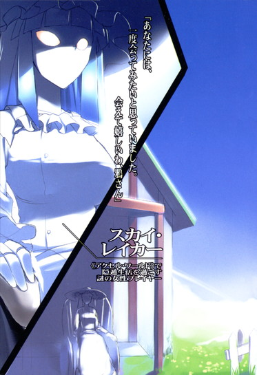
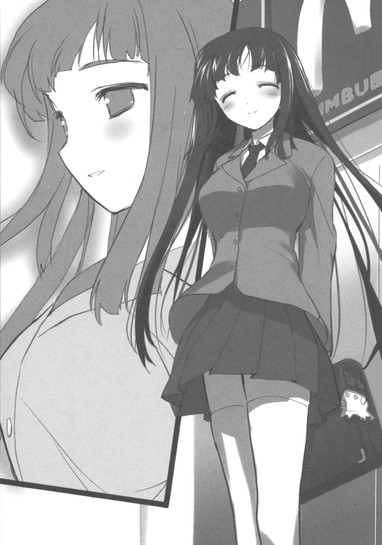

| [川原礫]アクセル・ワールド03 | |
| 川原礫 | |
| (2015) | |
|
アクセル・ワールド３ ─夕闇の略奪者─
川原 礫
|
底本データ
一頁17行 一行42文字 段組１段
「二重山括弧」は「山括弧」に置換え注略。
アクセル・ワールド３
─夕闇の略奪者─
「ゲームオーバーです、有田先輩......いえ、シルバー・クロウ」
学内一の美少女・黒雪姫との出会いによって人生が一変した少年、ハルユキ。デブでいじめられっ子だった彼も、立派な〈騎士〉として成長していた。
季節は春。二年生となったハルユキたちの前に、奇妙な新入生が現れる。〈ブレイン・バースト〉のマッチングリストに現れず、しかし日常では〈ブレイン・バースト〉を巧みに使いこなす謎の一年生。
黒雪姫が修学旅行で不在の中、〈ダスク・テイカー〉と呼ばれる歪なデュエル・アバターを出現させた一年生は、圧倒的な力でハルユキから『大切なもの』を奪っていく。再び中学内格差最底辺に堕ちたハルユキ。絶体絶命の彼がその時とった行動とは......!!
川原 礫
加速は無理でも減速はいずれできると思うんですよね。人工冬眠とかで。そしたらあの小説やあの漫画が完結してる時代に行けるわけですよ！と思ったら作者さま方もみんな冬眠していたというオチで！
イラスト：ＨＩＭＡ
10月３日生まれ。挿絵は今回が初のイラストレーター。『電撃萌王』小冊子への寄稿を見た文庫編集者が、今回の挿絵依頼をオファーしたことがきっかけ。本業仕事の合間を縫って、ブログやＳＮＳサイトなどでイラストを発表している。

アクセル・ワールド 03
夕闇の略奪者
■黒雪姫（クロユキヒメ）＝梅郷中学の副生徒会長。清楚怜悧なお嬢様。その素性は謎に包まれている。学内アバターは自作プログラムの『黒揚羽蝶』。デュエルアバターは〈黒の王〉『ブラック・ロータス』。
■ハルユキ＝有田春雪（アリタ・ハルユキ）。梅郷中学一年生。いじめられっ子で太り気味。ゲームは得意だが、内向的。学内アバターは『ピンクのブタ』。デュエルアバターは『シルバー・クロウ』。
■チユリ＝倉嶋千百合（クラシマ・チユリ）。ハルユキの幼馴染。お節介焼きな元気娘。学内アバターは『銀色の猫』。
■タクム＝黛拓武（マユズミ・タクム）。ハルユキ、チユリとは幼少期からの知り合い。剣道が得意。デュエルアバターは『シアン・パイル』。
■能美征二（ノウミ・セイジ）。＝梅郷中学に進学してきた新一年生。その素性は謎に包まれているが、学校生活でも〈ブレイン・バースト〉を使用し、中学内格差（スクールカースト）の頂点に立っている。
■ニューロリンカー＝脳と量子無線接続し、映像や音声など、あらゆる五感をサポートする携帯端末。
■学内ローカルネット＝梅郷中学内に構築されたローカルエリアネットワーク。出席確認や授業などに利用され、梅郷中の生徒は常時接続が義務となっている。
■グローバル接続＝世界中のネットと接続する行為。梅郷中学内ではグローバル接続は禁止されており、その代わりに学内ローカルネットが提供されている。
■ブレイン・バースト＝黒雪姫からハルユキに転送されたニューロリンカー内のアプリケーション。
■デュエルアバター＝ブレイン・バースト内で対戦する際に操るプレイヤーの仮想体。
■軍団＝レギオン。複数のデュエルアバターで形成される、占領エリア拡大と利権確保を目的とする集団のこと。各々、〈純色の七王〉がレギオンマスターを担っている。
■領土戦争時間＝毎週土曜の夕方に設けられている、特別ルールのバトル時間。通常の１対１の格闘戦ではなく、レベル不問、同数対同数の団体戦が行なわれる。
■エリア支配＝〈領土戦争時間〉内で平均勝率五十パーセントを上回ることによってシステムに認められる特権。支配した領土内では、ニューロリンカーをグローバル接続していても〈対戦〉を拒否できるなど特権が与えられている。
■通常対戦フィールド＝ブレイン・バーストのノーマルバトル（１対１格闘）を行うフィールドのこと。現実さながらのスペックを持つが、システムはあくまで一昔前の格闘ゲームレベルのもの。
■無制限中立フィールド＝レベル４以上のデュエルアバターのみが許可されるハイ・プレイヤー向けのフィールド。〈通常対戦フィールド〉とは段違いのゲームシステムが構築されており、その自由度は次世代ＶＲＭＭＯにも全くひけを取らない。
■強化外装＝エンハンスト・アーマメント。デュエルアバターが所有する武器や防具などのアイテムのこと。初期装備として最初からクレジットされている、レベルアップボーナスとして獲得する、〈無制限中立フィールド〉内の〈ショップ〉で購入する、などで入手可能。
〈グローバルネット〉の名で呼ばれる最大のネットワークが、全地球というその呼称をも超越してしまったのはもう五年も前のことだ。東太平洋上に建設された宇宙エレベータの静止軌道ステーション、更には月の国際多目的基地までがネットに接続され、いまや望めば誰でも自宅から月面の準リアルタイム映像にダイブすることができる。
もちろん、ネットはそれ以外にも無数に存在する。国家や企業の防壁に守られた大規模クローズドネット、学校や集合住宅のローカルネット、あるいは個人の運営するプライベートネットなどが重層的に構築され、仮にその内部を飛び交う信号を可視化できれば、世界は白く輝く細かい網目にびっしりと覆われて見えるだろう。
それらと比較すれば規模の上ではあまりにもささやかではあるが、しかし有田春雪にとっては途轍もなく重大な意味を持つネットが、今ハルユキの自室に出現しようとしていた。
「......じゃ、じゃあ、繋ぐぞ、チユ」
やや上ずった声で宣言すると、チユこと倉嶋千百合は、こちらはさして緊張もしていない顔で答えた。
「なに勿体ぶってんのよ。さっさとやんなさいよ」
人の気もぉー、知らないでぇー。
と内心で呻きながら、ハルユキは左手に持ったプラグを自分の首のニューロリンカーへと挿入した。
同時に二つのワイヤード・コネクション警告が視界中央に赤く点滅し、消える。
ベッドに腰掛けるチユリの、薄紫色のニューロリンカーの左右コネクタからは二本のＸＳＢケーブルが伸び、片方は床にぺたりと座るハルユキに接続している。そしてもう一方は、メッシュチェアに腰を降ろしたタクこと黛拓武の首へと繋がっている。
何もこんな緊張感溢れる接続形態にしなくてもいいのに。いや、それ以前に──
「......べ、別にオレは直結する必要ないんじゃ......」
ぶちぶちそう口にすると、チユリが猫科っぽい瞳でじろりと一瞥浴びせてきた。
「だーめ。タッくんからのコピーがもし失敗したら、次はハルからインストールして貰う約束だもん。逃がさないからね」
「............ハイ」
頷き、ちらりと右に視線を振ると、タクムは縁なしの眼鏡を押し上げながら一瞬の苦笑を返してきた。
ハルユキとチユリ、タクムは、この南高円寺に建つ大規模マンションで同じ年に生まれた、いわゆる幼馴染の間柄だ。
長い間気心の知れた友達として毎日一緒に遊び、時には他愛ない喧嘩をして、また仲直りしたりということを続けていたが、三年前──三人が十一歳の年にチユリとタクムが付き合いはじめてハルユキは一歩身を引いた。結果、それまではだいたい正三角形だった人間関係は、角のひとつが遠ざかった二等辺三角形へと形を変えた。
しかし去年、とある事件がきっかけでその関係は一度完全にリセットされ、約半年が経過した現在も、実に微妙な状況が継続している。
ハルユキとしては、二人には早く仲直りしてほしい。しかし事件を引き起こしたタクムがいまだに自分を責め続け、一切能動的なアクションを起こそうとしないため、三角形の各辺は日々伸びたり縮んだりで安定しない。そう──、今この瞬間、三つのニューロリンカーのあいだで不規則に揺れている二本のケーブルのように。
「それじゃ、準備いいかな、チーちゃん」
内心を窺わせないソフトな声音で、タクムが言った。
チユリは短めの髪を揺らしてこっくりと頷き、スカートの裾から覗く小さな膝小僧の上で両手をきゅっと握った。
タクムも頷き返し、長い指をひらりと空中──彼だけに見える仮想デスクトップに走らせたが、中指の腹でファイルを押さえたところで、かすかな躊躇いを整った白皙に浮かべた。
「............チーちゃん。最後に、もう一度だけ確認しておくけど......ぼくが今から送信する〈ブレイン・バースト〉は、ゲームであってゲームじゃない。ものすごい特権と快感、スリルを与えてくれる代わりに、ありとあらゆる種類の代償を求めてくる。いつか......後悔するかもしれないよ」
その言葉は、ハルユキの内心の危惧を余さず代弁していた。
謎のゲーム・アプリケーション〈ブレイン・バースト〉をインストールし、加速能力者〈バーストリンカー〉となった人間は、もう二度と後戻りすることはできない。加速世界という未知のネットに搦め捕られ、そこに接続する権利を維持するべく、永遠に〈対戦〉を繰り返さなければならないのだ。そのプレッシャーは、時として人格すら歪めてしまう。タクムが、チユリのニューロリンカーにバックドアウイルスを仕掛けるという事件を起こして一時絶交を宣言されたのも、加速能力を喪う恐怖に限界まで追い詰められたからだ。
しかし、左右から心配顔を向けられたチユリは、ぷうっと頬を膨らませると尖った声で言い返した。
「あのね！ あたしがそのバーストなんちゃらになるって言ったのは、カソク能力とかが欲しいからでも、ましてやあの先輩の家来になりたいからでもないわよ！タッくんとハルの、その深刻ぶったとこが気に食わないの！ゲームなら、もっと楽しそうに遊ばないとダメってことを、ガッツリ教えてあげるためなんだからね！」
思わず上体を仰け反らせてから、ハルユキとタクムは同時に眼を見交わし、苦笑した。
「わ、わかったよ、チーちゃん。じゃあ......いいね、送信するよ」
「どーぞ」
ついっと尖った顎を持ち上げ、チユリが瞬きで促した。
その顔に向かって、タクムが空中で指先を滑らせた。
チユリの大きな瞳が、宙の一点を見据えた。今そこには、アプリケーション〈Brain Burst 2039〉のインストールを確認するダイアログが開いているはずだ。
膝から右手を持ち上げ、チユリは何の躊躇いも見せずに、人差し指をイエスボタンのある位置に突き刺した。
「あっ............!?」
直後、ベッドの縁に座る、ピンク色のニットを着た小柄な体がぴくんと跳ねた。見開かれた両眼がくるくると左右を見回す。ハルユキは半年前、自分自身がブレイン・バーストを受け入れた時のことを思い出していた。ボタンを押した途端、視界いっぱいに仮想の火焔が噴き上がったのだ。
その炎は、プログラムがインストール者の〈加速適性〉をチェックするために見せているものだ。
バーストリンカーとなるにあたって要求される適性は二つ。一つは、生まれた直後からニューロリンカーを装着していることで、これはチユリも文句なくクリアしている。しかし問題は二つ目、大脳の応答速度のほうだ。
ニューロリンカーは、無線量子信号というもので装着者の脳と交信する。だが、生体器官である脳の反応には個人差がある。生まれつき反射神経の回路が高性能だったり、あるいは長期間の訓練によっても向上させられるが、ともかくニューロリンカーと脳の応答スピードが一定レベルを超えていないと、幻の炎が途中で鎮火してしまい、ブレイン・バーストのインストール成功には至らないのだ。
いや......いっそ、失敗したほうがいいのかも。
汗ばんだ両手をぎゅっと握りながら、ハルユキはついそんなふうに考える。
加速世界には、そこで戦う者たちの生々しい感情──憎悪や怨恨、嫉妬と欲望、その他あらゆる種類の悪意が渦巻いている。天真爛漫なチユリがそれらに曝されて傷つく姿なんて絶対に見たくない。
『............ハル』
不意に、頭の奥でタクムの声が響いた。思考音声をハルユキに限定して送り込んできたのだ。
ちらりと視線を右に振ると、幼馴染の少年は椅子の上で軽く唇を噛んでいた。
『ぼくは......怖いよ。チーちゃんが......変わってしまうのが......』
指先で素早く仮想デスクトップを操作し、同じく音声の行き先をタクムだけに指定してから、ハルユキは答えた。
『オレたちが......いや、お前が護ればきっと大丈夫だよ、タク。それに、まだインストールが成功するって決まったわけじゃないし。ていうか......チユには悪いけどさ、無理だろたぶん』
『ま......まあね。何だか凄い特訓したって言ってたけど、たった二ヶ月くらいで〈適性〉ができるとも思えないしね......』
と、その時。
きょろきょろと周囲を見回していたチユリの顔が、さっと正面に固定された。
やや太めの眉が寄せられ、瞳の焦点が左から右へと動く。
唇が小さく開き、そこから零れた肉声の呟きを、ハルユキとタクムは息を詰めて聴いた。
「なに、これ？ う......ウェルカム・トゥ・ジ......アクセラレーテッド・ワールド？」
１
窓を殴りつけるような強烈な風鳴りが、ハルユキの浅い眠りを破った。
暗闇の中、布団を被ったまま耳を澄ますと、吹き寄せる風に乗って無数の水滴が窓ガラスにびしびしと弾ける音が聞こえた。いつの間にか雨も降りだしたらしい。
きっとこの嵐で、夜のうちにマンションの敷地内の桜はほとんど散ってしまうだろう。しかしそんな風物とは無関係に、春というのはハルユキにとって憂鬱な季節だった。
理由は二つある。まず一つは、湿度と気温が上昇しだすこと。汗腺の機能が人一倍活発なハルユキは、摂氏二十五度あたりでもうおでこがシットリし始めてしまう。
そしてもう一つは、学年が変わることだ。長く続いた受難の日々がようやく終わり、どうにか当たり障りのないポジションを得たかどうか、という所でクラスがシャッフルされるのは嫌がらせ以外の何ものでもない。見慣れぬ生徒たちを相手に、またＰＩＮＧを打って距離を測る所から始めるのかと思うと気が遠くなる。
せめて、春休み最後の数時間を、少しばかり引き伸ばしても罰は当たるまい。
そう思って、ハルユキはベッドの天板から手探りでニューロリンカーを掴み取った。首に後ろから装着して電源を入れると、軽い駆動音とともにロックアームが内側に動く。起動ステージが開始され、五感との接続チェックが完了すると同時に、目の前に半透明の仮想デスクトップが展開する。
視界右下、〈２０４７／０４／０８ ＡＭ０１：２２〉という時刻表示を一瞥してため息をついてから、ハルユキは大きく息を吸い、口を開いた。
「バースト......」
リンク。
という魔法の呪文を唱えようとした、その直前。
軽やかな着信音とともに、音声通話の呼び出しアイコンが青白く点滅した。
反射的に右手の指先でタッチしたのと、そのコールが二フロア下に住む幼馴染からだと気付いたのはほぼ同時だった。
『......ハル、起きてる？』
頭の中央にぽそっと響いた声に、ハルユキは軽く動転した。夜十時には寝て朝七時まで何があろうとも目覚めないはずのチユリが、いったいなんでこんな時間に。そしていったいなんの用事で。
縺れた思考を頭の片隅に押しやり、ハルユキは思考音声ながらモゴモゴと答えた。
『ついさっき、目が覚めたとこ......』
『風、すごいもんね。でも、あたしが寝付けないのは別件だけど』
『寝付けない!? お前が!?』
ついそう口走ると、間髪入れずにチユリが『あのねえ！』と叫んだ。
『あんた、あたしを何だと思ってるのよ。そもそも、寝られないのはハルのせいなんだからね！』
『へ......？ お、オレ......？』
『そうよ。あんた、今日の......もう昨日か、夕方にあたしが帰ろうとした時、おかしなこと言ったじゃない。今夜は怖い夢を見るかもしれないけど、絶対にニューロリンカーを外したり、電源を切ったりするな、って。そんなこと言われたら、不安になって寝付けないのも当たり前でしょ！』
確かに、ハルユキは約十時間前、チユリに向かってそう言った。
理由は単純だ。対戦格闘ゲームソフト〈ブレイン・バースト〉は、インストールが完了した最初の夜に悪夢という形でその者の記憶をサーチし、トラウマや劣等感といった心の傷を濾しとって、戦場における分身である〈デュエルアバター〉を生成するからだ。
半年前、ハルユキ自身も、ブレイン・バーストを得たその夜に史上最大級の悪夢を見た。内容はおぼろげにしか覚えていないが、その結果ソフトが創り上げたのが、ひょろっとした極細ボディに巨大なヘルメット頭が乗った銀色のアバター〈シルバー・クロウ〉というわけだ。
当時の自分のがっかりっぷりを懐かしく思い出しながら、ハルユキはチユリに答えた。
『し......仕方ないだろ。その夢を見ないと、肝心のデュエルアバターが創れないんだから。つうか......今ふと思ったんだけど、お前に心の傷なんてあるのかな......』
『この、言ってくれるじゃないの！ あるわよトラウマくらい。昔、小学校の遠足で、どっかの誰かがバスの中でゲームして平衡感覚がおかしくなってすっごい車酔いした挙句あたしの膝に』
『すいません。ごめんなさい。それ以上言わないでください』
むしろ自身のトラウマを刺激されて、ハルユキは呻き声で謝罪した。しかしチユリの追及は止まらず、ふくれっ面が目に見えるような調子の文句が続いた。
『あー、思い出してみたら、ハルあの時あたしにちゃんと謝ってないよね。ちょうどいいわ、今貸しを返しなさいよ』
『え......ええ!? 何年前の話だよ......もう時効だろ！』
『時効って言葉はそのうち死語になるって、こないだニュースで言ってたもん』
確かに、日本全国のあらゆるパブリックスペースの映像を記録する〈ソーシャル・カメラ・ネット〉の整備に伴って、刑事事件の公訴時効というものは数年前に全廃された。しかしその伝でいけば、ハルユキはいったいチユリに返すべき借りが幾つあるのか知れたものではない。
『〈幼馴染特別法〉じゃ何でも一年で時効って決まってるんだよう』
ぶちぶちと呟いてから、ハルユキは本物の口からのため息と、脳内からの質問を同時に出力した。
『......んで、どうやって貸しを返せっつーんだよ。また〈えんじ屋〉のジャンボパフェか？』
『あそこ最近味が落ちた気がする。牛乳を合成ミルクに変えたせいだわ多分......って、違うわよ。口で説明すんのめんどいから、今すぐうちのホームネットにダイブしなさい。ゲート開けとくから』
『へ......？』
予想外の命令にぱちくりと瞬きした時にはもう、チユリからの音声通話は切断されていた。アイコンが点滅を経て消えるのを眺めながら、ハルユキはこんな時間からいったい何をするつもりだろうと首を捻ったが、ここでばっくれるほどの度胸があるわけもなく、やむなく命じられたとおりに肉声でコマンドを唱えた。
「ダイレクト・リンク」
途端、しゅわっという効果音とともに薄暗い自室の光景が放射状に溶けて消える。体表面感覚や重力感覚も切断され、ハルユキは暗闇の中をゆるやかに落下する。ニューロリンカーの〈完全ダイブ〉機能によって、意識だけがネットへと解き放たれたのだ。
しばしの浮遊感を味わうハルユキの視界に、下方から幾つかの円形のアクセスゲートが近づいてきた。それぞれが、現在ダイブ可能なネットへの入り口となっている。お気に入りに登録しているグローバルネット上のＶＲスペースや、自宅マンションのローカルネットのものに混じって、倉嶋家ホームネットのタグがついたゲートが存在した。ハルユキはそちらに向かって不可視の右腕を伸ばした。
すぐに仮想の引力が発生し、ハルユキの意識は小さなゲートへと吸い寄せられる。すぽん、と飛び込むと同時に、目の前に穏やかなレモンイエローの光の輪が広がり──。
「う......うわっ」
出現した光景に、ハルユキは思わず声を上げた。
通常、一般家庭ホームネットのＶＲスペースは、やはり家屋の構造を模している。〈居間〉や〈応接間〉、家族の〈個室〉が存在し、それぞれを現実世界では実現不可能な広さや飾りつけでカスタマイズして楽しむ場合が多い。
しかし今、ハルユキの眼下に広がったのは、色とりどり形さまざま大小無数の──クッションの海だった。
四方に壁は存在しない。うららかな青空のもと、パステルカラーのクッションが地平線までひたすらに積み重なっている。その真ん中にハルユキは墜落し、ぼよーんと跳ね返り、再度ぼすんとお尻から着地した。
「............な、なんだこりゃ」
正面に横たわる黄色いキリン型クッションと、その隣のゾウ型クッション、更に隣の奇怪な形状のやつに眼を留め、ハルユキはもう一度呟いた。
「それはアノマロカリスよ。カンブリア時代の生き物」
不意に背後からチユリの声が響き、ハルユキはぐるりと振り向いた。
恐らくオニヒトデらしい黒い星型クッションを踏みつけて、華奢なフォルムの仮想体が立っていた。全身を柔らかそうな薄紫の毛皮に包み、小さなワンピースをまとった、猫が人間に進化したらこんな風になるだろうというデザインのそれは、チユリが梅郷中学校ローカルネットでも使用しているアバターだ。
六割がた猫に近い顔の、大きな水色の瞳を瞬かせてチユリはふんと鼻を鳴らした。
「あんた、まだそのアバター使ってんのね。いいかげん他のに変えればいいのに」
そう言われ、ハルユキはちらりと自分の体を見下ろした。
そこにあるのは、これも学校と共用の、桃色のブタ型ボディだった。ほぼ球形に近い胴体に、丸っこい手足。顔の中央からは平らな鼻が突き出し、自分では見えないが頭には大きな耳が生えているはずだ。
格好いいとも可愛らしいとも到底言えない姿であり、実際これはハルユキが自分で選択したアバターではないのだが、何となくずるずると使い続けている。ハルユキはふがっと鼻を動かしてから、言い訳するように応じた。
「もうこの体の感覚に慣れちゃってるから、今更変えるのも面倒だし。それより......オレがさっき、なんだこりゃ、って言ったのはこの謎生物についてじゃなくて、ＶＲスペース全体にだよ。いったい何なんだよこのクッションじご......天国は」
確かにチユリは昔からこういうぬいぐるみ系クッションが好きで、ベッドに色々転がっていた記憶はあるが、この規模はとんでもない。オブジェクトの総容量どんくらいなんだろう、と思いながら訊くと、猫型アバターはリボンの付いた尻尾を揺らして自慢げに笑った。
「にっひひ、いーでしょ。こないだ、進級祝いでホームサーバーに増設してもらったあたし専用のメモリに作ったんだ。この解像度でも、端から端まで十五キロもあるんだよ」
「ま......マジかよ！」
反射的に仰け反った途端、丸いお尻がずるっと滑り、ハルユキはゾウとアノマロカリスの間に埋まりこんだ。じたばたもがきながら考える。それだけの容量があれば、自分なら一九四三年クルスクあたりの戦場を再現するのに。ティーガー戦車やＴ─３４戦車を山ほど配置し、空にはＢｆ１０９戦闘機を。嗚呼、なんと血湧き肉躍る光景ならんか。
「......な、なあチユ、オレにもちょっといじらし」
「だーめ!!」
言葉の途中でつれなく拒絶し、チユリは小さな牙の覗く口からべーっと舌を出した。
「ハルにカスタマイズさせたら油と鉄と煙くさいやつ作るに決まってるもん」
「そ、それがいいんじゃん」
「いーやーでーす！ あーもう、ぜんぜん話が進まないじゃない」
細い両腕を組む猫型アバターを見上げ、ハルユキはようやく呼び出された理由を思い出した。
「あ......そ、そっか。そんで、いったいオレは何すりゃいいんだよ」
「そこに座ってればいいわ」
「へ？」
わけが判らず、ハルユキは巨大クッションの上で、短い両脚を前に投げ出した格好のまま首を捻った。と、その直後──。
ぴょん、と目の前にジャンプしてきた猫型アバターが、一切の躊躇いなく、そのしなやかな体をハルユキの脚の上に横たえた。
「う......うわあ!?」
跳び上がるように離脱しかけたハルユキの鼻を、チユリの右手がむぎゅっと掴んで元の位置に引き戻した。
「あんた、そこでしばらくマクラになんなさい。それであの遠足の時のことは忘れてあげる。言っとくけどエロイことしたらアノマロカリスにかじらせるからね」
「し、しないよ！ ていうか......マクラってど、どういう......」
うわずったハルユキの声にはもう答えず、チユリは小さな爪の伸びる指をぱちんと鳴らした。途端、頭上の穏やかな青空が、一方からぐるりと回転し、巨大な月の浮かぶ夜空へと切り替わった。
絵本のような星型の星がちりりんとかすかな効果音を鳴らして瞬く下──そしてハルユキの膝の上で、チユリは大きく伸びをしてから体を横向きに丸めた。
「......べつに、深い意味はないわよ」
ハルユキからは見えない口が、小さくそう呟いた。
「ただ、ハルがよくうちに泊まりに来てた頃、あんたをマクラにするとすぐ眠れたのを思い出しただけ」
「............い、いつの話だよそれ......」
「さあ。ずっと......ずうっと昔」
ふわ、とひとつ欠伸をして、猫型アバターは本当に瞼を閉じた。
......こういう役なら、タクに頼めよ。
と言おうとして、ハルユキはその言葉を呑み込んだ。幼い頃、こうしてチユリに枕がわりにされた経験があるのはハルユキだけだ。両親の教育方針が厳格だったタクムは、二人の家のどちらにも泊まることはまったくなかった。
でも、だからって、そんな大昔の条件反射が今も残っているものだろうか。しかも今は双方動物型のアバター同士で、ここはニューロリンカーの作り出す仮想のクッション天国だ。しかしもちろん、もう生身でこんな真似をすることは絶対にできない。いや、ＶＲだってどうなんだ、実際のところ。
そんな思考をぐるぐる巡らせていると、呆れたことにチユリは本当に穏やかな寝息を立て始めた。
「............まったく......」
思わずそう呻いた途端、寝入ったとばかり思っていたチユリが、むにゃにゃと不明瞭な声で呟いた。
「ねえ、ハル......。あたし、本当に頑張ったんだからね......」
「へ？ 何を......？」
「バーストリンカーになるために......すっごい頑張ったんだから......。これで......また、あたしたち、戻れるよね。あの頃みたいに......三人で、毎日、日が暮れるまで遊んでた......あの......頃に............」
そこで、チユリは今度こそ深い眠りに落ちたようだった。すう、すう、と仮想の呼吸音を響かせるアバターの、耳の下あたりの柔らかい毛皮にそっと右手で触れながら、ハルユキは胸中でぽつりと答えた。
──決して変わらないものはあるだろう!!
──でも、変わってしまって、二度と戻らないものだってきっとあるんだ。
数分後、チユリの深睡眠状態を検知して、ニューロリンカーが自動でフルダイブを解除させた。鈴の音のような効果音とともに膝の上から猫型アバターが消え去ったあとも、ハルユキはしばらく物言わぬ動物たちの間にじっと座り込んでいた。
２
杉並区東寄りに存在する、私立梅郷中学校は各学年たった三クラスと、規模は決して大きいとは言えない。
それでも、体育館に整然と並んだ全校生徒三六〇人の視線の圧力は相当なものだろう。仮に自分がそれを集中照射されれば、物理的に焦げ穴の一つも開いてしまう自信がハルユキにはある。
しかし、入学式兼始業式の壇上に立ち、ニューロリンカーを使わずとも列の最後尾まで届きそうな凛とした声で語る人物の顔は、一ミリグラムの荷重も感じさせないほどに涼しげだった。
「......諸君の大多数は、いま期待と不安を等しく感じているだろう。ことに新入学生の皆は、見知らぬ校舎、見知らぬ上級生に大いに途惑っているかもしれない。しかし、考えてほしい。今君たちの後ろですまし顔をしている者たちも、一年前、二年前は君たちとまったく同じ不安を抱えて同じ場所に座っていたのだ......」
──まったく、あんな立派なコトを喋ってる人が、もう一つの世界では秩序の破壊者で無慈悲な殺戮者で、その上米軍海兵隊もびっくりの鬼教官なんだからなぁ。
と内心でぼやきつつも、ハルユキは抑えきれない憧憬の眼差しを、壇上の女子生徒──黒ブラウスに臙脂色のリボンを飾り、すらりと長い脚を黒ストッキングに包んだ黒雪姫へと向け続けた。
あの人と、特別な関係──と呼んでも全面的には否定し切れないであろうものになってもう半年も経つのに、いまだにハルユキは彼氏とか彼女とかそういった境地にはまるで辿り着けない。学内での、周囲からの認識も似たようなもので、黒雪姫が義務感と憐れみによってイジメから助けた丸ちっちゃい下級生をそのまま愛玩動物がわりに連れ歩いている、と思われているフシがある。
それに対してハルユキは、実際のところ何の不満もない。むしろ事実を言い表しているとすら思っている。さすがにペット扱いは勘弁だが、お姫様に仕える騎士──いや従者、いやいや小姓、そのへんでまったく満足だ。
「......一年間、換算すれば三一五三万六千秒、その時間は膨大なようで過ぎ去ってしまえば一瞬だ。どうか実り多き一年を過ごしてくれたまえ。それでは、以上で私の挨拶を終わる」
頭を下げ、長い黒髪をさっと振り広げて体を戻した黒雪姫は、後ろに並ぶ生徒会メンバーの列に加わった。
全校生徒たちと同じように懸命に拍手しながらも、ハルユキはふと考えざるを得なかった。
今日で、僕は二年生に、先輩は三年生になる。つまりあとたった一年──それであの人はもう、梅郷中学校を卒業してしまうのだ。
いや、それで関係が断たれてしまうわけではない。あの人とは、同じ中学の先輩後輩なんてものよりもずっと強い──バーストリンカーとしての〈親子〉という絆があるのだから。
ぎゅっと一度両眼をつぶり、再び見開いてから、ハルユキはいっそう強く両手を打ち合わせた。
その時。
遥か壇上の黒雪姫を一心に見詰めていたハルユキは、超然とした美貌がほんの一瞬ぴくりと動いたのを感じた気がした。
細められた漆黒の双眸が、最前部に並ぶ新一年生の集団のある場所にぴたりと止まり、すぐにまた前へと戻った。ハルユキは眉を寄せ、椅子の上で背を伸ばして黒雪姫の視線が射貫いたのが誰なのか確かめようとしたが、もちろん同じような制服の中から一人を見分けることなどできなかった。
入学式が終わり、校舎に戻ったハルユキは、うっかり三階まで登ってしまいそうになってから慌てて二階の新しい教室へと進路を変更した。
自分のクラス配置はすでにローカルネット経由で通達されているが、他の生徒の名前は教室に入るまで判らない。頼むから、また〈ブタくん〉呼ばわりしたりパン買って来させたりする奴のいないクラスにしてくれ！と念じつつ二年Ｃ組のドアをくぐったハルユキは──。
「ハル、おーっす！」
の声とともにどすんと思い切り背中を叩かれ、息を詰まらせた。
高速で左九十度回転した視線の先にあったのは、相も変わらぬネコ型のヘアピンで前髪を持ち上げ、八重歯を見せてにんまりと笑う幼馴染の顔だった。
「............ち、チユ。お前......ここ？」
「何。何その複雑そうな顔」
むうっと唇を突き出すその様子に、こいつほんとにゆうべ例の〈悪夢〉見たのかなあと内心首を捻りつつ、ハルユキは答えた。
「べ、別に何も」
そう、たとえチユリと同じクラスになろうとも、イジメさえ復活しなければ怖れる必要はないはずだ。ただ、それ以外の問題もあると言えばある。これでまた、三角形の各辺の長さがビミョウーなことに──
「やあ、ハル。チーちゃんも」
再びぽんと背中を叩かれ、ハルユキは今度は右に九十度回転した。見上げた先にあったのは、青い眼鏡の奥で微笑むタクムの顔だった。
なんと三人ともに同じクラスに配置されたらしい。つまり三角の形はそのままにサイズが縮むということになる。昨夜のチユリの、『戻れるよね、あの頃に』という言葉を思い出し、かすかに胸がざわめくのを自覚しつつも、ハルユキは同じように笑みを作って言った。
「うっす、タクもＣ組か。......ええと」
あやふやに憶えている確率の計算法をこの状況に当てはめ、ひねり出した答えを口にする。
「三人同じクラスになる確率は......三分の一かける三分の一かける三分の一で、二十七分の一か。すごい偶然だなあ」
すると、窓際に向けて歩き出しながら、タクムが軽くかぶりを振った。
「いいや、九分の一だよ」
「えっ、なんで？」
「なんで？」
ハルユキと同じ解答に達したらしいチユリも、同時に驚きの声を上げる。窓枠にスマートな長身を預けたタクムは、くいっとフレームレスの眼鏡を持ち上げて解説した。
「〈ぼくら三人が全員Ｃ組になる確率〉なら、ハルの言うとおり二十七分の一さ。でも、この場合クラスがどこになるかは関係ない。〈ぼくら三人が全員Ａ組あるいはＢ組あるいはＣ組になる確率〉なんだから、数字は三倍になって九分の一、ってことさ」
「は──！」
「そっか！」
再びチユリと同時にこくこく頷いてから、ハルユキはにやっと笑って付け加えた。
「さすがタク、春休みの間にますますハカセキャラに磨きが......」
「ハル、それほんと止めろよな！ もしこのクラスで〈ハカセ〉とか〈メガネ君〉とかあだ名ついたらハルのせいだからな」
真剣に嫌な顔をしてから、タクムは生徒たちが増えてきた二年Ｃ組の教室をちらりと眺めて声を低めた。
「......ともかく、世の中のいろんな偶然は、計算してみれば印象よりも案外そうなる確率が高い、ってことだよ。だから、一応備えておいたほうがいいと思うよ」
「へ？ 何に？」
きょとんとするハルユキに顔を近づけ、いっそうの囁き声で──。
「新一年生さ。あの百二十人に、未知のバーストリンカーが混じってる可能性に」
それを聞いて、一瞬鋭く息を吸い込んでから、ハルユキは小刻みに首を振った。
「そ、そりゃ......可能性はゼロじゃないだろうけど、でも、〈親〉と違う学校に入るなんてことがあるのか？タクみたいに転校してくるならともかくさ......」
「うん、普通は、自分と違う学校に入学する者をあえて〈子〉にしたりはしないからね。なぜなら、その学校に別のバーストリンカーがいれば、〈子〉がそちらの戦力として取り込まれてしまう可能性がかなり高い。加速世界で一番強固な関係性は〈親子〉だけど、〈同校〉もそれに次ぐものだからね......」
タクムの言うとおう、同じ学校に通うバーストリンカーは、いずれは不可避的に〈リアル割れ〉してしまう。相争えばその戦いは、必然ゲームの枠をはみ出すルール無用の死闘とならざるを得ない。その状況で互いのブレイン・バーストを守ろうと思ったら、いずれどこかで休戦し手を握り合うしかないのだ。
だからあらゆるバーストリンカーは、自分と違う学校に進む可能性がある相手を〈子〉に選ぶことはない。つまり、今この梅郷中学校に在籍するバーストリンカーが黒雪姫、ハルユキ、タクム──一応チユリも──だけ、という状況で、未知のバーストリンカーが新一年生として入学してくるということはほぼ有り得ないと言っていい。
しかし、確認しなくていいというわけではもちろんない。
去年、自分が新入生だった時のことを思い出そうとしながらタクムに訊ねる。
「えっと......新入生が最初にローカルネットに接続するのって、どんなタイミングだっけ？」
「そろそろじゃないかな。ぼくの前の学校と同じなら、確か入学式が終わって、教室に移動して、そこで初めてアカウントの配布があったんだよ」
その答えに、少し考えてから、ハルユキはにやっと笑って言った。
「......じゃあ、こうするか。どうせ確認にバーストポイントを１使うなら、ついでに〈対戦フィールド〉でチユのデュエルアバターがどんなのか見とこうぜ。次のホームルームが終わったあたりでオレが〈加速〉してチユに対戦申し込むから、タクはギャラリーに入ってくれ」
新しい担任は、日本史を受け持つ若い男性教師だった。菅野という名のその教師は、歳のわりにかなり強硬な『子供にネットは必要ない』論者で、ハルユキとしては親近感を抱けようはずもないが、熱血ノリのせいで他の生徒のウケはいい。
なんでもネットで検索してると、自分の頭で考えられない大人になっちゃうぞ！という趣旨の菅野の所信表明を聞き流し、生徒の自己紹介タイムもなんとかやり過ごして、一時間のホームルームが終了した直後、ハルユキは口の中で加速コマンドを唱えた。
「バースト・リンク」
バシイイイッ！ という乾いた雷鳴にも似た音が脳内いっぱいに響き渡り、周囲の光景が青一色に染まった。
同時に、教壇から降りかけた菅野や、椅子から立ち上がろうとしていた他の生徒たちが、ぴたりとその動きを止めた。
時間が停止したわけではない。ハルユキのニューロリンカー内部にひそむ〈ブレイン・バースト〉プログラムが、意識のみを一千倍に加速させたのだ。
仮想デスクトップの左側で、ひときわ明るく燃え上がる〈Ｂ〉のアイコンにタッチし、コンソールを起動する。マッチングリストの更新を、それなりにドキドキしながらじっと待つ。
リストの最上部に、すぐに〈シルバー・クロウ〉、つまりハルユキ自身のデュエルアバターの名前が浮かんだ。右側のレベル表示は４。
続いて〈ブラック・ロータス〉こと黒雪姫。もちろんレベルは９だ。更に、ハルユキと同じレベル４の〈シアン・パイル〉──タクムの名が現れる。
わずかに間をあけて、もう一つの文字列が、ぽっと輝いた。
〈ライム・ベル〉。レベル１。
そこでリストのサーチング表示が消えた。つまり、今この瞬間に梅郷中学校のローカルネットに接続しているバーストリンカーは四人、ということになる。そして〈ライム・ベル〉は間違いなくチユリだ。
もうこの時間には、新一年生百二十人は例外なくローカルネットへのサインインを済ませているはずなので、やはり入学生に新手のバーストリンカーは存在しなかったのだという結論になる。
しかし、一つだけ引っかかることがあると言えばある。
入学式の時、演壇の上で、黒雪姫が新入生の列に一瞬向けた鋭い視線。あの意味は何だったのか。
メールを飛ばして確かめておこうか、と一瞬考えたが、生徒会副会長でもある黒雪姫は今頃山ほど積み上がった各種タスクに忙殺されているだろうと思いなおす。
アバターの指を、梅郷中四人目のバーストリンカーの名前に伸ばしながら、ハルユキはちらりと考えた。
ライム、というのは恐らく黄緑色だ。少しだけ近接攻撃寄りの間接攻撃系ということか。しかし実際にどんな能力を持っているのかは、対戦してみるまで解らない。
デュエルアバターは、それを宿す者の劣等感の顕現──。半年前の、黒雪姫の言葉が耳の奥によみがえる。
もちろん、アバターの外装を眺めるだけでその宿主の〈心の傷〉を即座に看破できるわけではない。事実ハルユキはいまだに、タクムや黒雪姫のいかなる劣等感があれほど強力なアバターを作り出しているのか推測すらできていない。
とは言え、やはりそれが〈隠された内面〉の顕れであるのは確かなのだ。
ハルユキは、青く凍った視界の中、左斜め方向に離れて座るチユリの後ろ姿をちらりと眺めた。わずかな躊躇いを呑み込み、〈ライム・ベル〉の名前に触れて、ポップしたメニューから〈デュエル〉をクリック。
出現したフィールドは、巨大な歯車やコンベアがごとごとと動き回る〈工場〉ステージだった。
己の姿が銀色の〈シルバー・クロウ〉に変化し、ＦＩＧＨＴの炎文字が弾けるのを待ってから、ゆっくり立ち上がる。
クラスメイトたちが姿を消し、代わりに謎機械群に取り囲まれた二年Ｃ組の教室を見回すと、まず青い大型アバター〈シアン・パイル〉の姿が目に入った。そちらに軽く頷きかけてから、ハルユキは反対側にぽつんと立つ、自分と同じくらい小柄なアバターを見つめた。
〈ライム・ベル〉は、予想通り鮮やかな若葉色の外装を纏っていた。
なよやかな全身のラインは明らかに女性型だ。手足や胴はほとんどシルバー・クロウなみに細く、腰には木の葉に似たアーマーが装備されている。
頭は魔法使いめいた鍔広のとんがり帽子型で、その下に猫を思わせる吊り目のフェイスマスクがあった。
しかし何より特徴的なのは、左手に装備された巨大な釣り鐘状の、恐らくハンドベルだ。武器なのか、あるいは見た目どおり楽器なのかと思いながら、ハルユキはそちらへと歩み寄った。
しげしげと左手に接続された鐘を眺めていた〈ライム・ベル〉──チユリは、ひょいと頭をかしげて言った。
「なんか......色が派手すぎない、これ？」
「文句言うなよ、そこまで彩度高い色は、欲しいったってなかなか出ないんだぞ」
「ていうか」
帽子の下で、オレンジ色の眼が訝しげに細められる。
「............あんた、ハル？」
「............です。言いたいこと解るから言わなくていいからな！」
早口でそう付け加えたが、チユリは容赦なく叫んだ。
「ほっそ！ このゲームのアバターは、トラウマの表現......なんだっけ？へー、ほー、なるほどねー」
「ほっとけよ」
現実の自分より半分以上細い胴回りをちらっと見下ろし、ぷいと顔を背ける。
するとそこに、いつの間にかシアン・パイルの姿があった。
右手に杭打ち機を装着した青いアバターは、どこか緊張をはらんだ視線で黄緑のアバターを見下ろした。
チユリもまた、無言でその眼を受け止めた。
かつて──半年前、タクムはこのアバター〈シアン・パイル〉を喪う恐怖に耐えかね、チユリのニューロリンカーにバックドア・プログラムを仕掛けた。
そのウイルスの本来の目的は、チユリのニューロリンカーを踏み台にして梅郷中学校のローカルネットに外部から接続し、加速世界最大の賞金首たる〈黒の王〉ブラック・ロータスを狩ることだった。
しかしウイルスの副次的効果として、タクムはチユリの視聴覚情報を盗むことが可能となり、彼はそれをチユリの本当の気持ちを探るという用途に使用してしまった。
のちにその事実を告白、謝罪されたチユリは当然激怒した。ハルユキとタクムは揃って絶交を宣言され、また口をきいてもらえるようになるまでに一週間を要した。彼女から提示された〈えんじ屋のパフェ食べ放題〉という和解条件を満たすために、二人のニューロリンカーのチャージ残高は限りなく軽くなってしまったが、それでも三人の関係は再び、以前と変わらぬかたちに修復された──。
と、ハルユキは信じ、またそうであるよう願ってもいたのだが。
三角形の三本の辺のうち、タクムとチユリを結ぶそれがいまもまだ不安定に変動していることを、見詰め合う二人の視線が示している。
「......ま、とっとと初心者講習会やっちゃおうぜ」
ほのかな緊張を断ち切るようにハルユキはそう告げ、黄緑色のアバターに向き直った。
「チユは、もうこの〈ブレイン・バースト〉のルールは、タクムから大体聞いてるんだよな？」
「うん。要は、ばんばん対戦に勝ってずんずんポイント稼いで、レベルが10になればクリアなんでしょ？」
「......か、簡単に言うなよ。まあそうなんだけどさ......」
あっけらかんとしたチユリの言葉に、いまのをあの人が聞いたら何と言うかとぷるぷる首を振ってから、ハルユキは続けた。
「と、ともかく、対戦に勝つには相手の弱点を見抜いて、自分に有利な戦い方をしなきゃならない。そのためには、まずは自分のアバターの性能をカンペキに把握しなきゃならないんだ」
──まさか、僕が誰かにこんな偉そうなこと言う日が来るなんてなぁ。
かすかな感慨を覚えつつ、右手の指先を動かす。
「視界のこのへんに、自分の〈体力ゲージ〉があるだろ？それにタッチして、出た窓から〈技リスト〉を開いてみてくれ」
本来は親であるタクムの役目だろうが、会話の流れ上ハルユキがそう指示すると、
「う......うん」
頷いたチユリは、ややぎこちない動きで指を伸ばし、宙の一点を叩いた。続けて幾つかの操作を加える。
「えーと......通常技、ってのが三つと、あと必殺技が一つあるみたい。〈シトロン・コール〉......？なんか、左手のベルを......こんな......」
呟きながら、チユリは技リストのアニメーション・シルエットの動きに合わせて、肘から先が巨大なベルとなっている左腕をぐるんぐるんと二度回し、最後に上からスナップを利かせて振った。だがもちろん、現状では何も起こらない。
「何よ、どうにもならないじゃない」
「必殺技を使うためには、体力ゲージの下にある青い〈必殺技ゲージ〉が溜まってないとだめなんだよ」
「それって、どうやって溜めるの？」
「対戦相手にダメージを与えるか、逆に自分が食らうと......」
そこまで口にした途端、チユリがおもむろに左手の巨大ベルをハルユキの頭めがけて振り上げたので、慌てて付け加る。
「そ、それとあとは、ステージを破壊しても溜まるんだよ。そのへんの機械、どれも壊れるから！」
「あっ、そう」
気のせいかやや不満そうに頷き、チユリは元は教卓があった場所に鎮座する蒸気機関めいたオブジェクトに歩み寄ると、盛んにスチームを吐き出すそれに躊躇なく左手を叩きつけた。
ぼかーん！ と小気味よい爆発音とともに火花と白煙が吹き上がる。
「わあ、気持ちいー！」
無邪気な歓声とともに、ベルトコンベアを回している歯車群を片っ端から叩き壊していくとんがり帽子のアバターを、ハルユキはぶるりと背中を震わせながら見詰めた。あの爆発のリアルさや、ステージの超高精細モデリングに感動のそぶり一つ見せないなんて、これだから女の子というのは......。
と内心でぶちぶち言っていると、これまで無言を続けていたタクムが、隣で小さく囁いた。
「ハル、気付いてる？ チーちゃんのＨＰゲージ、ぜんぜん減ってない。〈工場〉ステージの機械オブジェクトは、破壊するとき多少だけど被ダメージがあるはずなのに」
「あ......ほんとだ」
「外見のわりに、相当防御力が高いよ。〈緑〉はもともと、〈メタルカラー〉の次に防御に秀でた色だけど......」
タクムの冷静な分析に、ハルユキはふと、噂に聞く〈緑の王〉の鉄壁伝説を思い出していた。
ライム・ベルの装甲は、レベル１時のシルバー・クロウと比べれば明らかに硬い。つまり、チユリもまた防御型ということなのだろうか。本人のキャラクターとは真逆なような気がしてならないが。
そんなことを考えているうちに、ライム・ベルの必殺技ゲージは半分近くが青い輝きに満たされた。
「おいチユ、もう充分だよ」
言葉を掛けると、振り向いたアバターはつかつかと歩み寄ってくるや──。
一切の躊躇なく左手の大型ベルを高く振りかざした。
「ひぐっ!?」
悲鳴を上げ、反射的に頭上に両手を掲げたハルユキ目掛け。
ぐるぐると半時計回りに二度回されたベルが、突如眩い黄緑の煌きに包まれた。
「......〈シトロン・コ──ル〉!!」
案外サマになった技名発声と同時に、垂直に振り下ろされたベルから、りごりごりーん、という壮麗なサウンドエフェクトとともに光の粒が溢れ出し、シルバー・クロウの全身を覆った。
「............っ！」
いったいいかなるダメージが発生するのか予想もできず、ハルユキは息を詰めて眼をつぶった。熱か衝撃か、あるいは名前からして酸性の溶解攻撃という可能性も──
「............あれ？」
「............おや？」
耳に、左右からチユリとタクムの訝しげな声が届き、ハルユキはそっと薄目を開けた。
こわごわ見下ろした自分の体には、いまだに艶やかな白銀の輝きが健在だった。痛みも熱さもまったく感じないし、そもそもＨＰバーがまったく減っていない。
「何よこれー！ なんにも起きないじゃないの!!」
憤慨したようなチユリの叫び声に、反射的に首を振る。
「そ......そんなはずないよ。お前の技、間違いなくオレに命中したし......必殺技ゲージも減ってるし。継続時間ダメージ......でもないな。遅効性の時限起動ダメージかな......？」
ぶつぶつ呟きながら何かが起きるのを待ったが、何秒、何十秒待とうとシルバー・クロウのＨＰは微動だにしない。
「うーん......こりゃつまり、光と音だけの、目くらまし技ってことなのかな。確かに黄色系っぽくはあるけど......」
ハルユキの言葉に、チユリが憤懣やるかたない様子で腰に右手をあてた。
「つまんないわよそんなの！ ハル、あんたの必殺技いっこ寄越しなさいよ!!」
「ええっ、さすがにそりゃ無理だよう。だいたい、オレの必殺技って頭突きしかないし」
「この際それでもガマンするわ」
現実世界と何ら変わらぬ掛け合いを繰り広げていると、不意にタクムが低く呟いた。
「いや......、ただの眩惑技にしては、必殺技ゲージの減りが大きすぎる。半分溜まってたのに全部消費したからね......何か、もっと実際的な効果があったはずだ......」
逞しい両腕を組み、シアン・パイルは細いスリットの並ぶ顔を俯けた。
「ダメージじゃないし、弱体化でもない......てことは............あっ............待てよ、もしかしたら......!!」
発せられた鋭い声に、ハルユキはチユリと同時に首を傾けた。
「なんだよ、タク？ 何か思いついたのか？」
「............まあね、まさかって感じだけど......。チーちゃん、ちょっとそのベルで、普通にハルをどついてみて」
「うんわかった」
ゴチリ────ン!!
タクムの言葉が終わるか終わらないうちに、チユリが一切の手加減なく巨大ベルを振り下ろし、それを棒立ちのまま脳天に食らったハルユキの視界に無数の星が飛び散った。
「い、いでっ......」
と喚く間もなく容赦ない指示が続く。
「まだゲージが足りないな。あと三回くらい」
「うんわかった」
ズガズガズガリ────ン!!
......チユのベル、いいな。殴るとき凄いいい音するもんな。
などと考えつつ、ハルユキはあっけなく大の字に昏倒した。
あくまで対戦格闘ゲームであるブレイン・バーストでは、レベルアップしただけでＨＰや攻撃力、防御力が劇的に増えるわけではない。新たな必殺技や能力を得ることによって戦術の幅が広がりはするが、このように無抵抗に殴られれば相応のダメージは発生する。結果、ハルユキのＨＰゲージは四度の殴打で三割ほども減少し、代わりにチユリの必殺技ゲージは再び半分以上が青い輝きに満たされた。
ううう、と呻きながらどうにか立ち上がったハルユキの眼前で──。
再びベルがぐるぐる回され、黄緑色のライトエフェクトが煌いた。
──おっかしいなぁ、僕が先輩に最初のレクチャーしてもらった時は、こんな〈師匠が身を以て技を教える〉的シーンは一切なかったけどなあ。
──大体、そもそも、何で僕がチユの対戦相手してるんだっけ？
今更すぎる思考を巡らせると同時に、チユリが二度目の技名発声を、さっきよりも大きな声で行った。
「シトロン・コ──────ル!!」
澄んだ鐘の音。溢れ出すライムグリーンの光のリボン。そしてほのかに漂う、爽やかな柑橘系の香り。
それらがシルバー・クロウのボディを幾重にも包んだ、その瞬間。
「うあっ......!?」
ハルユキは、加速世界に於いて何ヶ月ぶりかの、心の底からの驚愕に見舞われて声を上げた。
画面左上、三割ほども削り取られた自分のＨＰゲージが──
みるみる回復していく！
ＨＰの回復。
対戦格闘というジャンルのゲームに於いては、本来有り得ない現象だ。事実、これまでハルユキは、〈ブレイン・バースト〉でゲージが回復するところなど一度として見たことはなかった。
いや、正確には、かつてたった一つだけ例外を目の当たりにしたことがある。三ヶ月前、凄まじい激戦を経て破壊され、消滅した呪いの強化外装〈クロム・ディザスター〉。あのアバターは、喰らった相手の体力を吸収し傷を癒す〈ドレイン〉という力を持っていた。
しかし、ディザスターと戦ったのは他のアバターのＨＰゲージが見えない〈無制限中立フィールド〉でのことだったので、実際にゲージが回復するところを目撃したのはやはりこれが初めてだ。
わずか十秒ほどでＨＰは満タンに戻り、同時に黄緑色の光も消え去った。
しかしハルユキは、そして少し離れた場所のタクムも、まったく動けず声も出せなかった。
硬直を解いたのは、何度目かのチユリの不満げな叫び声だった。
「やだぁ、何よ！ ヒットポイント、元に戻っちゃったじゃないのよ!!ずるーい、今のなし!!」
「いや......お、オレがずるいわけじゃなくて......」
掠れ声でなんとかそう言い、解説を求めてタクムに視線を向ける。
シアン・パイルは、細いスリットの奥の青い両眼をいっぱいに見開いていたが、やがて首を左右に振りながら低く呻いた。
「な......なんてことだ......。今のは間違いなく〈回復アビリティ〉だよ。チーちゃんのそのアバターは、〈回復術師〉だったんだ......」
「えー？ つまりいわゆる僧侶ぉ？なんか地味ー」
やや不満そうな声を上げるチユリに続けて、ようやく驚きから立ち直ったハルユキも、素直な感想を述べた。
「ヒーラー......。初耳だなあ。ブレイン・バーストにもそんなのいたんだなあ」
しかし、対照的にタクムは、何かを怖れるかのようにいっそう声をひそめた。
「地味どころか......とんでもないレアアバターだ。これは、チーちゃんが〈対戦〉デビューしたら、大変なことになるよ......。もしかしたら、シルバー・クロウが現れたとき以上の......」
３
「何だと」
ごく短いひと言と、それに続いた長い沈黙が、驚きの巨大さを表現していた。
現実世界では梅郷中学校副生徒会長、加速世界ではレギオン〈ネガ・ネビュラス〉頭首、そしてハルユキの〈親〉であるレベル９バーストリンカー、黒の王〈ブラック・ロータス〉こと黒雪姫は、たっぷり五秒以上もハルユキの顔を凝視してから、ようやく右手に持ったカップをソーサーに戻した。
「......倉嶋君がバーストリンカーになれるかどうかは、まぁ五分五分くらいかと予想していたが......よりにもよって〈ヒーラー〉とはな......」
長い黒髪を掻き上げ、白塗りの椅子の背もたれに体を預けて小さく嘆息する。漆黒のブラウスの上で、真新しい臙脂のリボンが艶やかに光る。
この頃ますます凄みを増してきた気がする美貌に、ハルユキはついついぽけーっと見とれた。
二〇四七年四月十日、水曜日、午後三時半。
例によって、学生食堂に隣接したラウンジの奥まったテーブルに、二人差し向かいで座っている。昼休みは全席が埋まるこの場所だが、放課後もあえてグローバルネット接続不可の校内で過ごしたいという物好きはそうそう居らず、今も他の生徒の姿はない。
チユリがバーストリンカーとなり、アバター〈ライム・ベル〉の特性でハルユキとタクムを驚倒させてから、すでに二日が経過していた。年度初めということもあって黒雪姫は生徒会関係で多忙を極め、昼休みも時間が取れずに、ようやく今日になって直接話すことができたのだ。
タクムからチユリへのインストールが成功したことと彼女のアバター名は、すでに二日前にメールで報告してあった。本当は同時にアバターの驚くべき能力についても書いておきたかったのだが、タクムが『それは直接会って伝えたほうがいい』と強く主張したので説明が今日になってしまった。
報告が遅れたことを小声で謝ると、黒雪姫はようやく視線を戻し、いや、と首を振った。
「それは、タクム君の判断が正解だ。もし万が一、ネットでこの件を話して他のバーストリンカーに盗み聞きでもされたら、大ごとでは済まなかったよ」
「そ......そこまでですか」
「間違いない。東京中からバーストリンカーが杉並に集まってきて、倉嶋君......ライム・ベルがどこかのレギオンに入る前に仲間に引き込もうと、あれこれ策を弄したに違いないさ」
薄い微苦笑とともにそう言われ、ハルユキは改めて瞠目した。
〈回復能力〉の稀少さは、加速世界に足を踏み入れて半年も経つのに、これまで見たことも聞いたこともないゆえに解ったつもりでいた。しかし、スカウト合戦まで起こるとはまったく穏やかでない。
稀少と言うなら、ハルユキの〈飛行能力〉こそレア中のレアだ。しかし〈ネガ・ネビュラス〉のタグをぶら下げてから、マークはされどもレギオン移籍を勧誘されるなど二、三回あったかどうかだ。
大きな驚きを感じながら、ハルユキはもごもごと訊ねた。
「で、でも......なぜです？ まだ実戦デビューさえしてないのに......」
「ン......そうだな......」
何と答えたものか考える素振りを見せてから、黒雪姫はぴっと指を一本立てた。
「こう言えば解るかな。加速世界が生まれてからすでに丸七年以上が経つが、〈回復アビリティ〉を所持したバーストリンカーはこれまでわずか二人しか出現しなかった。そのうち一人は数限りない誘いや暗殺の罠を撥ね退けていまだ健在だが、もう一人は己を巡って繰り広げられる争いに耐え切れずに、自分の意志で加速世界を退場してしまった」
「た............」
退場。とはつまり、自分で自分のブレイン・バーストを消去したということだろうか。
凍りついたハルユキに、黒雪姫はちらりとシニカルな表情を浮かべてみせた。
「ま、私に言わせれば、〈二人の王子の求愛に悩んだあげく塔から身を投げる〉など、お姫様病をこじらせ過ぎというものだが」
「そ、そんな、身も蓋もない......」
ハルユキが思わず頬を引きつらせると、黒雪姫は更に恐ろしいことを口にした。
「幸い、倉嶋君はそういうタイプではまったくないがね。それどころか、王子二人に決闘で決めろくらいのことは言いかねないな」
ははは、と笑うので、反射的に後ろをちらりと見てそこに誰もいないのを確認してしまってから、ハルユキは急いで話題を戻した。
「で、でもですね、その、なんで〈回復能力〉があるってだけでそこまで大騒ぎになるんです......？」
「想像してみたまえ。公式領土戦のチームバトルで、相手の前衛のＨＰを苦労して減らしたのに、そいつが後ろに引っ込んで戻ってきた時にはケロッと全快しているんだぞ。はっきり言って......」
「──やってらんないっすね」
確かにそれはキツい。というかヒドい。
ハルユキがこくこく頷くと、黒雪姫はひらりと右手を広げて言い添えた。
「つまり、だ。敵チームにヒーラーがいれば、何はどうあれ最初にそいつを沈めなければならん。ところが、そう考えるのは向こうにも容易く読めるわけで、イコール待ち伏せ、挟撃その他あらゆる罠を張り放題ということになる」
「......ははぁ......」
「はっきり言って、現在でも、敵にだけヒーラーが含まれる場合の対応策というものはまったく確立されていないんだよ」
にやっと笑いながら発せられた言葉に、ハルユキはきょとんと眼をしばたかせた。
「え、ちょっと待ってください。さっき、いま現役のヒーラーはたった一人......あ、チユを除いて、ってことですけど......そう言いましたよね。じゃあ、もしそのバーストリンカーが所属するレギオンが〈その気〉になったら、加速世界の統一も可能なのでは......？」
「可能性で言えば有り得るよ。充分に」
「なぜしないんです？」
ハルユキの素朴な疑問に、黒雪姫は一瞬苦笑いを浮かべてから、すぐにそれを消した。
細められた漆黒の双眸に、ぎらっと剣呑な光が横切った──気がした。放たれた声もまた、それまでとは異なる冷ややかな響きを帯びていた。
「単純な理由だ。そのヒーラーとは、いまや〈純色の六王〉の一人だからだ。たとえチームバトルで九十九パーセントの勝率を誇ろうとも、ただ一度でも他の王に討たれれば、その時点で〈加速〉を喪ってしまうからな。それゆえ、戦場に出てこられないのさ」
「王の......一人!?」
ハルユキは、持ち上げようとしていた烏龍茶の紙コップを落っことしかけ、慌てて両手で掴み止めた。
「何色なんです!?」
せき込んでそう訊ねたが、なぜか答えはすぐには返ってこなかった。
視線を下向けた黒雪姫は、長いこと迷っているようだったが、やがてそっと首を横に振った。
「......すまん、今はその者のことは、名前すらキミに聞かせたくない。キミに、あやつに対する興味を、砂粒ひとつぶんほども抱いてほしくないのだ」
「え？ それは......どういう？」
黒雪姫の意図が掴めず、ハルユキは間の抜けた質問を発した。
問いに対して返されたのもまた問いだった。
「なあ、ハルユキ君。妙なことを訊くようだが......キミ、この半年で、他のレギオンに何回スカウトされた？」
「はっ!?」
びん、と背筋を伸ばし、ハルユキは何度か口を開閉させた。
しかしもちろん、嘘をつくなどという選択肢があろうはずもない。消え入りそうな声で事実を伝える。
「あの......三ヶ月前のニコの一件も含めれば、〈王〉の率いる六大レギオンからは二回。それ以外のちっちゃいとこからが一回です。で、でも、当たり前ですけど全部その場で速攻断ってますから!!」
最後の一言を必死に付け加えたが、残念ながら黒雪姫はあまり感銘を受けたふうでもなく──と言うよりも他に気にかかることがあるようで、きゅっと眉を寄せて更に問うてきた。
「ふむ。その、六大レギオンからの残り一回とは、具体的には何色だ？」
「......えっと......あれは確か、青だったかな......」
答えると、数秒してから、黒雪姫はふうっと細長く息をついた。
「............そうか、なるほどな。しかし、青とはね。あれだけ毎週刺客を送り込んでおきながら、幾ら何でも図々しすぎるだろう」
「ほ、ほんとですよね」
ようやく白い美貌が少しばかり綻んだので、ハルユキもほっと口元を緩めてから、改めて首をかしげた。
「でも、それがどうかしたんですか？」
「もちろん、信じているよ。キミが、他の王の誘いに乗るなんてこと絶対有り得ないとね。信じているが......それでも、不安に思うのを止めることはできない。それほどまでに、奴の引力には絶対的なものがあるのだ......」
〈奴〉というのがどの色の王を指しているのか、ハルユキには解らなかった。
途惑うハルユキを、夜空の色の瞳でじっと見つめ、黒雪姫は不意に右手を上げた。なよやかな仕草でハルユキの丸い頬から顎へのラインを撫で、同時に囁く。その声は絹のように滑らかだったが、それでいてどこか冷たく張りつめていた。
「ハルユキ君。いいか......キミは私のものだ。これまでも、そしてこれからも。未来永劫、他の誰にも渡さん」
突然の接触および宣言に、ハルユキはぎょっと眼を剥き、呼吸も忘れて硬直した。
言葉面だけなら、愛の告白──と受け取れないこともなかった。しかしハルユキの耳には、黒雪姫が唇を閉じたあとも、音にならなかった声がはっきりと聞こえた、ような気がした。
──もし他の王のところに行くというなら、その前に斬る。
ぞくりと背筋に戦慄が走るのを感じながら、それでもハルユキは内心で答えていた。
──その時は、容赦なく斬ってください。
同時に、声に出しては冗談めかした応じ方をした。
「あ、当たり前です。何なら、僕のアバターに油性マジックで名前書いてもいいですよ」
「......ふふ、それはいい考えだ。言っておくが、〈向こう〉にもちゃんと存在するからな、消せないペン」
「え、ええ!?」
ハルユキの驚き顔に、黒雪姫はようやくいつもの笑みを浮かべると、手を下ろして紅茶をもう一口含んだ。
「すまん、ちょっと脱線してしまったな。主題は倉嶋君の件だったな。もう、〈ヒーラー型アバター〉のレアさはキミにも充分伝わったと思うが......」
カップを戻し、わずかに視線を彷徨わせてから、こくりと小さく頷く。
「確かに、タクム君の言うとおり、ことの扱いはいやが上にも慎重を期さねばならん。三人目の〈ヒーラー〉が加速世界に出現したというニュースが広まれば、ありとあらゆる勢力が倉嶋君を取り込まんと策動するだろうからな」
そう言われると、ハルユキとしても不安を覚えざるを得ない。
チユリが他のレギオンの誘いにほいほい付いていく、などと思っているわけではないが、しかし何と言っても〈ネガ・ネビュラス〉の頭首は、チユリと相性が良いとはまったく言えない黒雪姫なのだ。二人が大喧嘩でもすれば、直情径行なチユリのことだ。勢いでレギオンを脱退し、そこを敵対組織にすぽっと一本釣りされるなどという展開も、ことによると──いやけっこうな確率で──
「......ありそう、だなあ......」
呟き、ぶるっと背中を震わせていると、黒雪姫がふうっと長く息を吐いて言った。
「ここはやはり、一度彼女と胸襟を開いて話し合う必要があるなぁ」
「......そ、そうっすね」
と相づちは打ったものの、その場には絶対同席したくないし、それでいて見ていないのも大いに不安だ。せめて事前にタクムとあらゆる展開について対応を練り上げておき、うまいこと和解に持ち込めるよう努力するしかない。
──がんばろう。マキシマムがんばろう。
と決意し、テーブルの下でぎゅっと右拳を握った途端、しかし黒雪姫が予想外のことを言った。
「ま、どちらにせよ、十日先の話だな」
「へっ？ と、十日？ なんでそんなに待つんです？」
「なんで、って......」
やや呆れ顔を作り、黒衣の上級生はサラリと答えた。
「修学旅行だよ」
「は!?」
「今日のホームルームで配布された年間スケジュールファイルに書いてあっただろう。四日後の日曜から、新三年生は一週間の修学旅行だ。行き先は沖縄だから、お土産なにがいいか考えておいてくれたまえ」
──沖縄ぁ!?
脳裏に、ラフテーミミガーソーキソバ他の単語が次々とスクロールし、でもそんなもの東京まで持ってこられないよなあ、やっぱあれかな、ドーナツみたいな、ええと、さーたー......
「あんだーぎー？ でもあれは揚げたてじゃないと美味しくないぞ」
いつの間にか声に出していたようで、黒雪姫にそう言われてハッと我に返ったハルユキは、慌てて首をぶんぶん振った。
「ちょ、ちょっと待ってくださいよ。一週間も!?じゃあそれまでチユの件は保留っすか......いやその前に、来週末の領土戦はどうするんです!?」
〈公式領土戦争〉略して領土戦とは、毎週土曜日の夕方に開催される、レギオンの支配戦域を奪い合うチームバトルのことだ。
ハルユキの属する黒のレギオン〈ネガ・ネビュラス〉は現在、杉並第一～第三戦域、つまり杉並区全土を支配しているが、これを維持するためには領土戦時間中に挑んでくるチーム相手に勝率五十パーセントをキープしなくてはならない。
チーム戦の勝敗は、どちらかの全滅、時間切れの場合は生き残った人数、更にそれも同数の場合はＨＰゲージの合計量で決する。この頃はハルユキも、たとえ相手が狙撃型だとしても以前のように一方的に撃ち落とされるようなことはなくなってきているが、それもリーダーに黒雪姫という圧倒的攻撃力を誇る近接型がいるという安心感あっての話だ。
いやそもそもそれ以前に、領土戦で挑戦者チームの人数合わせが行われるのは、防衛側が三人以上存在する時だけだ。一人、あるいは二人でも防衛に出ることは可能だが、ということはつまり──
「え、も、もしかして、僕とタクだけで敵三人を相手にしなきゃならないんですか」
「ふむ、ま、そういうことだな」
しれっと頷き、黒雪姫はカップの中のミルクティーをくるくると回した。
「理想を言えば、来週末までに倉嶋君のレギオン参入が間に合うならそれに越したことはなかったが......バーストリンカーになってたった一週間で領土戦争に参加させるのも酷な話だしな。何、キミとタクム君のタッグなら、そんじょそこらの三人チームには引けを取るまい」
「は......はあ......」
そう言ってもらえること自体は決して嫌ではなく、ハルユキは微妙な笑いを浮かべた。
「努力はしますけど......じゃ、じゃあ、そんじょそこらじゃないのが出てきた時はもうしょーがないってことですよね。またその翌週に取り返せばいいんですもんね」
「いや、それはダメだ」
ぷいっと横を向かれてしまう。
「この杉並に、他のレギオンの旗が立つなどガマンならん。そういうわけでハルユキ君。死守だ」
「シシュ!?」
あっという間に涙目になるハルユキをちらりと見て、黒雪姫はやれやれというふうに微笑んだ。
そして、突如とてつもない台詞を放った。
「そうだなぁ......じゃあ、こうしよう。もし来週の防衛に成功したら、ご褒美にキミのお願いを何でも一つ聞いてやる。どうだ？」
「ゴホウビ!?」
いきなりの、物理的攻撃力を備えているとしか思えない黒雪姫の言葉に眉間を直撃され、ハルユキは椅子ごと仰け反った。危うくバランスを回復し、がったんと前に戻ってから、わなわなと両手を震わせる。
何でも......って何だ!? 学食で何でも食べ放題？いや校外の店もアリなのか？
いやいや食べる話とは限らない。どこかに二人で出かけるとか......いや家に遊びに来てもらうとか......そんで直結させてもらうとか......しかもケーブルは一メートル、いや五十センチ、いや三十センチもアリか？アリなのか!?
「あ、言っておくが私の能力を超えるお願いは無理だからな。鼻からスパゲッティ食べるとか」
「だ......誰が得するんですかそれ!!」
桃色の妄想を一気にワイプされ、ハルユキはずるっと椅子の上で滑った。
小刻みに何度も頭を振り、思考を立て直す。
「と......ともかく、全力は尽くします......。あと、先輩がお留守の間に、チユの奴に基本的なレクチャーはしておきますんで......」
「うん。その後、私からレギオンへの加入要請をさせて貰おう」
そこで黒雪姫はちらりと視界端の時刻表示を見た。
「......っと、そろそろ生徒会室に戻らないと。そういえば、キミからも何か話があるんじゃなかったか？」
「あ、そうでした」
頷き、ハルユキは早口で続けた。
「いえ、別に大したことじゃないんですけど。新一年生に、バーストリンカーいませんでしたね、っていうだけで」
「キミも確認したか。私も少し前に学内ローカルネット経由でマッチングリストを見たが、確かに増えているのは倉嶋君......〈ライム・ベル〉だけだったな......」
そうは言ったものの、口調にわずかな歯切れの悪さを感じて、ハルユキはふと入学式の壇上で黒雪姫が見せた一瞬の視線を思い出した。おずおずとその件を訊ねる。
「あの......先輩、演説の終わり間際に、一年生の誰かを気にしてませんでしたか？」
すると黒雪姫はふ、と苦笑し、首を横に振った。
「よく見てるなぁ。いや、気にするほどのことではない。強いて言えば......気配を感じた、くらいの話だ」
「け、気配？」
「キミも身に覚えがあるだろう。〈対戦〉フィールドで、どこかに潜伏したスナイパーの照準器に狙われているような......」
それはハルユキが加速世界に於いて最大級に嫌いな感覚だったので、反射的に思い切り顔をしかめると、黒雪姫はすぐにいやいや、と指先を振った。
「最終的に、一年生に新手のバーストリンカーはいなかったのだから、私の錯覚さ。......さて、では私はここで失礼するよ」
「あ......僕も帰ります」
ハルユキも晴れて二年生となったので、もうラウンジを使用する権利はあるのだが、このオシャレ空間に一人で居残る度胸は皆無だ。黒雪姫に続いて立ち上がり、再生素材のコップを回収ボックスに放り込んだところで、ふと脈絡もない考えが頭を横切った。
──さっきの〈何でもご褒美〉、もしかしてタクにも適用されるのかな？
いやいやまさか、と否定したいが、黒雪姫はことブレイン・バースト関連事項に於いてはハルユキとタクムをまったく公平に扱っている。領土戦で頑張ったご褒美というなら、二人を対象としていても何らおかしくない。
──でも、だからって、チユひと筋のタクが先輩によからぬお願いなんかするはずが。
──けどあいつの先輩崇拝っぷりも筋金入りだしなあ。呼び方も〈マスター〉だもんなあ。騎士役ならタクのほうがぜんぜんハマるよなあ......先輩も満更でもなさそうだしなあ......。
学食の出口に向かって歩く黒雪姫の左斜め後ろで、過負荷ぎみの脳からぶすぶす煙を上げるハルユキは、我知らず声を出していた。
「あの......あの、先輩」
「ン？」
艶やかな黒髪ごしに振り向けられた白い横顔に、ぱくぱく口を動かしたあと、おそるおそる問いかける。
「さっきの、王子二人にお姫様一人の話ですけど。あれ、先輩ならどうやって決めます......？」
すると黒雪姫は、にやっと不敵な笑みを浮かべて即答した。
「考えるまでもなかろう。私と決闘して、勝ったほうを選ぶよ」
そして、歩きながら左手の人差し指と中指をまっすぐに揃え、ぴっとハルユキの心臓を照準した。
ヒイッ。
と背筋を竦ませ、学食の長机の脚に蹴つまずいてから、ハルユキは改めて悟った。
この人に、妙な勘繰りなぞまったく無意味だ、と。
４
明くる木曜日の放課後、午後二時五十分。
ハルユキは、丸一年の中学生活を通してほとんど足を踏み入れた記憶のない区画を目指して、足早に歩いていた。
梅郷中学校の、かなり年代ものの校舎は、平行して建つ一般教室棟と専門教室棟を運動棟が繋ぐＨ型をしている。
そのＨの横線部分、入学式のあった体育館に隣接する武道場が、ハルユキの目的地だった。とはいえもちろん、オーバーウェイトな体を活かして柔道部に入ろうというわけではない。もし射撃とマーシャルアーツを教えてくれる〈特殊部隊部〉みたいなものがあれば入るに吝かではないが、残念ながらそれもない。
そもそも、いかなるクラブにも参加する気なぞさらさらないハルユキではなく、タクムが今日の主役だった。
武道場の入り口に近づくと、中ではすでに控えめな声援と、それを圧する乾いた打撃音が盛んに響いていた。上履きを脱いで持参の袋に入れ、磨き込まれた板張りに上がる。
そう多くもない見学者の輪のなかに、見慣れたショートヘアの後ろ頭を見つけ、ハルユキは小走りに近づいた。振り向いたチユリは、一瞬きゅっと唇を尖らせて小声で文句を言った。
「ハル、おそーい！ もうタッくん一試合やっちゃったよ！」
「わり。でもどうせ瞬殺だろ、一回戦なんて」
「まあ、そうだけどさー」
チユリの膨れっ面から眼を離し、背のびをして見回すと、試合場の向こうに並んで座る防具姿の剣道部員たちのなかに、ひときわ涼やかな佇まいの幼馴染をすぐに見つけることができた。あちらも同時にハルユキを発見したらしく、小さく右手を動かして合図してくる。
それに軽く頷きを返し、ハルユキは改めて試合場に注意を向けた。
「エァアアアッ！」
「シェエエエッ！」
小柄な部員が二人、盛んに竹刀を打ち合わせている。甲高い気勢や、垂ひもの緑色からして双方とも新一年生だろう。
今日は、梅郷中学校剣道部の全員参加トーナメント戦なのだ。レギュラー、準レギュラー部員を決めるという名目ではあるが、新入生に上級生の権威を叩き込むという目的もあるらしい。梅郷中は、専用の道場があるためか伝統的に剣道部がそこそこ強く、今年も十人ほどが入部したようだ。その中で、たった一人の二年生新入部員がタクムだった。
本人は、今年の頭に転校してきてからあらゆる時間をネガ・ネビュラスのために捧げるつもりだったようだが、それを黒雪姫が強く諫めた。「現実生活の全てをブレイン・バーストと同化させるな」と私淑する〈マスター〉に言われれば、タクムの中にもずっと続けてきた剣道をここでもやりたいという気持ちはあったらしく、この春になってようやく入部届けを出したのだ。
このトーナメント戦にハルユキとチユリを誘ったのは、たとえ負けようとももう二度と剣道に〈加速〉は使わない、という意志表示だろうとハルユキは解釈した。それゆえ、正直気後れさせられる運動部のテリトリーに、こうして足を運んだのだった。
「ドウあり、勝負あり！」
という顧問教師の声が響き、ハルユキの想念を中断させた。
開始線まで下がり、竹刀を納めた一年生の片方が、隠し切れない口惜しさにどすどすと足音荒く部員の列に戻っていく。それと対照的に、勝ったほうの生徒は、ひときわ小柄な体をふわりと翻して無音の歩行で場外へと下がる。
ふうん、とハルユキは眼を細めてその背中を追ったが、続いた教師の声に視線を切った。
「二回戦、第一試合！ 赤、高木。白、黛！」
す、と二人の生徒が立ち上がった。高木は三年生、黛──タクムはもちろん二年だ。背丈は同じくらいだが、体つきは高木のほうがずっと分厚い。
礼から三歩進んで開始線で蹲踞。竹刀をぴたりと中段に据えるタクムの姿を、ハルユキはじっと凝視した。
考えてみれば、剣道着のタクムを肉眼で見るのはこれが初めてのことだった。もちろんネットにアップされている試合の動画を観たことはあるが、やはり生は情報量が違う。使い込まれて黒光りする竹刀の重さ、道着の硬さ、防具の匂いまでも伝わってくるような気がして思わずごくりと唾を飲む。
その、百年以上も変わらぬ剣道選手の出で立ちに、唯一異質な輝きを加えているのが面ぶとんの下にちらりと覗くニューロリンカーだった。
あらゆるスポーツの試合が、ニューロリンカー装着状態で行われるようになったのはそう昔のことではない。
その目的は、獲得点数や試合時間の視界オーバーレイ表示が主であるが、特に剣道やフェンシングに於いては有効打の判定にも用いられる。数百分の一秒差であることも珍しくない打突の後先を、ニューロリンカーの感覚フィードバック機能ならば容易に判定できるのだ。
無論、試合中の外部アプリケーション実行やグローバルネット接続は厳しくチェックされる。だが、その監視をたやすく潜り抜ける超プログラムがたった一つ存在する。言うまでもなく〈ブレイン・バースト〉だ。
タクムは、去年の夏に行われた東京都中学校剣道大会で、〈加速〉能力を使用して一年生ながらに優勝した。しかしそのためにバーストポイントを消費しすぎ、ブレイン・バースト喪失の危機に立たされ、追い詰められた挙句にチユリのニューロリンカーにウイルスを仕掛けて黒雪姫──ブラック・ロータスのポイントを奪い尽くそうとした。
その行為への悔いは、チユリや黒雪姫がタクムを許した今でもなお、彼の中に色濃く残っている。
しかし、こうして再び剣道場に戻ってきたことで、タクムはようやく新たな一歩を踏み出そうとしているのだろう、とハルユキは感じた。
「タッく────ん！ ぶっとばせ────!!」
隣のチユリの遠慮ない声援に、思わず首を縮めながらも、ハルユキも精一杯の声を出した。
「た、タク！ がんばれ!!」
三年生の高木某相手に、タクムは一本を落としたものの見事に勝利した。
続く準々決勝も快勝。準決勝も判定ながら勝ちを収め、ついに決勝に駒を進めた。
しかし、トーナメントの話題をさらったのはタクムではなく、全試合二本先取という驚くべき強さで勝ち進んだ新一年生だった。
「こ......コテあり！ 勝負あり!!」
顧問のやや上ずった声に、大きなどよめきが重なった。「すごい一年がいる」という噂がローカルネット経由でたちまち広がり、放課後にもかかわらずほんの十分ほどで試合場の周囲が満員になるほど生徒が詰め掛けたのだ。
それをまったく意に介する様子もなく、滑らかな歩行で開始線に戻った一年生は、ハルユキが最初に見た試合に出ていた小柄な選手だった。垂ゼッケンに刺繍された名前は能美と読める。
身長は、いいところ百五十五センチだろう。体つきも細く、大柄な上級生と相対するとまさしく大人と子供で、とてもまともな試合になる気がしない。
しかし、当たらないのだ。ハルユキの肉眼では視認も難しいほど速い三年生の打ち込みを、まるで事前に予測しているが如き反応でふわりと躱す。あるいは出がかりに自分の技を合わせる。
ハルユキのあやふやな理解によれば、剣道というのは、相手の技の出始め、あるいは出終わりでなければなかなか一本を取れるほどの打撃は入れられない競技だ。前者を先の先、後者を後の先と呼び、つまりはどれだけ速く敵の攻撃に反応できるか、がキモだという話になる。
その点に於いて、能美という一年生はズバ抜けた能力を持っているようだった。
そう──、能力。
「決勝戦!! 赤、能美！ 白、黛！」
顧問教師の声に、能美とタクムが試合場に進み出た。ギャラリーの歓声がわっと盛り上がる。
中学生としてはかなり長身のタクムと、小学生にしか見えない能美とでは、二十センチ近い身長差がある。考えるまでもなく有利なのはタクムだ。リーチがまったく違う。だが、これまでも能美は自分より大きな相手に、一本も取られることなく全勝してきたのだ。
二人が頭を下げ、開始線で蹲踞して竹刀を構えると、何かを感じたのか大勢のギャラリーがすっと黙り込んだ。ハルユキには、対峙する二人の剣先のあいだに青白く弾けるスパークが見えるようだった。
「始め!!」
──の掛け声が響いた直後、二つの叫びと一つの打撃音が広い剣道場に交錯した。
最初に動き出したのはタクムだった、ようにハルユキには見えた。立ち上がりながら前に出るや、「メェェェン！」の気勢とともに打ち込んだのだ。ぎりぎりの間合いから相手の面を狙った容赦のない一撃。リーチの短い能美には反撃できない、はずだった。
しかし、タクムの竹刀が振り切られるよりも早く。
「テエェッ！」
という一瞬の気合とともに、能美の竹刀がタクムの左小手を叩いていた。パァン！と見事なまでの打撃音が空気を強く震わせた。
鍔迫り合いに持ち込むべくタクムが追おうとしたが、その時にはもう能美は充分な間合いを作り、高く竹刀を上げていた。
「コテあり！」
の声とともに赤旗が上がり、ようやくギャラリーと、そして三十人以上の部員たちが大きくざわめいた。ハルユキの隣のチユリも、「うそぉーっ！」と眼を丸くしている。
ハルユキも、嘘だろ、としか言えない気分だった。
最初に動いたのはタクムだ、それは間違いない。
そして、自分のリーチぎりぎりの間合いから相手の面を狙った。その技の途中で小手を打たれるとはどういうことだ。つまり能美は、タクムの技の軌道とタイミングを完璧に把握していて、その予測に従って自分の竹刀を〈先置き〉していた──という理屈になりはしないか。先の先でも、後の先でもない。言うなれば〈中の先〉。
ハルユキは瞬きも忘れたまま、一瞬ここが現実世界なのか、それとも仮想世界なのかと疑った。
仮想世界でなら──脳の応答速度が全てを決める電子の世界ならば、そのような反応も有り得るのかもしれない。しかし現実世界では、あらゆる動作は幾つもの物理法則に制約されるのだ。重い肉体を留め置こうとする慣性や、神経の伝達速度、筋肉の収縮速度などを考えれば、相手の技の発生を見てからそれより早く剣を振るなど不可能だ、絶対に。
たった一つ、ある限られた者たちだけが持つ〈能力〉を除けば。
握り締めた両手にじっとりと汗が滲むのを感じながら、ハルユキは再び開始線で対峙する両者を凝視した。
「二本目！」
今度は、一本目とはまったく逆の展開となった。タクムはぴたりと竹刀を構えたまま、相手との間合いを保つ。面金の奥の両眼は刃のように鋭く、口元はきつく引き結ばれている。
対して、ふわふわと剣先を上下させる能美のほうは、一切張り詰めたものを感じさせなかった。逆光ゆえ顔は見えないが、唇に薄い笑みが刻まれているようにハルユキには見えた。
十秒。二十秒。
双方技を出さないまま、時間だけが経過していく。
ハルユキはいっぱいに両眼を見開き、ただ能美の顔だけに全神経を集中させ続けた。
もしハルユキの推測、あるいは悪い予感が正しければ、どこかの時点で能美はわずかに口を動かすはずだ。誰にも聴こえない音量で、短いボイスコマンドを唱えるために。
じり、じりと時計回りに動くだけの両者に、ついに顧問教師が大きく息を吸い込んだ。
しかし、「待て」の声が掛かる、その寸前──。
すうっと能美が、さして速いとも思えないスピードで竹刀を振り上げた。
そしてハルユキはついに見た。能美の口が、小さく、素早く開閉するのを。
──間違いない。
加速コマンドだ。
能美という新一年生は、首のニューロリンカーに謎の超アプリケーション〈ブレイン・バースト〉を持つ、加速能力者なのだ。
「ドオォォォッ！」
能美が竹刀を上げた瞬間、がら空きになった懐にタクムが斬り込んだ。
同時にハルユキも口の中で叫んでいた。
「バースト・リンク！」
バシイイィィィッ！ という音とともに、世界が青く凍った。
一千倍に加速された知覚を通してなお、タクムの竹刀はじわじわと能美の胴めざして動いていた。どう見ても、この打撃を回避あるいは防御するすべはもう能美にはないはずだ。そう、たとえ彼もこの瞬間〈加速〉しているのだとしても。
桃色ブタアバターの姿で試合場に侵入し、ハルユキは青く透き通った能美の面金を覗き込んだ。残念ながらソーシャルカメラの視界外らしく、素顔までは見通せない。だが、微笑みをたたえた口元だけはポリゴンで再構成されている。
その顔をじろりと睨みつけながら、ハルユキは左手でブレイン・バーストのコンソールを起動した。
この能美という新一年生が、一体どうやって入学式直後のハルユキと黒雪姫のチェックを掻い潜ったのかは不明だ。しかし今は、試合をしている以上絶対にニューロリンカーを梅郷中ローカルネットに接続しているはずであり、ならばこの能美の名前も必ずマッチングリストに出現しなくてはならない。
──今この瞬間、〈対戦〉を吹っかけてやる。
ハルユキはそう決意しながらリストの更新を待った。能美は、剣道部の試合で明らかに加速能力を使用している。ならば恐らく、来週すぐに実施される実力テストでもそうするつもりだろう。しかし梅郷中生のバーストリンカーには、『テストや試合に〈加速〉を使うべからず』というネガ・ネビュラスの鉄の掟があるのだということを教えてやらなければならない。必要なら、仮想の拳を用いてでも。
サーチング表示が終了し、リストにシルバー・クロウ、ブラック・ロータス、シアン・パイル、そしてライム・ベルの名前がぱぱぱっと表示された。
「え......っ!?」
ハルユキは、右手をリストに伸ばしたまま、激しく喘いだ。
ない。
名前が出ない。リストには、先日と同じく、既知のバーストリンカー四名の名前しか存在しない！
「なん......で」
呆然と呟く。
勘違いとは思えなかった。恐らくはタクムも、この能美がバーストリンカーだと踏んだからこそ、一本目はまったく様子見することなく打ち込んだのだ。加速コマンドを唱える暇を与えないために。
まさか、半年前にタクムが使ったバックドア・プログラムが再び出回ったのか、と一瞬考えたがそれもすぐに打ち消す。あのプログラムは、クローズド・ネットワークの外部から、誰かを踏み台にして接続するためのものだ。
しかし、今この瞬間、能美は確かに梅郷中学校の剣道場に存在するのだ。ならば間違いなく学内ローカルネットにも接続しているはずであり、それゆえにマッチングリストにも登場しなくてはならないのだ、絶対に。
ブタアバターの短い両腕を組み、俯いて、ハルユキは懸命に思考を回転させた。この状況を説明づけられる可能性を三つにまで整理するのに、たっぷり一分を要した。
一、能美はバーストリンカーではなく、剣道の天才である。
二、能美はバーストリンカーだが、学内ローカルネットに接続していない。
三、能美はバーストリンカーであり、ローカルネットにも接続しているが、マッチングリスト登録を拒否できる。
真相は必ずこのどれかであるはずだ。だが、どれであろうと説明できない部分が残る。
曰く言いがたい気持ち悪さともどかしさを感じながら、ハルユキは長く息を吐いた。今はこれ以上考えても無駄だ。あとでタクムたちと相談してみるしかない。
青く停止する自分の生身の体まで戻り、ハルユキはもう一度能美の姿を睨んだ。
無謀にもタクムのメンを狙ったのか、竹刀を大きめに浮かせながら飛び込もうとしている。それに合わせて抜きドウを打ちにいっているタクムのタイミングは、ハルユキの素人目にも完璧だ。
仮に能美がバーストリンカーだろうと、剣道の天才だろうと、あるいはその両方であろうとも、もうどうすることもできまい。せめてタクムが一本取るところを肉眼でしっかり見ようと、ハルユキは大きく目を見開いたまま、加速停止コマンドを叫んだ。
「バースト・アウト！」
遠くから、現実の音が近づいてくる。同時に青い世界が色を取り戻していく。タクムと能美の動きが、徐々に、徐々に本来のスピードへと──
「............!?」
そしてハルユキは、この数分間で何度目かの驚愕に見舞われた。
能美の体が、右にずれた。
足捌き、などというレベルではない。能美の足は、左のつま先しか試合場に接していないのだ。なのに、その一点を軸として、小さな体がフィギュアスケーターのように左に回転しつつ右にスライドしていく。タクムの竹刀が迫るが、胴皮が逃げる、逃げる......
そこでハルユキの知覚加速が完全に解除された。
びしっ、とタクムの竹刀の先革が能美の胴を弾いた。だが、浅い。
直後、伸びやかに打ち出された能美の竹刀が、タクムの面金を見事に捉えた。
どん、と右足が床を蹴り、そのまま斬り抜けていく。
「ンメェァアアアッ!!」
の気勢に続いて、文句のつけようのない残心。
しん、と静まり返った剣道場に、やがて、「メンあり！」の声が響いた。
「......勝負あり!!」
どさ、とハルユキの手から、上履きを入れた袋が落ちた。
５
検討すべきことがらの優先順位をつけられず、ハルユキは右手に持ったピザの一片のさきっちょに載った小エビをしばらく睨み続けた。
意を決してそれをぱくんとやってから、顔を上げ、訊ねる。
「......タク。あいつは......能美はバーストリンカーなのか？」
「いきなり中央突破だね」
タクムは口の右側を持ち上げて苦笑し、同じようにピザをかじった。
夜八時半、ハルユキのマンションの自室だ。タクムが部活を終え、自宅でシャワーを浴びてから来たのでやや遅い時間となっている。
ハルユキの母親は例によって零時過ぎまで帰らないが、タクムの親がこのように友達の家で晩ご飯を食べることを許すなど、小学生時代なら考えられなかった。本人は頑として詳細を語ろうとしないが、今年初頭の梅郷中への転校に関しても、両親と揉めに揉めたらしい。
結局、いくつかの条件を自己申告することでやっと認めさせたようなのだが、もちろんその内容まではハルユキは知らない。そんなタクムの奮闘には頭が下がると同時に、まったく親に顧みられることのない自分と、どちらが子供として恵まれているのか──などと勝手なことを考えたりもする。
「あっ、またそんなもの食べてる!!」
という突然の声がハルユキの想念を破ったのは、二口目をかじり取った時だった。
開け放したままだったドアからずがりずがりと入ってきたチユリは、右手を腰に当てて更に喚いた。
「もー、ハルも自分でご飯作れるようになれってずーっと言ってるじゃん！」
「つ、作ってるだろ」
「箱から出して解凍しただけでしょ！」
「さ、皿に盛ったし」
「そんなの料理って言わない！」
びしっ！ とハルユキの鼻の頭を人差し指で照準してから、チユリは左手に持っていた紙袋を高々と差し上げた。
「どーせこんなことだろうと思ってママにラザニア作ってもらったのよ。ほら、頭が高ーい！」
──お前だって自分で作ったわけじゃないじゃん！
と思いはするものの、袋から焦げたチーズの芳香が漂えば、へへぇと平伏するしかないハルユキだ。
四角い耐熱容器にびっちりと詰まったラザニアは、チユリママ特製のボローニャソースをたっぷり使った逸品で、同じイタリア料理でも冷凍ピザとは比較にならない味わいだった。リビングに場所を移し、ハルユキが全体の四割、タクムとチユリが三割ずつを平らげるのにわずか十五分しかかからなかった。
「ご馳走様。......チーちゃんのお母さん、お店開けばいいのに」
満ち足りた表情でタクムが呟いた言葉を、ハルユキもこくこくと追認した。
「ほんとだよ。和洋中なんでも作れるしさ」
「あーだめだめ。ママの料理って、パパに食べさせる時以外は出力五十パーセントだもん」
チユリが真顔でそう言うので、ハルユキは思わず空になったラザニア皿を見下ろした。
「ま、マジかよ。このうまさで半分しか本気出してないの？」
「あ、これは九十五パーセントくらい出てるよ。ママが、あたしの将来のお婿さん候補が食べるならギャッ何言わせんのよぶっとばすわよ!!」
いきなり叫び、実際にテーブルの下でハルユキの向こう脛を蹴り飛ばして、チユリはがしゃがしゃと重ねた皿とフォークをキッチンに運んでいった。
悶絶しつつタクムと微妙な苦笑いを交わしてから、ハルユキは咳払いして強引に話題を戻した。
「............で、能美だけど。そうだ、あいつ下の名前は何て言うんだ？」
「セイジだったかな。こういう字」
タクムがテーブル上にホロペーパーを生成し、指先をすらすらと動かした。仮想の紙に仮想のペンで書かれた漢字は、〈征二〉とある。
「ふうん......上にきょうだいがいるかな」
ハルユキの呟きに、ペーパーを消してからタクムも頷いた。
「うん。卒業アルバムを調べたら、ぼくらの三学年上に〈能美優一〉って生徒がいた。ただ住所は暗号化されてて同学年の卒業生にしか読めないから、それがあの能美のお兄さんかどうかは未確定だね」
「三つ上か。年齢的には、第一条件をぎりぎり満たすな......」
〈誕生直後からニューロリンカーを装着している〉というバーストリンカー適性の第一条件を満たせるのは、必然的に最初のニューロリンカーが市販された年に生まれた子供からだ。その言わば〈第一世代〉は、今年高校二年──つまりハルユキたちから見れば三学年上ということになる。
「ただ、もしその優一氏がバーストリンカーなら、マスターとは在校が一年かぶるよ。でも、マスターの上級生にバーストリンカーがいたなんて話は聞いたことないよね」
「そうか......そうだな」
ううんと唸ってから、ハルユキは切り替えるように言った。
「まあ、優一氏のことは置いとこう。とりあえず問題は一年の能美だ......。タク、あいつ......お前との試合中に〈加速〉したよな？そうでなけりゃ、お前があんな負け方するなんて......」
するとタクムは大きく口の端を歪めるように笑った。
「別に、ぼくなんか大したことないさ。二回戦以降はどこで負けてもおかしくなかった。加速なしじゃあんなもんだよ」
「なことねぇよ。準決で当たった主将よりぜったいお前のが強かった！」
タクムの自嘲的な言い様に、ついムキになって抗弁してから、ハルユキは語調を落とした。
「それより、どうなんだよ。オレには、確かに能美が加速コマンドを唱えたみたいに見えた」
長い沈黙を経て、タクムも小さく頷いた。
「............ああ。ぼくにも、そう見えた......」
「え────っ!!」
と、甲高い声で叫んだのは、洗い物を終えてリビングに戻ってきたチユリだった。緑茶のペットボトルと、グラスを三つテーブルにどすがちゃんと置きながら続ける。
「うそっ、あいつもバーストリンカーなの!?だって、でも、今年の一年にはいないってハルもタッくんも言ってたじゃない！」
「いないんだよ。だから困ってるんじゃないか」
唇を突き出して言い返し、ハルユキは頭をわしゃわしゃと掻き回した。
「オレ、あいつが加速したと思った瞬間に自分も加速して、マッチングリスト確認したんだ。でもそこに能美はいなかった......タク、あいつ、ローカルネットには接続してたよな？」
「してた。そもそも、してなきゃ試合できないよ」
「だよなぁ......。でも、加速なしにあんな反応......あいつ、タクが一本目に出したメン打ちも、二本目の抜きドウも事前に解ってた感じの避け方したろ。特に二本目のほうは、なんていうか、まるで加速しながら生身の体を動かしたみたいな......。んなこと、できるわけないけどさ」
「え」
とタクムが奇妙な声を出したので、ハルユキも「へ？」と応じた。
「な、なんだよ？」
「いや......ハル、もしかして知らないのかい？」
──その言い方と表情に、強烈な既視感が発生する。
「ちょっと待った......やめろよな、またオレだけ知らない〈加速世界の常識〉みたいなの。〈無制限中立フィールド〉とか、〈断罪の一撃〉とか、話題に出るたびに赤っ恥かいてるんだからな」
「うん、じゃあ、三回目だね」
にやっと笑い、タクムは何を考えたか、グラスを一つ引き寄せるとペットボトルから緑茶を半分ほど注いだ。
それを右手に持ち、黄緑色の液体にじっと視線を据えて──
「......〈フィジカル・バースト〉!!」
どこか記憶に引っかかるコマンドを叫んだ直後、タクムはグラスの中のお茶を、真上にばしゃっと放り上げた。
「なっ......」
「きゃっ......」
同時に驚きの声を上げたハルユキとチユリは、直後、倍する驚愕に見舞われてぽかんと眼と口を開けた。
宙高く、細長い円弧を描いて落ちてきた緑茶を、タクムが右手に保持したグラスで余さず受け止めていく！
不定形の液体に合わせて右手を小刻みに移動させつつ、上から下へと降ろすことで跳ね返りを抑える。一秒後、とん、とテーブルにグラスの底が接した時には、その中にはボトルから注いだ直後とまったく同じ量のお茶がゆらゆらと揺れていた。卓上にこぼれた雫は、わずか四滴のみだった。
「うっそぉ......」
というチユリの呟きを聞きながら、ハルユキはようやく、いまのコマンドに似たものをどこで耳にしたのか思い出していた。
忘れるはずもない。半年前、ハルユキを暴走車の突進から助けるために、黒雪姫が使用した禁断のコマンド〈フィジカル・フル・バースト〉。レベル９バーストリンカーのみに行使を許され、しかも蓄積ポイントの九十九パーセントを消費するその効果は、〈生身の肉体の動きを百倍に加速する〉こと。
いまタクムが使用したコマンドは、間違いなくその下位バージョンだ。〈フル〉ではない〈フィジカル・バースト〉。もっと早い段階で、存在すると予想してしかるべきだったのだ。
「つまり......意識を肉体に留めたまま〈加速〉するコマンド、ってわけか」
ハルユキが低く問うと、タクムは真顔でゆっくり頷いた。
「そう。倍率は十倍、持続時間は三秒、消費ポイントは５。肉体の動きそのものは加速されないけど、格闘技で相手の攻撃を避けたり、カウンターを合わせたりするのは容易いよ」
「もしくは野球でばかすかホームラン打ったりな。そうか......能美はまさに、〈加速しながら動いて〉タクの抜きドウを避けたんだな......」
付け加え、ハルユキはふうっと息を吐いた。
黒雪姫が、このコマンドを教えてくれなかった理由も今なら解る。対戦するためには必須の基本コマンド〈バースト・リンク〉とは異なり、〈フィジカル・バースト〉は、加速能力を名声や自己顕示欲のために使う者しか必要としない機能なのだ。その上、一度使い始めればキリがないだろうし、多用した場合のポイント消費の莫大さは想像するのも恐ろしい。
唇の端に、このところすっかり染み付いてしまった自嘲的な笑みを滲ませてタクムが言った。
「能美征二は、去年までのぼくと同じだ、何もかも。加速の力で試合に勝ち、その代償として存在するべき対戦のリスクを、何らかの手段で回避している。だからぼくは、あいつに負けても、何を言う資格も」
そこで声が途切れたのは──
いつの間にかタクムの後ろに立っていたチユリが、小さな拳骨でごつんと頭をどついたからだった。
青い眼鏡をずり落とし、あんぐりと口を開いたタクムに向かって、チユリはふんっと鼻を鳴らした。
「違うよ。同じじゃない。タッくんが試合に勝とうとしたのはあたしのためでしょ。タッくん、勝った後いつだって真っ先にあたしに向かって手を振ったでしょ」
「う......うん」
「でも、あいつは違った。あの能美って子は、試合のあと誰も見てなかった。ただ自分だけを見て笑ってた。だからタッくんとはぜんぜん違う！」
ばっさりと言い切ったチユリの顔から、タクムへと再度視線を動かし、ハルユキも大きく頷いた。
「そうだぜ、タク。お前はもう昔のお前じゃない。何より、あいつがバーストリンカーなら、向こうはもうオレたちのリアルを割ってるはずだ。このままオレたちの本拠地で、加速能力濫用不可っつう掟を破って好き放題させておくわけにはいかない......何がなんでも、あいつがマッチングリストに出てこない仕組みを突き止めて、〈対戦〉でコテンパンにしてやらなきゃ」
「そーよ！ 大丈夫、どんなにやられても、あたしがもりもりヒールしちゃうからさ！」
「............」
眉間に深い谷を刻んだまま、タクムはしばらく俯いていた。
しかしやがて唇が小さく動き、「ありがとう」という言葉がかすかに洩れた。
顔を上げた時は、もういつもの冷静な表情が戻っていた。一つ頷いてから、タクムは低く張った声で言った。
「......解った。ぼくが何とか、部活中に調べてみるよ。あいつのことはしばらく任せておいてくれ、ハル」
６
しかし、状況に動きが見られないまま、たちまち二日が経過した。
ハルユキも、配属された二年Ｃ組の生徒たちの顔と名前、性向を把握するのに必死で、能美征二の一件について考える余裕は正直なかった。
昔から人付き合いが大の苦手で、声を掛けてくるのはイジメる連中だけというハルユキには、チユリがたちまちのうちに女子数人と仲良くなり、一緒にお昼を食べたりしているのがまったく信じられない。転入生のタクムすら、すでに秀才グループ的な集団に溶け込み、昼休みには立体表示された小難しい数式などを囲んであれこれ話している。
もちろん、二人に「一緒にご飯食べよう」と言えば、いつでも新しい友人たちに断りを入れてハルユキと昼食を共にしてくれただろう。しかし、そんなふうにチユリとタクムに甘えることは絶対にしたくなかった。
加速世界と同じように、現実世界でも自分の殻を破って、新しい友達くらい作れるようにならなきゃいけない。そう思って共通の話題が存在しそうな男子生徒を探すべく懸命に聞き耳を立てたり、ローカルネットをうろついたりしてみたが、誰も彼も話しているのはスポーツやら音楽やらファッションのことばかりで、ゲームやアニメの話題は一マイクロ秒たりとも耳に入ってこない。
──まあ、ゆっくりがんばればいいさ。僕にだって一緒にご飯を食べる人くらいいるんだ。しかも学校一の有名人が。
などと強がりたいのはやまやまだが、その当人たる副生徒会長殿は数日後に迫った修学旅行直前の各種タスクにてんてこ舞いで、昼休みどころかネットですら会えない状態が続いている。
そんなこんなで、ハルユキがふたたび黒雪姫と会話できたのは、週末に行われた〈領土戦〉の対戦フィールドに於いてだった。
「イ......ヤァァッ！」
ハルユキの視線の先で、漆黒のアバター〈ブラック・ロータス〉の右脚が、青紫色の光芒を引いて垂直に蹴り上げられた。
ずばっ、と腰から肩までを一直線に切り裂かれた敵近接型が、そのままくるくる回りながら吹っ飛び、彼方のビルに激突して動かなくなった。
視界に浮き上がったチームの勝利表示を眺め、今日行われたバトルの通算勝率が八割を超えたことにほっと安堵しながら、ハルユキはレギオンマスターに駆け寄った。
「や、お疲れ、シルバー・クロウ。シアン・パイル」
「お疲れさまです！」
「お疲れです」
ハルユキに続いて、近くの倒壊したビルの入り口からその巨体を現したシアン・パイルは、一礼したあと小声で続けた。
「すみません、ぼく部活の休憩時間中なんで、これで失礼します。マスター、明日からの沖縄旅行、楽しんできてください、お気をつけて」
慌しくそう言い残し、バースト・アウトしたタクムを見送って、黒雪姫はふふ、と小さく笑った。
「彼もすっかり剣道部員だな。さっそくレギュラー入りしたそうじゃないか」
「え......ええまあ。それでですね......その、剣道部に関してなんですが」
ハルユキはちらりと周囲を見回し、敵チームの三人も、十人以上いたギャラリーもすでに残らず切断していることを確認してから、なおもひそひそ声で続けた。
「まだ確証は得られてないんですが......どうも、タクと一緒にレギュラー入りした新一年生が、バーストリンカーなんじゃないかって......」
「......なんだと？」
胸の前で腕組みするように双剣を交差させ、ヴァイオレットの眼をすうっと細めたブラック・ロータスに向かって、ハルユキは一昨日の試合でのことを説明した。
それが終わっても、黒雪姫は数秒間沈黙を続けた。やがてちらりと視線を上げ、「まだ十分近くあるな」と呟いてから、近くの瓦礫の上に優雅に腰掛けたので、ハルユキもその向かいにおずおずと座った。
「能美......征二か。兄の優一という名前は、私の記憶にはないな。去年も、一昨年も上級生にバーストリンカーはいなかった。だから仮にその優一が征二の〈親〉だとしても、私の梅郷中入学時点でブレイン・バーストを喪失していたということになる」
すらすらと発せられた黒雪姫の言葉を咀嚼し、ハルユキはううんと唸った。
「だとすると......能美征二がバーストリンカーなら、〈親〉とは別の学校に進んだってことなんでしょうか」
「レアではあるが、ない話でもないよ。実際、私がそうだしな。しかしそれ以前に......確かなのか？その能美という一年生が試合中に〈加速〉したというのは」
「証拠はないです。ただ......他のスポーツならともかく、剣道なんですよね。自分自身も剣道で〈フィジカル・バースト〉コマンドを使ってたタクが、それを見間違えるなんてことないと思うんです......」
「ふむ......」
小さく頷いたブラック・ロータスは、そこでふと苦笑するような息遣いを洩らした。
「しかし、これでついにキミも物理加速コマンドの存在を知ってしまったわけだな。使うなとは言わんが、アレで球技のヒーローになったりするのはネガ・ネビュラスの法度だからな」
「つ、使いませんよ！ たった三秒のために５ポイントも払うなら、10ポイントで〈無制限中立フィールド〉にダイブしたほうがずっとトクです。......そんなことより、問題は、能美がマッチングリストに出てこない理由のほうですよ」
「正直、信じがたいな」
両眼を鋭く細め、黒雪姫は呟いた。
「半年前の〈バックドア・プログラム〉事件以降、同種の裏技はパッチが当たって使用不能となったはずだ。もし能美がバーストリンカーで、梅郷中ローカルネットに接続しているのなら、絶対にマッチングリストに登録されねばならん。リストにいないのなら、すなわち能美はローカルネットに接続していないのだ」
「で、でも、学校の敷地内にいる生徒が学内ネットに接続していない、なんてことが有り得るんですか？しかも授業中や、剣道の試合中もですよ！」
「............確かに、それも有り得んな............」
ハルユキの反駁に、黒い鏡面ゴーグルがそっと横に振られた。
「学内ローカルネットの基幹サーバに侵入すれば、あるいは......。いや、幾らなんでもリスキーすぎる。もし露見したら、中学校といえども退学まであるからな。やはり......何らかの違反プログラムで、自分を他のバーストリンカーからマスキングしているのか......」
「一度あったこと、ですしね。僕も、それが一番ありそうな気が......します」
銀色のヘルメットを俯け、ハルユキは低くそう答えた。
「しかし、だとしても、能美の目的は何なんだ？自分がバーストリンカーであることを隠したいなら、〈フィジカル・バースト〉コマンドなぞ使っては逆効果だろう。事実そのせいで、すでに我々は彼を大いに怪しんでいるわけだしな。かと言って、向こうにはもう我々のリアル情報が筒抜けのはずなのに、それを利用して〈対戦〉を挑んでくるでもない。彼はいったい何がしたいんだ？」
黒雪姫の疑問に、もちろんハルユキも答えられなかった。しばらく考えてから、あやふやな口調で言う。
「......それは、あいつがリストに出てこない仕組みを見破って、〈対戦〉を挑んだ上で訊くしかないと思います......」
「まあ......な。バーストリンカー同士、対戦しなくては何も始まらん。私が真っ先に戦いたいところだが、残念ながら明日から一週間も東京を離れてしまうんだよな......ううん、仮病でも使って残ろうかな......」
「だっ、だめですよそんなの!!」
ハルユキは慌てて叫び、両腕をぶんぶん振り回して黒雪姫のとんでもない台詞を押し留めた。
「中学の修学旅行なんて、一生に一度じゃないですか！行ってきてくださいよ、能美の件は僕らがなんとかしますから!!」
「ン......そうか？ でも、あまり無茶はするなよ。そうだ、お土産なにがいいか決まったかい？」
「あ、そのぉ......あんまりかさばるものお願いしても悪いんでその......先輩が撮った動画とか見せてもらえればそれで......」
より正確には、先輩を撮った動画とか。
更に詳細には、水着姿の先輩を撮った高解像度動画とか。
しかも、マスター抜きでの領土防衛のご褒美もプラスして、三十センチ直結ケーブル経由で。
とハルユキが内心で付け加えつつ発したリクエストを聞き、黒雪姫は首をかしげると言った。
「なんだ、そんなものでいいのか。じゃあたっぷり撮ってメールで送ってやろう。私が旅行中に食べた沖縄料理ぜんぶな」
そして黒雪姫は、翌日曜日の午前中羽田発の飛行機に梅郷中学校三年生百二十人とともに乗りこみ、遥かな南国目指して飛んでいってしまった。
むろん、いつでもボイスコールなりフルダイブなりで連絡することは可能だが、物理的な座標が数千キロも離れてしまうと思うとやはり心細く、ハルユキは二度寝のベッドで左右にごろごろと転がり続けた。
──なんで僕は、あの人と同学年じゃなかったんだろう。
もしそうなら、修学旅行で水着姿を肉眼で見せてもらえたかもしれないし、卒業も一緒だし、進学だって同時に......いや、同じ高校に行けるかどうかはだいぶ怪しいけど......
等々とぐだぐだこね回していた想念を、視界中央に点灯したボイスメールの着信アイコンが遮った。それがタクムからだと気付くや、ハルユキは跳ね起き、指先でアイコンを叩いた。
『ハル、おはよう。能美の件、報告が遅れてて悪いね。なんとかあいつのニューロリンカーに接触して、ブレイン・バースト・プログラムの有無を確認しようと思ったんだけどスキがなくて......やっと写真だけは入手したんで、添付しておく。今日も午前中は部の練習があるから、また何か解ったら連絡するよ、じゃあ』
メッセージ本文の再生が終了すると同時に、添付ファイルのアイコンが点灯した。
データサイズがやけに大きいのに気付き、眉を寄せたが、理由はファイルを展開したらすぐに解った。表示されたのは、剣道部の新一年生全員の集合写真だったのだ。
ニューロリンカーはカメラを内蔵しているので、視界の静止画や動画での撮影は技術的にはいつでも可能だ。しかしそれは、旧時代のカメラつき携帯電話よりも遥かにたやすく盗撮行為を許してしまう、ということでもある。
ゆえに現在では、撮影範囲に入っている人間がネット経由で許可しないかぎり、視界スクリーンショットに他人は写らないよう機能制限されている。──もちろん、黒雪姫のように、怪しげな手段でその規制を回避すれば話は別だが。
ハルユキ同様タクムにも、ニューロリンカーに関するそこまでの知識やワザはないので、能美の顔写真を入手するためにはこのように記念撮影的な機会を待つしかなかったのだろう。ハルユキは視界いっぱいに表示された写真に視線を走らせ、次々に浮かんでは消える埋め込みタグの中から、〈一年Ａ組能美征二〉の名前を見つけ出した。
素顔の能美は──これといって特徴のない、たっぷりと幼さを残した少年だった。
やや茶色味を帯びた髪は丸い形にカットされ、額に長めに垂れている。眼も鼻も女の子のように可愛らしいが、微笑を浮かべた口元には、それなりに剣道部員としての野性味があるようにも思える。
「きみは......バーストリンカー、なのか......？」
呟いたが、もちろん静止画中の能美は何も答えない。
ハルユキは謎多き一年生の顔立ちをしっかりと脳裏に刻み込み、写真を消すと、ベッドから降りた。午後から新宿か渋谷方面に出かけて〈対戦〉してみようかと思っていたのだが、その予定を変更し、学校に行くことにして制服へと着替える。タクムと能美が部の練習をしているなら、何らかの動きがあるかもしれない。
キッチンで、買い置きの食パンに適当にハムやチーズを挟んだものをもそもそと食べてから、まだ寝ているらしい母親あてに短いメッセージを残し、ハルユキはそっとドアを開けて外に出た。高層マンションの別棟の上でやたらと青く光る空を見たとたん、ちかちかと視界が瞬いた。
休日に登校するのは、考えてみれば入学以来初めてかもしれなかった。
昇降口で靴を履き替え、ちらりと時計を見る。支度や移動に案外と時間を食ってしまい、すでに午後十二時十五分を回ろうとしている。タクムがまだ残っているか、メールを飛ばしてみようかと思ったが、直接行ったほうが早いと考えなおす。
日曜午後の学校は、びっくりするくらい閑散としていた。
無人というわけではない。グラウンドからは軟式野球部や陸上部のかけ声が聞こえてくるし、学食に行けば文化部の生徒もたむろっているはずだ。
だが、照明が落とされた校舎の中は薄暗く、しんと静まり返っていて、ハルユキにどこか間違った場所に迷い込んでしまったかのような途惑いを与えた。
わけもなく息をひそめながら一階廊下を歩き、運動棟へと抜ける。バスケットシューズの擦れる音が響く体育館脇を通り過ぎ、武道場へ──
「......シェアアッ！」
耳に入ってきた鋭い気勢に、びくんと立ち止まる。
数名の声が混じっているが、同じテンポで繰り返される掛け声の中に、先日聞いた高く鋭い能美のそれが確かに聞き取れる。
ハルユキはいっそう気配を殺し、渡り廊下から砂利敷きの中庭へと降りると、武道場の壁づたいに数メートル進んで窓から中を覗き込んだ。
すでに剣道部全体の練習は終了したあとらしく、広い板張りの空間には数名の部員しか残っていなかった。全員が一年生のようで、上級生に居残り練習でも命じられたか、並んで竹刀を振っている。ハルユキの位置からは背中しか見えないが、右端の一人の小柄な背丈と、茶色がかった大人しいスタイルの髪は間違いなく能美征二だ。
ハルユキの眼から見ても、他の一年と比べて能美の素振りは圧倒的にキレがあり、実力の確かさを推し量らせる。
これほどの腕がありながら、なぜ試合で加速能力を使ってまで勝とうとするのか、とハルユキは唇を噛んだ。あるいは、何かどうしても譲れない事情があるのだろうか？かつてタクムがそう思い詰めたように？
ハルユキが小さく息を洩らした時、能美一人だけがいきなり動きを止めた。
覗いているのがバレたか、と首を縮めかけたが、どうやらそうではないらしい。ハルユキに背を向けたまま、すたすたと壁際に歩み寄ると、竹刀を片付けにかかる。
「おい能美、まだ回数終わってねーぞ」
素振りを続けながら、一年生の一人が言った。それに対し何を答えるでもなく、能美はスポーツバッグを持ち上げると、もう自分の練習は終わりとばかりに道場の出口へと歩きだした。注意した部員が派手に舌打ちし、その隣で「レギュラー様は違うよなぁー」と声が上がる。
あからさまな皮肉を聞いても、能美は歩調すら変えなかった。道着姿のまま道場を出ると、ハルユキの潜んでいる体育館側へと曲がったので、慌てて窓から離れて付近の植え込みの陰へと体を押し込む。
能美はハルユキに気づいた様子もなく渡り廊下をまっすぐ進むと、体育館の地下へ降りる階段へと姿を消した。地下には、ハルユキにとってこの学校でもっとも縁遠い施設である温水プールが存在する。
まさかこれから泳ぐ気なのか、と呆れかけたが、すぐにその推測を打ち消した。プールにはシャワールームが併設してあるはずだ。練習でたっぷりかいた汗を流してから、剣道着を着替えるつもりなのだろう。
──シャワールーム。
「............！」
ハルユキは鋭く息を吸い込んだ。
状況からして、残りの一年生部員はまだ当分素振りを続けるだろう。そして周囲に、他の運動部の生徒の姿はまったく見えない。つまり能美征二は、今から数分間、完全に一人になるはずだ。
これはチャンスなのだろうか？ 能美に、なぜマッチングリスト登録を拒否するのか、なぜ同じ学校に通いながら他のバーストリンカーを無視するのかを問い質す、千載一遇の好機なのでは？
もちろん、しらを切られればそれまでだ。だが能美はあえて、もう同じバーストリンカーであると知っているはずのハルユキやタクムの目の前で〈フィジカル・バースト〉コマンドを使ってみせた。ことに、タクムには試合中にまるで見せ付けるかのように。あれは、考えようによっては、接触を促している──ということなのではないか。
迷いつつも、ハルユキは周囲に注意を払いながら能美の後を追った。
体育館に入ってすぐの壁際に設けられた下り階段を、抜き足差し足で降りる。梅郷中では水泳は選択科目で、ハルユキがそんなものを選ぶ動機があるはずもなく、この階段を降りるのは掛け値なしに初めてだ。
左に直角に曲がる角からそっと先を覗くと、短い廊下にはもう能美の姿はなかった。左側の壁に、ふたまたに分かれたシャワールーム兼更衣室への入り口が見える。ちらりと天井を確認するが、見慣れた黒いドーム──ソーシャルカメラが存在しない。この通路からシャワールーム内部まではカメラ視界外なのだ。
曲がり角に置かれた掃除用具入れの陰で更に十秒ほど逡巡してから、ハルユキは意を決してシャワールームへと近づいた。
入り口正面の壁を見ると、やたらと鮮やかなマーキングで、左側にピンク色の女子用、右側に水色の男子用の表示があった。階段方向を確かめてから、当然右に曲がり、数歩進んで耳を澄ませる。もちろん、中に能美以外の生徒がいればすごすご退散するしかないが、話し声は聞こえてこない。いつの間にか掌がじっとりと汗ばんでいることに気付き、それをごしごしズボンに擦りつける。
──別に、ビビる必要なんかないぞ。
僕だってこの学校の男子生徒なんだ。ならこの先に進んでも誰に咎められるいわれもない。ただ、二人きりの場所で能美の真意を問い質そうというだけなんだ。
もう一度自分を叱咤し、ハルユキはぎくしゃくした歩行ながら、ついにシャワールームへの侵入を果たした。
予想よりずいぶんと広い空間の、右の壁にはロッカーが並ぶ。中央には長いテーブルが置かれ、その上に学校指定のスポーツバッグが一つ置かれている。シャワーブースは、左の壁に幾つも並んで設置されているようだ。
ブースはスモークカラーの樹脂パネルで目隠しされ、奥まった場所のひとつから、水音と湯気が発生しているのが見えた。それ以外は完全に無人だ。
......遅かったか。
と、ハルユキは小さく息を吐いた。くよくよ迷っているあいだに、能美はブースに入ってしまったようだ。さすがに、シャワーを浴びている人間に突撃するほどの度胸はない。
ここは出直すか、と考え、そっと後ずさろうとした──その時。
長机の上の、半分開いたスポーツバッグの中で、何かにきらりと光が反射した。
ごく一部しか見えないが、滑らかな曲線を持つそれは、間違いなくニューロリンカーだ。
普通、セキュリティに気を使っている人間なら、もう一つの脳とさえ言っていいこのデバイスを目の届かない場所に放置はしない。たとえシャワーを浴びる時でもそのまま着けて入るか、せめてカギの掛かるロッカーに入れる。だが、学校内で、しかも自分ひとりという状況に油断して、ロッカーの機械式キーを捻る一手間を惜しんだのか。
そうならば、ニューロリンカーの電源を落とす作業も省略したのではないか？パワーオフされれば再起動には脳波認証があるゆえ手の出しようがないが、待機状態で放置されたそれに接触できれば、直結してメモリ領域をサーチすることは可能だ。
そう、今年の一月、かの〈赤の王〉スカーレット・レインがハルユキの母親のニューロリンカーに接触し、偽装メールアドレスを仕込んだのがまさに同じ手口だったではないか。
もちろん、道義的にも校則的にも許されることではない。ほかの生徒のニューロリンカーにこっそり直結したなどということが教師にバレたら、叱責では済むまい。
だが──いかに全国民を常時監視するソーシャル・カメラ・ネットといえども、学校のトイレやシャワールームまではカバーしない。そして、証拠映像のない校則違反にはいっさい関知しようとしないのが学校当局だ。かつてハルユキが同級生にカメラの視界外で散々殴られたり、恐喝されたりしたのを見事に放置してくれたように。それに、直結して物理メモリを覗ければ、能美がバーストリンカーかどうかだけでなく、マッチングリストに出現しない仕組みをも解明できる可能性が高い。
──と、そこまでを約二秒で思考し、ハルユキは決断した。
シャワーブースから響き続ける水音を聞きながら、息を詰めてバッグに近寄ると、わずかに引き開けた。中には、きちんと折りたたまれたジャージと、その上に乗せられたペールパープルのニューロリンカー。インジケータが薄青く点灯している。スタンバイ状態だ。
ポケットから引っ張り出したプラグを素早く自分のニューロリンカーに挿入し、空中で揺れるもう片方のプラグを捕まえて、バッグ内の──
......いや、待て。
この色。紫がかったサテンシルバー。まるで自分のもののように見覚えのあるこのニューロリンカーは、能美征二のものではなく。
思考が停止し、プラグを握ったまま凍りついたハルユキの耳に、きゅっとシャワーのコックが捻られる音が届いた。水音が途切れる。
呆然と持ち上げた顔の先で、スイング式のパネルがきぃ、と開いた。
大判のタオルを肩までの髪に当てながら出てきた倉嶋千百合と、ハルユキの視線が衝突し、四つの眼がいっぱいに見開かれた。
停止したままの思考駆動装置が今度はずぼーんと爆発し、ハルユキは──この状況に於けるわずかな救いとして──両眼の焦点を下に移動させる余裕もなく、ただチユリの顔を凝視し続けた。先方も同様に、髪を拭きかけた姿勢のまま凍りついている。
やがてハルユキはどうにか口を動かすだけの制御力を取り戻し、ほとんど音にならない声で囁いた。
「チユ......お前、なんで男子の............」
同時にチユリも、ぱちくりと一度瞬きしてから言った。
「ハル。あんた、女子シャワーで何してんの」
──なんだって？
そして、この段階になってようやくハルユキは、自分の周囲の空間を彩色する基調トーンがブルーではなくピンクであることに気付いた。滑り止め加工された床も、つるつるした壁や天井も、目の前のテーブルも、全て淡いグレーイッシュ・ピンクで統一されている。
......でも、だって、そんなバカな!!
ハルユキは限界まで眼を剥きながら胸中で絶叫した。
僕は確かに、男子用のマークがあるほうの通路へと進んだ。あの表示は壁掛けパネルなどではなく、壁面に直接マーキングされていたから、誰かがイタズラで入れ替えたなどということは有り得ない。それとも、強引に塗料か何かでペイントしなおした？いや、とてもそんな大掛かりな真似をするような時間的余裕はなかったはずだ。
等とハルユキが思考を全力回転しているあいだに、チユリもようやく、現在の自分の格好を思い出したようだった。
ちらりと体を見下ろした途端、両眼がまん丸になり、耳までぼっと血の色が差す。両腕でしゅばっと被覆できる限りの面積を隠しながら再び顔を上げ、大きく息を吸い──
最大音量で悲鳴あるいは怒声を発しようとした、その直前。
外の通路から、数名の女子生徒がお喋りしながら近づいてくる声が聞こえた。
瞬間、あまりにも遅まきながらハルユキは、この状況が単なる勘違いや冗談では済まないものであることを理解した。
これは、正真正銘の危地なのだ。学校当局に露見したら、停学、あるいは退学、いやその先──警察沙汰すらあり得る事態だ。
チユリも同時にそれに思い至ったのか、真っ赤に紅潮していた頬から、さっと血の気が引いた。二人で強張った顔を見合わせる間にも、女子生徒たちの声はどんどん大きくなる。
突然伸びたチユリの右手が、ハルユキの胸倉をネクタイごと掴み、有無を言わせぬ力で引っ張ってさっきまで使っていたシャワーブースに押し込んだ。チユリ自身も中に入り、背中でハルユキを壁際に押し付けて、スモークカラーのドアの上端にタオルを掛ける。
シャワーノズルを取り、タッチパネルの湯温調整を一気にマックスの六十度まで上げると、コックを全開。勢い良く噴き出した水流を右側の壁に当てる。高温の湯が弾け、ブースはたちまち真っ白い湯気に包まれた。
「......何も喋らないで、じっとしてて！」
そうチユリの囁き声が聞こえた直後、パネル一枚隔てたシャワールームに、最低でも三人以上の女子が入ってきた気配がした。
「あーもー、汗べたべた！」
「ねー、もう夏用ウェアにしたいよねー」
「リンカーのパッドだけでもメッシュのに換えよっか」
恐らく、チユリと同じ陸上部員だろう。話し声に、ジッパーを引き降ろす音が続く。
しかしハルユキには外の光景を想像する余裕など当然なく、壁に顔を押し当ててぎゅっと眼をつぶり、ひたすら息を殺し続けた。
思考の九割ほどはパニックに支配されているが、残り一割で、なぜこんなことになったのか、その理由を考え続ける。
いくらなんでも、男子用と女子用シャワールームのマーキングを見間違う、などということは考えられない。そしてマーキングの物理的な入れ替えも不可能だ。となれば、そのカラクリは一つしかない。
視界の電子的マスキングだ。
ニューロリンカーによる視界の上書き。あらかじめ指定されたシャワールームのマーキングを、男子のものを女子に、女子のものを男子に偽の画像で塗りつぶすプログラムを仕掛けられたのだ。そう気付けば、数分前に見たマークが、薄暗い廊下の中でやけに色鮮やかだったことにも今更思い至る。まるで、自ら発光でもしているかのように。
どこでそんなプログラムを流し込まれたのかはまだ謎だが、その仕掛け人は恐らくあいつだ。
能美征二。
全てが能美の罠だったのだ。ハルユキが剣道場を覗いていることを奴は知っていた。その上でシャワールームに誘導し、マークを誤認させて女子のほうへと侵入させ、この危地へと陥れた。ハルユキを、バーストリンカー〈シルバー・クロウ〉を、この梅郷中学校から完璧に排除するために。
恐ろしいほどに鮮やかで、冷酷で、容赦ない手腕だ。
かつて、黒雪姫が荒谷という名の生徒を排除した時と同じか、それ以上に。
「あれ、チー？ まだ入ってたのー？」
突然、スイングドアのすぐ向こうで女子の声がした。
耳の傍でチユリが応える声を、ハルユキは竦み上がりながら聞いた。
「うん、あたしも汗いっぱいかいちゃったからさー」
「だよねぇ、地区予選前だからってセンセー張り切りすぎぃ」
Ｔシャツにワイシャツにブレザーまで着た上から高温の湯気に蒸されて、ハルユキはもう全身汗まみれだったが、暑さはまったく感じない。それどころか歯がかちかち鳴りそうなほどに皮膚が冷たい。
もし今、女子生徒がふざけて仕切りを開けようものなら、ハルユキのみならずチユリも大変なことになる。最早覗きの被害者ではいられず、ハルユキと同じ処分を下されかねない。
「ってチー、お湯熱すぎじゃない？ 湯気すっごいよ」
「えー、熱いほうが気持ちいいじゃん。血行もソクシンされるし」
「やだ、うちのおばあちゃんみたいなこと言わないでよぉ」
あははは、と他の生徒が笑う。合わせてチユリも笑うが、密着した背中を通して、筋肉質の体が細かく震えているのが感じられた。
......ごめん。ごめん。許してくれ。オレが馬鹿だった。バッグの中のニューロリンカーを漁るなんて真似をしなければこんなことにはならなかったのに！
内心でそう叫びながら、限界まで奥歯を噛み締めた──その時。
きぃ、とドアがスイングする音がして、ハルユキはびくんと体を跳ねさせた。
しかしそれは、隣のブースに女子が入った音だった。更に二回、ドアの開閉音が続き、シャワーの水音が一斉に響き始めた。
数秒後、チユリの体が一瞬離れ、外を確認する気配。
すぐに戻ってくると、ハルユキの顔を振り向かせ、唇の動きだけで言った。
──今よ、出て！
ハルユキは息を詰まらせたまま、チユリの機転への感謝を口にすることもできずにただ頷き、よろりとブースから踏み出した。
そのまま出口だけを睨み、強張った全身を懸命に操縦して、中腰の姿勢で一歩、二歩と前進する。ここで転びでもしたら──あるいは、他の女子が入ってきたら......。
と考えただけで失神しそうになるが、それでも奇跡的に足は縺れず、ハルユキはシャワールームからの脱出に成功した。コの字型に湾曲する通路を小走りに進み、男子と女子の分岐点となる地点まで到達し、へなへなと壁に背中を預ける。
足の力が抜け、そのまま座り込んでしまいそうになったが、突然噴出してきた憤りがそれを防いだ。
「......野郎......！」
口の中で叫び、きっと顔を上げると、そのまま通路の反対側に存在する本物の男子用シャワールームへと突進する。
──しかし。淡いブルーグレーに塗装された空間は、まったくの無人だった。シャワーブースを使った形跡すらない。恐らく、ハルユキが女子のほうに闖入している間に、能美はとっとと離脱してしまったのだ。
「......くそっ」
一声呻くと、ハルユキはどすんと背後の壁を殴りつけた。
約二時間後、自宅マンション二十一階の倉嶋家、チユリの部屋に於いて。
ハルユキは額をぐりぐりとフローリングの床に押し付けていた。
「すまん、ごめん、悪い、本当にごめんなさい!!」
もう何度目かも判らない謝罪の言葉を、ひたすらに繰り返す。
部屋の主はと言えば、制服姿のままベッドの縁に腰掛けて腕組みし、強烈な殺気を放ち続けている。謝罪に訪れたハルユキを招き入れて以来まるで喋ろうとしないのが、尚のこと恐ろしい。
自分の仕出かしたことが、本当に洒落にならないレベルの蛮行であったことは、よく理解できている──つもりだった。しかし、チユリが受けたショックの大きさを真に共感するすべなど、男のハルユキは持ちようもない。
何せ、完膚なきまでのハダカを、一メートル強の至近距離から目撃してしまったのである。
これはもう、去年タクムがチユリのニューロリンカーにウイルスを仕掛けた以上の大罪であろうことは論を俟たない。一緒にお風呂に入っていた幼年期とは違うのだ。そう、何もかもが違った。くっきりと浮き出た鎖骨や、肩から胸へと繋がる大胸筋のライン、そして意外なほどの量的存在感を備えた真っ白い──
「......思い出してるでしょ」
突然低い声が響き、ハルユキは土下座モーションのまま一センチほど跳躍した。
「だ、だしてない、だしてません！」
「嘘、耳真っ赤だもん。言っとくけど、ヘンなことに使ったら、記憶なくすまであの......なんだっけ、む、〈無制限中立フィールド〉にダイブさせるからね。百年くらい」
ひっ、ともう一度飛び上がる。
「つ、使わない、使いません！」
──確かに、ここでハルユキに〈アンリミテッド・バースト〉コマンドを使用させ、そのまま一時間も監視すれば内部では四十日以上も経過することになる。脳内の保存画像が相当に劣化するのは間違いない。
しかし、そんな期間ほかのバーストリンカーやら〈エネミー〉から追い回されたら、記憶をなくすどころか過労死してしまいそうなので、ハルユキは必死にぷるぷる首を振った。
「わ、忘れます、超忘れます！」
「............まぁ、ハルにどんなショクザイをしてもらうかは、今後じっくり考えるけどね。それは今は保留しといてあげるわ」
ふんっ、と鼻を鳴らす音とともに、何かがぼすんとハルユキの頭に投げつけられた。ちらっと視線を上げると、それは大きなぬいぐるみクッションだった。
「土下座はもういいから、座んなさいよ」
「は......はい」
頷き、クッションを拾い上げる。ゾウかと思ったが鼻が短く、足が三対六本もある。
「な、なんだこれ」
「クマムシよ。地上最強の生き物......って、そんなことより！あんたが女子シャワーに忍び込んだのがウイルスのせいで、それを仕掛けたのがあの能美って子だ、って話......本当なの？」
ハルユキは慌てて奇怪な生物の上に正座し、ぶんぶん頷いた。
「ま、間違いないよ。オレは確かに男子シャワーのマークがあるほうに入ったんだ。いくらオレがオッチョコチョイ星人でも、ピンクと水色のマークは見間違わないよ」
「でも、いつそんなの仕掛けられたのよ？ あんた能美とは話もしてないんでしょ？」
「う......うん」
こくりと頷く。
実際、ウイルスを仕掛けられたルートはまったく謎だ。入学式から今日までの一週間のどこかでニューロリンカーに接触されたのだと思われるが、ハルユキには自分にそんな隙があったとは到底思えない。
ウイルス本体を分離できればそれが入り込んだ日時は判るはずだが、どれほど物理メモリをチェックしても怪しげなプログラムは発見できなかった。ニューロリンカーの動作ログを見たところ、ハルユキが女子シャワー室に入り込んだ直後、見知らぬファイルが一つ自動消去された形跡があった。そんな操作をした覚えは皆無なので、恐らく、ウイルスが起動して目的を果たした──つまりハルユキの視覚にマスキングを掛けた直後、自壊するようにセットされていたのだ。
「でもさ......」
チユリが太めの眉をきゅっと寄せ、首をかしげた。
「そんなことができるくらいなら、なんでハルのニューロリンカーのＯＳをめちゃくちゃに壊したり、〈ブレイン・バースト〉のプログラムを消しちゃったりしちゃわなかったの？目的が〈対戦〉できなくすることなら、そのほうが確実じゃないの？」
「幾らなんでも、ウイルスでシステムファイルは破壊できないよ。せいぜい機能を利用してイタズラするくらいさ。それに、ブレイン・バースト・プログラムそのものは、一度バーストリンカーになった人間なら誰でも再ダウンロードできる。そうでなきゃリンカーの機種変更とかできないじゃないか。もちろん、コアカードは新しいリンカーに差し換えなきゃだけど......」
そう反論してから、ハルユキもふと顔をしかめた。
「いや、でも......確かに、視覚の乗っ取りなんて大技が使えるなら、イタズラレベルじゃなくてもっと荒っぽい手段に出られたよな......。極論、赤信号と青信号を誤認させたり、走ってる自動車を全感覚マスキングすれば、オレを殺すことだってできたんじゃないか......？」
「こ、ころっ......」
思わず叫んでから、チユリはリビングにいるはずの母親を気遣って口に手をあて、もう一度言った。
「殺す、ってあんた、何言ってんの!? げ、ゲームの話じゃない」
これにはハルユキも、力ない笑みとともに首を横に振るしかなかった。
「ブレイン・バーストは、ゲームであってゲームじゃないんだ。能美みたく、〈加速〉を現実世界のステータスのために使ってる奴は、力を守るためなら何でもする。考えてみろよ、あそこで、シャワーブースから出てきたのがお前じゃなくて他の女子なら、オレは今頃......」
「............警察にいる、よね」
今更ぞっとしたように背中を震わせ、チユリは呟いた。
「でも......じゃあ、これからも、能美って子はこんな罠を仕掛けてくるっていうの？ハルだけじゃなく......タッくんや、黒雪先輩や、あたしを狙って......？」
「いや、そんな真似はさせない」
ハルユキは、チユリの不安を払拭しようと、慣れない口調で言い切った。
「あいつの出方が解った以上、もう様子見なんかしないさ。明日にでも、オレとタクであいつにぶつかる。不本意だけど......必要なら、無理やり直結してでも、あいつがマッチングリストに出てこない秘密を暴く」
「............ハル......」
しかし、チユリはいっそう気遣わしげに唇を噛み、顔を俯けた。
「あたし......なんか、やだよ。なんか間違ってる気がする。ゲームなのに......ハルも、タッくんも、能美も、ぜんぜん楽しそうじゃないんだもん」
「そ、そんなことねぇよ」
慌てて首を振ったが、同時にそう感じるのも無理はない、とも思えた。
チユリは、〈回復型〉というレアなアバターを宿してしまったゆえに、まだ一度も通常の〈対戦〉を経験していない。あのフィールドの広がりや精細さ、バトルの興奮や勝利の爽快感を早く教えてやりたいのはやまやまだが、それには一週間後の黒雪姫の帰京を待たねばならない。
「す、少なくともオレは、ブレイン・バーストと出会ったから変われたんだ......タクとも本心からぶつかりあえたし、ちょっとだけヒクツ度のパラメータが下がった気もするし......」
つっかえながらもそう言うと、チユリはぱちくりと瞬きしてから、意味深な笑みを浮かべた。
「......ま、それはそうかもね。前のハルなら、あたしのハダカなんか見たら、一ヶ月は逃げ回って謝ろうともしなかったよねきっと」
うぐ。
と言葉に詰まり、同時に脳内スクリーンに再び問題の画像を再生してしまい、ハルユキは熱感を帯びた顔を隠すべく再度土下座した。
「すまん、ごめん、悪い、本当にごめんなさい!!」
「それはもういいから！」
再び別のクッションが飛んできて、頭に命中する。
それに続けて、剣呑さを取り戻したチユリの声が低く宣言した。
「あと、言っとくけど。シャワー室のこと、タッくんに言ったら今度こそぶっとばすからね。あと黒雪先輩にもバラす」
「え」
ハルユキはびくんと凍りついた。
確かに、黒雪姫には金輪際言う気はなかったが、タクムにはこの謝罪が完了し次第報告しようと思っていたのだ。
「た......タクにも？」
「あったり前でしょ、何考えてるのよ!!」
三つ目のクッションを脳天に喰らいながら、ハルユキは、そうか当たり前か......と考えた。だが、そうなると、能美の攻撃についてどう説明したものか。いや、女子シャワー室に誤導されたことだけ伝え、中でチユリと鉢合わせたことは言わなければいいのか。
親友兼相棒に内緒事を作ってしまうことにやや忸怩としたものを覚えながらも、ハルユキは大きく息を吸い、それを振り払った。
今は、シャワー室事件を引き摺っている時ではない。
あれは、能美からの宣戦布告だ。今後始まる戦いに、全精神力を振り絞らねばならないのだ。そして可能なら、黒雪姫が沖縄から帰ってくる前に、この問題を片付ける。レベル９のあの人を危険に晒すわけにはいかない。
自分にそう言い聞かせながら、ハルユキは倉嶋家を辞去し、二フロア上の自宅へと戻った。
しかし、ハルユキは間違っていた。取り返しがつかないほどに状況を見誤っていた。
そうと気付かぬうちに、すでに戦いは始まり、そして終わっていたのだった。
７
「ゲームオーバーです、有田先輩......いえ、シルバー・クロウ」
それが、初めて対面した能美征二の第一声だった。
梅郷中学校は、北を上にすると工の字型をしており、正門は東に存在する。北の専門教室棟と南の一般教室棟、それらを縦に繋ぐ運動棟に挟まれた二つの空隙のうち、東側の区画は〈前庭〉、西側の区画は〈中庭〉と呼ばれている。
その中庭は、やたらと樹齢を経た楠やら楢が八方に枝を伸ばし、昼でも薄暗い。ベンチや芝生もないので生徒はほとんど近づかず、ソーシャルカメラも設置されていない。
ハルユキをそこに呼び出す能美からのタイプメールが着信したのは、月曜日の最初の授業が終了した直後だった。小さなフォントで綴られた短い文面の最後に、【お一人で】のひと言を見つけ、ハルユキはさっと右斜め前方に座るタクムの背中を見やった。
昨日のシャワー室事件のことを、ハルユキは結局まだタクムに伝えそこねていた。
ウイルスを仕掛けられ、女子用のほうに突入したところまではいいとして、どうやって生還したのかを説明するにはチユリと出くわした件に触れねばならない。しかしチユリ本人から口外を禁止されてしまったので、そこを伏せるとなると何をどう言っても嘘になってしまう。
タクムには、一切の嘘をつきたくない。
しかしチユリの、これ以上恥ずかしい思いをしたくないという気持ちもよく解る。
という相反する事情の板ばさみになってうんうん唸っているうちに、当の能美から呼び出されてしまったのだ。
やむを得ず、タクムに報告するのはこの直接会談が終わってからにしようとハルユキは考えた。どうせメールには一人で来いと明言されているのだ。タクムを伴えば能美は現れるまい。
指定された、二時間目と三時間目の間の二十分の休み時間が始まるや、ハルユキは席を立って廊下に飛び出した。階段を駆け下り、下駄箱からスニーカーを回収して、体育館脇の砂利道を通って中庭に踏み込む。
あまりいい思い出のない場所だった。ソーシャルカメラ圏外ということもあり、一年の時に何度かいじめっ子連中に呼び出された。小突かれ、湿った落ち葉の上に尻餅をつくのは、惨め以外の何ものでもなかった。
──でも、もうぜんぶ過去の話だ。今の僕は、あの頃の僕とは違うんだ。
内心でそう呟きながら、薄暗い林の真ん中にそびえる一際太い水楢の幹に歩み寄ろうとした。
がさ、と小さな足音とともに、その向こうから人影が現れ、ハルユキと対峙した。
絶対に自分のほうが早く来たと思っていたハルユキは、その瞬間からやや相手に呑まれ、半歩右足を引いた。
正面から向き合うと、やはり能美征二はずいぶんと小柄だった。クラスの平均をやや下回るハルユキと比べても、更に十センチは低い。手足も、胴も、ダークグレーのニューロリンカーが装着された首も子供のように細い。体重では恐らく倍近い差があるだろう。
顔もまた、女の子と見紛うほどにあどけなかった。タクムから転送された写真で覚えているはずなのに、ハルユキは一瞬、これが本当に自分を冷酷な罠に掛けた相手なのかと訝しんだ。
坊ちゃん刈りの柔らかそうな髪を揺らし、能美は軽く一礼した。睫毛の長いぱっちりとした眼と、小作りの口ににっこりと笑みを浮かべ──。
「ゲームオーバーです、有田先輩......いえ、シルバー・クロウ」
と、能美征二は言った。
「え......な、何が？」
と、虚を衝かれたハルユキは訊ねるしかなかった。
能美は笑みを絶やさぬまま、ひょいと華奢な肩をすくめ、もう一度言った。
「だから、勝負あり、ですよ。ボクの勝ちです、先輩」
「か、勝ちもなにも......」
大きく一度息を吸い、思考を立て直して、ハルユキはぐっと相手を睨んだ。
「まだ〈対戦〉もしてないだろ。きみが何かの仕掛けでマッチングリストに出てこないせいでさ」
「もう必要ないんですよ、対戦なんか。これがあればね」
能美はポケットに入れていた右手を出し、ひらっと仮想デスクトップを操作した。ハルユキの視界に、ファイル受信を確認するホロダイアログが点灯した。
「安心してください、ウイルスなんて入ってませんから」
「............」
そう言われても即座に信じられず、ハルユキは疑念たっぷりの視線で能美を睨んでから、ぼそっと訊いた。
「......きみ、どうやって僕のニューロリンカーに視界マスカーなんて仕掛けたの？」
「へえ、そこまでは気付きましたか。じゃあ、ご褒美にネタばらししてあげますよ。写真ですよ、写真！黛先輩から転送されたでしょう？」
「し......写真？」
言われて、ハルユキは遅まきながらはっと気付いた。昨日タクムから貰った、剣道部新一年生の集合写真だ。展開する直前、やけにデータ量が大きいと思った記憶が確かにある。
「あれ、ネームタグ埋め込んだのボクなんですよ。ニューロリンカーの画像ビューワと、拡張現実情報表示は同一エンジンですからね。ちょっと視界イジるプログラムも一緒に埋めとくのなんて簡単なんですよ」
微笑みながら能美はそう解説したが、プログラミング方面はようやく齧りかけた程度のハルユキには、それが生半可なスキルでできることだとはとても思えなかった。
恐らくはこの能美も、黒雪姫や〈赤の王〉ニコと同じく、外見と精神年齢が合致しない練達のバーストリンカーなのだ。年下だからと言って侮ってはならない。
内心でそう言い聞かせながら、ハルユキは今度こそデフォルト以外のウイルスチェッカーも起動してから、能美が送ってきたファイルをおそるおそる受信した。
一瞬で転送されたのは、短い動画のようだった。再生する前に確認したが、画質と秒数に対してファイルサイズも不自然なところはない。唇を引き結び、アイコンを指先で叩く。
しゅ、と視界いっぱいに、四角い再生窓が展開した。
映し出された映像は、少々ノイジーではあるものの鮮明だった。学校の廊下と思しき場所を、高い視点から撮影している。
地下のようで、左右の壁に窓はない。奥行きもそれほどではなく、突き当たりの壁少し手前の左側に、ドアのない出入り口が設けられている。
その内側はすぐ左右へと分かれ、分岐点の壁にマーキングが二つ並んでいる。水色の男子用と、ピンクの女子用。これは──
体育館地下の、シャワールーム入り口だ。
と認識すると同時に、ハルユキは、映像にこれから映し出されるであろう光景を鮮やかに予感した。同時に、二の腕と背中がぞっと粟立った。
一秒後、視界右下から、丸っこい男子生徒がのそのそとフレームインした。ぼさぼさと纏まりの悪い髪型。アルミシルバーのニューロリンカー。
男子は、画面中央のシャワー室入り口まで達すると、一度ちらりとカメラのほうを振り向いた。正面から捉えられた丸い顔は、ハルユキ以外の誰でもなかった。
映像の中のハルユキは、しばし躊躇う様子を見せたあと──。
小走りに、女子用のマーキングが施された右側の通路へと進んでいった。
「いやぁ、もう、焦りましたよ先輩！」
頭が真っ白になり、再生が終了したあともぼんやり立ち尽くしたままのハルユキの耳に、能美の明るい声が届いた。
「普通、中が全面ピンク色だった時点で気付いて逃げてくるでしょう！なのにぜんぜん出てこないんですもん。どうしようかと思いましたよ」
その能美の言葉も謎だったが、それより先にこの映像が存在すること自体が信じられず、ハルユキは掠れた声を絞り出した。
「お、お前......これ、どうやって......。あの通路に、隠れるような場所はなかったはずだ......」
すると能美は、実におかしそうにくすくす笑い、次いで首を横に振った。
「これだから最近の若いのは......なんて言いたくなるなぁ。世の中にポータブルデバイスはニューロリンカーしか存在しないと思ってませんか？十年くらい前までは、こういうモノも売ってたんですよ」
ポケットからつまみ出されたのは、掌に収まるほど小さな流線型の装置だった。前面にレンズがひとつ嵌め込まれている。
「まあ、今はデジカメって言ったら大口径の一眼レフしかないですもんね。でも、こんなのでも解像度は充分でしょ？映ってるのが有田先輩だって、誰が見ても解りますよね。これを、あの廊下にあった用具入れの上にセットしておいたんです」
そのオモチャのような機械を呆然と凝視しながら、ハルユキは半ば自動的に訊ねた。
「......きみは......、きみはそこまでして、僕をこの学校から排除する気なのか......？何が何でも、た、退学に追い込むつもりなのか」
「いやいやまさか、とんでもない！」
つぶらな両眼をいっそう丸くして、能美は馬鹿なことをと言わんがばかりに首を振った。
「先輩を退学になんかして、ボクに何の益があるんですか。だいたい、そこまで追い詰めて、破れかぶれになった先輩にリアルアタックでもされたら割りに合いませんし。ボクはただ、これからの中学生活で、有田先輩に......」
そこで一拍置き、能美征二は、あどけない──それでいて途轍もなく老獪かつ冷徹な何かを秘めた笑みを満面に浮かべた。
「......忠実かつ勤勉な犬になって欲しいと思ってるだけなんですよ。ボクが使うバーストポイントを毎日咥えてくる、お利口な飼い犬にね」
「そんなこと、させない」
──という声が、中庭の重苦しい空気を揺らした。
ハルユキはびくっと背中を竦ませ、能美は笑みを絶やさぬまま、声の聞こえたほうに向き直った。
木立の奥から現れたのは、猫を思わせる両眼を爛々と輝かせたチユリだった。傍にタクムの姿はない。どうやら、一人でハルユキの後を追いかけ、会話を耳にしたらしい。
下生えをざくざくと踏みながら近づいてきたチユリは、至近距離から能美と対峙すると、舌鋒鋭く言い放った。
「あたしが、女子シャワー室の中からハルを呼んだ。もしその映像を公開したら、あたしがそう証言する。理由は、転んだ拍子に脚を捻って立てなくなったから、でどう？これなら、ハルが女子のほうに入っていったのは正当な理由があった、ってことになるわ。当然、停学にも退学にもならない」
それを聞いて、ハルユキはしばし苦境を忘れ、唖然と眼を見開いた。
確かに、その説明には充分な説得力がある。そもそも、目的が覗きであるならば、正面から堂々と侵入するのは無茶すぎる。
──しかし。
チユリが口を閉じても、能美の薄笑いは消えなかった。
悠然とした動作で小型カメラデバイスを仕舞うと、両手をゆっくり打ち合わせ、拍手の真似事をしながら言う。
「いいですよ、中々いいです、倉嶋先輩。バーストリンカーになりたてのヒヨコにしては、ね」
「......強がりはやめなさいよ。もう、あんたの撮った映像には、何の効力もないわ」
「うーん、それはどうでしょうね。例えば、ですよ......」
能美は芝居がかった仕草で、す、と指を一本立ててみせた。
「......ちょうど今頃、女子シャワー室のロッカーの中から、隠しカメラが発見されている......としたらどうです？学校中大騒ぎになって、犯人探しが始まったあとに、さっきの映像がローカルネットにアップされたら......それでも、倉嶋先輩は有田先輩をかばい切れるのかな？」
「............!!」
ハルユキは、チユリと同時に鋭く息を吸い込んだ。
「まさか......お前、そこまで」
乾いた声で、そう口にしかけた時。
いきなり目の前に赤い光が閃いた。視界上部を、ものものしい極太明朝フォントで記された【緊急告知】の文字がスクロールしていく。驚く暇もなく、キンコンカンコーン、というチャイムの音が聴覚いっぱいに響き渡る。授業開始の鐘とは違う、緊迫感を帯びた音色。続けて、女性の合成音声によるアナウンスが響く。
『梅郷中学校管理部より、緊急のお知らせを行います。現時刻より、以下の区域は、全生徒の立ち入りが制限されます。当該区域にいる生徒は、速やかに退去してください。繰り返します......』
直後、視界いっぱいに、梅郷中の立体透過図が映し出された。中央の一部分が、真っ赤に色づけされている。
すなわち、体育館の地上と地下部分。当然、そこには女子シャワールームも含まれる。
画像がしゅっと小さなアイコンにシュリンクされ、視界が回復してからも、ハルユキは愕然と能美の顔を凝視し続けた。入学したての一年生は、変わらぬ笑顔のまま朗らかに言った。
「やっとカメラが見つかったみたいですね。ま、この時間にシャッター音が鳴るようにセットしといたんで当然ですけどね」
その声は、南側の校舎全体からわき上がったざわめきに半ば掻き消された。
よろりと一歩下がったチユリが、ほとんど聞き取れないほどの音量で囁いた。
「あんた......し、正気なの？ こんな......こんな大ごとにして......たかが、ゲームのためだけに......」
「ボクこそ訊きたいですよ、倉嶋先輩。ブレイン・バーストが、〈たかがゲーム〉だなんて、本当に思ってたんですか......？」
瞬間、これまでは明朗だった能美の笑顔が、その質を激変させるのをハルユキは見た。
きゅっと口角が吊り上がり、細められた眼から寒々しい光が放たれる。ちらりと覗いた舌が、嘲るように下唇を舐める。
びくっと体を震わせたチユリの、胸元の青いリボンを。
蛇のごとく伸びた能美の右手が無造作に掴んだ。そのまま乱暴に引き寄せる。
「あっ......!?」
細い悲鳴を上げるチユリの目の前、双方の鼻先が触れそうなほどの距離で、幼さと強かさが同居した声が冷厳と放たれた。
「二度とボクに無礼な口を利かないでください。あなたももうボクに従うしかないんですよ、有田先輩を助けたいならね。......と言っても、レベル１の倉嶋先輩じゃ、ろくにポイントも稼げないでしょうし......」
突然、能美はするりとチユリの背後に回ると、左腕を胸の下に強く巻きつけた。顎をチユリの右肩に乗せ、直接耳に囁きかける。
「......あなたは、猟犬じゃなく愛玩犬にしてあげますよ。ボクが〈対戦〉する時には、必ずギャラリーに入ってボクに傅くんだ。ふふふ......専用のペットなんて、〈六王〉だって持ってない。ああ、安心してください、現実世界で何かさせようとは思ってませんから。今のところは、ですけどね」
能美の声が一語聞こえるたび、ハルユキのこめかみが強く痛んだ。ぎし、ぎし、という奇妙な音が、食い縛られた奥歯の軋みだとすぐには気付けなかった。
「き......、さま」
呻き、ハルユキは一歩踏み出そうとした。途端。
「誰が動いていいと言いました、犬......じゃない、先輩」
冷笑とともに侮蔑的な言葉が飛んだ。
「最初に言ったでしょう、ゲームオーバーだって。もう、先輩に選択肢なんか残っちゃいないんですよ。おとなしく、しばらくそこでお座りでもしててください」
言いながら、能美はブレザーのポケットから細長いものを取り出した。注視するまでもなく、それがＸＳＢケーブルであるとハルユキにはすぐに解った。そしてその目的も。
背後から、左腕でぐいっとチユリの体を抱えなおすと、能美は小さいプラグをチユリの首へと近づけた。
見開かれたチユリの瞳に、薄い涙の膜がかかっているのを──。
そして、真っ白い歯がかちかちと小刻みに震えているのを見た時。
ハルユキの中で、何かが音を立てて弾けた。
「............貴様ァァ!!」
と叫んだのが自分だと意識するより早く、ハルユキは湿った地面を蹴っていた。慣れない拳骨を握り締め、猛然と能美目掛けて突進する。
自分が今、何をしようとしているのかという自覚はなかった。
生身の拳、つまり現実世界での暴力によって相手を屈服させ、プライドを破壊し、意に従わせる。それはかつてハルユキ自身を酷く苦しめた最低最悪の行為であるはずなのだが、しかしもうそのような理性は消し飛んでいた。ただ、この能美という名の自分より遥かに小さい少年を、無茶苦茶に叩きのめしたいという衝動だけが存在した。
突っ込んでくるハルユキの巨体を見ても──。
能美の、薄い笑みは消えなかった。
どん、と強くチユリを突き飛ばし、草の上に転がす。腰を落とし、口をわずかに開く。
瞬間、ハルユキは、相手が何をしようとしているのかを悟った。
〈加速〉だ。しかも通常のそれではない。意識を肉体に残したまま、十倍速に引き上げる〈物理加速〉。
そうと気付いた瞬間、ハルユキは能美と同時に、一度も使ったことのないそのコマンドを本能的に叫んでいた。
「「フィジカル・バースト!!」」
うううぅぅぅぅ、と周囲のあらゆる音のピッチが低下する。日差しの色が暗くなる。
そして、空気が密度を増した。
まるで無色透明の粘液の中にいるようだ。一歩進むのにも大変な時間がかかる。これじゃ加速じゃなくて減速だ、と考えてからすぐに打ち消す。このコマンドは、知覚を現実世界にとどめたまま十倍に加速する。ということはつまり、自分の肉体やそれ以外の全てのスピードが、十分の一に低下するのだ。
わずか一メートル先にいる能美の動きも、のろのろと緩慢だ。冷笑を口元に貼り付けたまま、右拳を振りかぶっている。拳は肩の上まで引き上げられてから、ゆるりと前進に転ずる。通常ならまったく見えないだろうそのパンチの軌道も、今は明確に予測できる。
ハルユキは、ねっとりと重い空気の中で、体を右に倒そうとした。同時に左拳を下から突き上げ始める。能美のパンチを避けると同時に、カウンターで腹をえぐる狙いだ。
......これで、本当によかったのか？
という思考の泡が、心の水面でほんの小さな音を立てて弾けた。
だが、ハルユキはそれを無理やり深いところに沈めようとした。
......こいつは、能美だけはどうしても許せない。僕だけじゃなく、チユリまでも脅し、怯えさせ、その上──何と言った？愛玩犬だと？
許せない。絶対に。
ハルユキは、自分の拳が突き刺さるべき能美の右脇腹に、慎重に狙いを定めた。
それゆえに、気付くのが遅れた。
能美の右ストレートが、ほんのわずか動いたところで動きを止め、代わりに左フックが撃ち出されつつあることに。
──フェイント!?
慌てて右脚を踏ん張り、体を今度は左側へと動かそうとする。
しかし、一度右に傾いてしまった重心は、容易に戻ろうとしない。
ぐううっ、と能美の左拳が顔に近づく。同時に体が開かれ、ハルユキが狙った右脇腹が遠ざかっていく。
軌道を修正しようという努力も空しく、ハルユキの拳は能美のブレザーだけを掠めて流れた。
直後、顎の右側に能美の拳が触れるのを感じた。
何だこんなパンチ、ぜんぜん痛くない、と思ったのも束の間──。
ハルユキの首周りにたっぷり蓄積された脂肪層を貫いた威力が、下顎の骨にまで浸透し、容赦ない重さと硬さを神経に伝えた。柔らかい組織が破壊され、毛細血管が破れていく感覚を、ハルユキは十分の一スロー再生で味わった。
まるで何かがゆっくりと爆発したかのような熱と圧力に押され、ハルユキは左側へと倒れ始める。傾いていく視界の端で、拳を振りぬいた能美が、その勢いを殺さぬままに体を回して右脚を持ち上げる。
アクション映画をコマ送りするが如き見事なモーションで、能美が後ろ回し蹴りを繰り出すのを、ハルユキは為すすべもなく眺めた。
まっすぐ伸びてきた右脚の踵が、右の脇腹に触れ、食い込み、恐ろしいほど深く、深く突き刺さって──
腹にじわじわと巨大な棒を突き入れられるような、想像を絶する苦痛を何秒も味わいながら、ハルユキはふわりと宙に浮いた。いつの間にか沸き出した涙で滲む視界の片隅に、痛切に歪んだチユリの顔があった。
背中から地面に落下するまでに、更に七秒ほどかかった。
〈フィジカル・バースト〉コマンドの体感効果時間三十秒の残りを、ハルユキは無様に転がったまま、苦痛を堪えてやり過ごすしかなかった。
ぅぅぅううう、と環境音のピッチが戻り、同時に空気の粘っこさも消えた。
「ぐ......はっ！」
知覚の加速が停まるや激しく喘ぎ、したたか蹴られた腹を抱えて丸くなる。空えずきを繰り返していると、ざくざくと草を踏み分けて近づいてくる能美のスニーカーが見えた。
「あーあ、なってないなぁ先輩。物理加速状態でのケンカは先読みとフェイント勝負だってことくらい、ちょっと考えれば解るでしょう？それとも、ケンカしたことがそもそもなかったとか？これならボクまでコマンド使う必要なかったなぁ、５ポイント損しちゃいましたよ」
すぐ目の前で立ち止まり、右脚をハルユキの肩に掛けると、ぐいっとうつ伏せに蹴り転がす。
「次の授業まであと三分か。......まぁ、間に合うでしょう。リクエストにお応えして、有田先輩から相手してあげますよ」
「あ......いて......？」
ようやく収まってきた鈍痛に耐え、ハルユキは唸った。
ここまでしておいて、今更何を。
その疑問に対する答えは、言葉ではなく、近づいてきたＸＳＢプラグの煌きだった。
ハルユキの背中を左足で踏みつけ、上体を屈めた能美は、躊躇なくハルユキのニューロリンカーにプラグを突き刺しざま叫んだ。
「バースト・リンク!!」
８
【ＨＥＲＥ ＣＯＭＥＳ Ａ ＮＥＷ ＣＨＡＬＬＥＮＧＥＲ!!】
聞き慣れた加速音に続いて、視界に表示されたその文字列を、ハルユキは呆然と凝視した。
〈対戦〉!? なぜ今!?
これまで能美は、未知の手段によってマッチングリスト登録をブロックし、ひたすら対戦から逃げ回っていたではないか。それを、どうして今になって、しかも向こうから挑戦してくるのだ。
一連の出来事で混乱しきったハルユキの思考では、能美の意図をすぐには看破できなかった。眼を見開き、世界が乾いた震動音とともに〈対戦ステージ〉へと変貌していくのをただ見つめた。
学校の中庭に密生していた木立ちが、一斉に新緑の若葉を落とし、真っ黒い枯れ木へと変貌した。空がたちまち暗くなり、夕暮れの藍色に沈んだ。
三方向に聳えていた校舎が、みるみる骨組みだけの廃墟へと朽ち果てる。灰色の地面から、ずぼ、ずぼっと無数の棒や板が生えてくる。いや、棒ではなく──墓碑だ。苔むした十字架や碑石が、視界の果てまで際限なく連なっていく。
ステージの生成が終わると同時に、視界の上部左右に、二本のＨＰゲージが伸長した。左側のバーの下にはハルユキのデュエルアバター、〈シルバー・クロウ〉の名前が浮き上がる。そして右側に──。
〈ダスク・テイカー〉。レベルは５。
名前にまったく見覚え、聞き覚えはない。しかしその割にはレベルが高い。
おそらくは、能美という人間は、ずっと同じことを繰り返してきたのだろう。他のバーストリンカーを罠にかけ、弱みを握り、脅してバーストポイントを〈上納〉させる。そうやって、戦わずしてレベルを上げてきたのだ。
ぎりっと歯を噛み合わせたハルユキの目の前で、最後に大きく【ＦＩＧＨＴ!!】の文字が燃え上がり、飛び散った。
そこまでを見届けてから、ハルユキはようやく、自分が加速前と同様地面にうつ伏せになっていることに気付いた。そして同じく、背中に何者かの足が載っていた。
「............っ!!」
慌てて跳ね起き、大きくジャンプして距離を取る。両手を構えながら睨んだ先には──。
異様な姿のアバターがひっそりと立っていた。
シルエットはノーマルな人型だ。サイズは小さめで、シルバー・クロウと大差あるまい。顔もよく似ていた。全面がのっぺりとしたバイザー状で、その奥に赤紫色の眼だけが鋭く浮かぶ。体も脚も棒のように細い。
だが、両腕だけが、奇怪としか言えない有様を呈していた。
右は明らかに機械系で、ギアやシャフトが組み合わさった太い腕の甲側に、ボルトクリッパーのような凶悪な刃物が装着されている。
しかし、左はどう見ても生物系なのだ。細い環節の浮き出た、いかにもクリーチャーといった造形の腕の肘から先は、三本に分かれた長い触手だ。
いかにも統一感のない形状だが、全体の色は〈宵闇〉というその名のとおり、黒ずんだ紫だった。カラーサークル上の属性は近接及び遠隔だろうが、彩度はかなり低い。
瞬時にそこまでを観察し終えてから、ハルユキは油断なく構えたまま、ようやく辿り着いた推論を低い声でぶつけた。
「......つまり、さっそくポイントを吸い取ろうってわけか。このまま無抵抗で倒されて、今日の分を〈上納〉しろと、そう言いたいのか」
能美──ダスク・テイカーは、しばし無言のまま、夕暮れの色のバイザーをハルユキに向け続けていた。
やがて、触手状の左腕をうねっと動かし、笑いを含んだ声を発した。
「デュエルアバターになった途端、威勢もよくなりましたね、先輩。現実世界では相変わらずボクに踏んづけられてるっていうのに」
くすくす、という嘲笑を無視し、ハルユキは即座に切り返した。
「お前こそ、そんなに余裕見せてていいのか？もう、僕はお前の現実の顔と本名、それにアバターネームと外見を知ってるんだぞ。それは、さっきのシャワー室前の盗撮動画と同じくらい致命的な情報だとは考えないのか」
「つまりこう言いたいんですか？ もしあの動画を公開したら、お返しにボクを〈リアル割れ〉させて、他のバーストリンカーに襲わせるぞ、と」
「......それを躊躇う理由があるか？」
「ふふふ、怖いなぁ。ま、先輩もカードを一枚握ったことは認めましょう。でも、ポイントを頂くには、どの道こうして〈対戦〉する必要がありますからね。そこでね......もう一つ、預かっておこうと思うんですよ」
金属質なエフェクトのかかった能美の言葉の意味を、ハルユキは咄嗟に理解できなかった。
「あ......預かる、だと？」
「そうです。先輩の、大切なものをね。さあ......せっかくのステージですよ、戦おうじゃありませんか。直結対戦だから、ギャラリーがいないのが少々寂しいですけど」
そう言うと、黒紫色のアバターは、右腕のカッターを持ち上げてガチンと一度打ち合わせた。
もう、能美が何を意図しているのかはまったく不明だ。
しかし戦うというなら、黙ってやられるつもりはない。ハルユキも能美の〈リアル〉というカードを握ったのは間違いなく、これを加速世界に公開されれば、ポイントに飢えたバーストリンカーたちに付け狙われておちおち出歩けなくなる。能美もそれは避けたいだろう。
ならばあとは、尋常な対戦で勝敗を決するしかない。恐らく能美は、先刻のケンカと同じく圧倒的な力を見せ付けることでハルユキの〈大切なもの〉、つまりプライドを奪い、服従させる気なのだ。
──だが。
「この世界でも楽勝できるつもりなら......やってみろよ、能美征二!!」
叫び、ハルユキは拳を握ると、一気に地面を蹴った。
戦場は〈墓地〉ステージ。主だった特徴は暗いことと、時々地面から死人の腕が生えてきて対戦者の足を搦め捕ること。
レベルは向こうのほうが一つ上だが、対戦格闘ゲームである〈ブレイン・バースト〉では、オンラインＲＰＧなどと違ってレベル差というものが決定的な勝敗要因とはならない。
さすがに、レベル１と９を比べれば基本性能の差は覆しがたいが、４と５ならばステージ属性との相性のほうがよほど重要と言える。そしてこの墓地ステージならば、絶対に自分のほうが有利だという確信がハルユキにはあった。
「う......おお！」
一直線に疾走しながら、金属製の拳と足を用いて、軌道上の墓石を発泡スチロールのように粉砕していく。オブジェクト破壊ボーナスにより、青い必殺技ゲージがじわ、じわとチャージされ始める。
能美──ダスク・テイカーは、突っ込んでくるシルバー・クロウを視認しながら、まるで動こうとしなかった。余裕のある動作で腰を落とし、右手のボルトクリッパーを前に、左手の触手を後ろに構える。
「チェエエエエッ！」
剣道の試合の時と同じ、甲高い気勢とともにダスク・テイカーが左腕を振った時、まだ双方の距離は五メートル以上あった。
鞭のようにしなった三本の触手が、びゅるっ！と音を立てて一直線に伸びた。
しかしハルユキは、そのアクションを予想していた。おおよそどんなゲームでも、触手というのは伸びると相場が決まっている。
鋭い尖端を煌かせて襲い掛かるスピードは相当なものだったが、それでも銃弾よりは遅い。頭を狙う一本を首を振って躱し、残り二本をまとめて手刀で払って、ハルユキはダスク・テイカーに肉迫した。
「シェッ！」
短い声とともに突き出されてくるボルトクリッパーを、身を沈めてやりすごす。
「......らぁっ！」
思い切り左脚を踏み切り、垂直に繰り出した肘打ちが、狙い違わず敵の顎下を直撃した。激しい衝撃音ともにライトエフェクトが炸裂し、地面を青白く照らす。右側のＨＰゲージが、がりっと減少する。まずはファーストヒット。
大きく仰け反り、踏みとどまろうとする能美のがら空きの懐に、ハルユキは追撃の右ミドルキックを叩き込んだ。
「ぐっ......」
呻きながらよろけるところを更に追い、左フックで浮かせてからの右ハイキックー。現実世界の生身とは比較にならないほど細く、軽いシルバー・クロウのボディは電光の如きスピードで閃き、ハルユキの意識から矢継ぎ早に発せられる命令信号を忠実にトレースする。
どうだ、見たか......見たか!!
カンフー映画のワイヤーアクションのように派手な空中三段蹴りを放ちながら、ハルユキは内心で叫んだ。
──〈対戦〉から逃げ回ってたお前は知らないだろうが、もうショートレンジの格闘戦で僕に勝てる奴なんか、同じレベル帯にはいやしないんだ。この速さを手に入れるために、僕がどんな苦労をしているか......何度仮想の銃弾を喰らってトイレでゲロ吐いたか、お前は知らないだろう。現実世界の汚い情報戦にうつつを抜かして、それだけで〈ブレイン・バースト〉を極めたつもりになってるお前のような奴に......
「バーストリンカーを各乗る資格はない!!」
レーザーのような軌跡を引きながら撃ち出された右ストレートが、黒紫色のヘルメットを打ち抜き、放射状のヒビを刻んだ。
吹き飛び、墓石の一つに激突してぐたりと脱力したダスク・テイカーの体力ゲージは、もう三割近くにまで減少していた。
「......あと一撃で終わりだ！」
強く言い放ち、ハルユキはここでようやく肩甲骨に力を込めた。両腕を脇に引き絞ると同時に、じゃきっ！と鋭利な金属音を立てて巨大な翼が展開する。
ここまでの戦闘で、必殺技ゲージは完全に充填されている。高高度からのダイブキックを命中させれば、能美の残りＨＰは容易く四散するだろう。周囲はどこまでも続く墓石の群ればかりで、身を隠せるような遮蔽物は一つもない。
す、と身を沈め、一息に離陸しようとした──その寸前。
ぐたりと墓標にもたれかかるダスク・テイカーの左腕が、事前のモーションなしに動き、三本の触手が別の生き物のように飛びかかってきた。
体捌きで二本は躱したが、一本が右手首に絡みついた。しかしハルユキは慌てず、それを掴んでびんっと引っ張ると、予定どおり地面を蹴った。
五十センチほど浮き、両翼の推力を垂直から水平方向に切り替えて、ダスク・テイカーを引き摺ろうとする。相手は両脚を踏ん張って堪えるが、がり、がりっと地面に轍が刻まれていく。
このように、鞭やワイヤーでシルバー・クロウを捕獲しようとした敵は数多くいた。しかしそのほとんど全員が、繋がったまま空高く吊り上げられるか、あるいは地面に擦られる破目となった。シルバー・クロウの翼が発生させる推進力は、必殺技ゲージが続く限りほぼ無尽蔵と言っていい。〈王〉を超える力を持った魔性のバーストリンカー、〈クロム・ディザスター〉との綱引きにすら勝ったのだ。
「う......おお！」
ハルユキの気合と同時に、両翼から白銀のオーロラが迸った。このまま墓石の中を引き摺って残り体力をアバターごと削り切ってやる、容赦なくそう考えた──
瞬間。
ダスク・テイカーが、右手の巨大なカッターで、自分の左腕の肘を挟んだ。
ハルユキに驚愕する暇も与えず、バチン！と嫌な音を立てて、一切の躊躇なく腕が切断された。
触手の張力が一瞬で消滅し、ハルユキは勢い余って後方に回転しながら吹き飛んだ。二度、三度地面にバウンドし、幾つかの墓石を粉砕してからようやく停まる。
しばし呆然と赤黒い夕焼け空を見つめてから、慌てて跳ね起きようとした。しかし突然、周囲の地面から青白い骸骨の腕が突き出し、ハルユキの手足を掴んだ。〈移動阻害〉、墓地ステージの地形効果だ。
「くそっ」
毒づき、振り払いにかかるが、腕はあとからあとから湧いてきて執拗に纏わりつく。やむなく仰向けに転がったまま翼を広げ、真上に離陸しようとした──のだが。
体が浮く寸前、ある種の昆虫のような動きで飛びかかってきた影が、蹴りつけるようにハルユキの右肩を踏んだ。再び地面に押さえ込まれる。
立っているのは、当然ダスク・テイカーだった。ＨＰゲージは、左腕の自己切断によりもう残り二割を下回っている。対してハルユキはまだ九割を温存し、逆転は不可能と思えるが、宵闇のアバターの全身は奇妙に弛緩していた。のろりと上体をかがめ、ハルユキにのっぺらぼうのヘルメットを近づけてくる。
エンスネアが解け次第離陸して、決着をつけてやる。
そう考えながら、ハルユキは低く言った。
「......誰かを踏むのがそんなに好きなのかよ」
「ふふ......そういう先輩は、踏まれるのが好きなんですね」
抑揚薄く呟くと、能美は半ばから欠損した左腕を持ち上げ、その切断面を眺めた。つられてそこを見たハルユキは、断面から新たな触手の尖端が三つ、にょろりと顔を出しているのに気付き、わずかな生理的嫌悪を感じた。
「......再生するのか。まるでトカゲの尻尾だな」
「それを言うなら、タコとかイソギンチャクとかでしょう。いや、前の持ち主はヒトデって言ってたかな」
「な......なに？」
意味を掴めず、問い返したハルユキに向けて──。
能美は、いっそう冷ややかさを増した声で囁きかけてきた。
「言ったでしょう？ 先輩の、大切なものを預かる、って。あれはね......」
がちっ、とボルトクリッパーの刃先がハルユキの左腕を挟んだ。
「こういう、」
ほとんど接するほどの距離まで近づけられたダスク・テイカーのヘルメットの中央で、赤紫色の両眼から光が溢れ、渦巻いた。
「意味です。 ──〈デモニック・コマンディア〉」
......必殺技！
しかしその技名発声は、何の気負いも高揚もなく、吐き捨てるように行われた。
まるで、必殺技の発動には、技の名をコールしなければならないというルールそのものを疎んじているかのように。
ダスク・テイカーの顔全体から発射されたどす黒い光の柱は、ハルユキの鏡面ヘルメットに真正面から命中し、八方に細かく跳ね返った。
「く............！」
ハルユキは歯を食い縛り、ショックに耐えようとした。たとえ至近距離から喰らおうとも、一撃でこのＨＰ差を跳ね返されることは有り得ない。技の出終わりに即座の反撃を撃ち込んでやろうと、そのタイミングを計った──のだが。
ゲージが、減らない。
シルバー・クロウの体力ゲージは、緑色に煌々と輝いたまま、微動だにしない。痛みもない。熱も感じない。
なのに、ダスク・テイカーの必殺技ゲージは、フルチャージ状態から恐ろしい勢いで減少していく。放たれる黒紫の渦はいっそう勢いを増し、ハルユキの顔面に冷たい圧力を加えてくるが、それ以上の変化は何も起きない。
──いや。
ハルユキは突然、自分の全身から、何かが吸い出されていくのを感じた。気付けば、敵の必殺技ゲージが半減した瞬間から、光の流れる向きが逆になっている。ハルユキのヘルメットからずるずると液体のように飛沫を散らしながら噴き出し、能美の顔面に呑み込まれていく。
数秒後、あっけなく全ての現象が停止した。
相手の必殺技ゲージはゼロまで消費し尽くされている。対して、ハルユキのものは再び全開状態だ。体力ゲージにも一切のダメージなく、能美のそれも変わらず残り二割弱。
「......おおっ！」
ハルユキは吼え、一気に飛びあがろうとした。今の技は恐らく遅効性、ならば発動を待つ意味はない。このままダスク・テイカーごと高高度まで飛翔し、そこから地面に叩き落とせば決着がつく────
────............。
静寂。
しん、と冷たい空気が、フィールドの底を覆った。
全身を絡めていた死人の腕ももう消滅している。ダスク・テイカーの左足と右手に、軽く両肩をホールドされているだけだ。なのに。
飛べない。
どれほど背中に力を込めようと、意識を集中しようと、シルバー・クロウの体を浮かせ、空に解き放つはずの金属翼が応えない。
ハルユキは呆然と首を回し、自分の肩の向こうを覗き込んだ。
無かった。
常に頼もしく、美しく輝いていたはずの左右十枚ずつの白銀のフィンが、一切の痕跡も残さずに消滅していた。
状況を理解できず、のろりと顔を戻したハルユキの目の前で、黒紫のアバターが音もなく立ち上がった。
無造作にハルユキの拘束を解き、数歩後ろに下がる。
「......ふ、ふふ」
幼い子供の無邪気さと、年経た者の執着を等しく含んだ笑みが、細く洩れた。
「ふふふ。そのマスクの下では、さぞかし吃驚してるんでしょうね、先輩。それとも、自慢のゲーム頭でもうあれこれ考えてるかな。さっきの技は何だったのか......自分に何が起きたのか。もったいぶるのは趣味じゃないんで、さくさくっと教えてあげますよ。つまり......」
能美は、数分前にハルユキがしたように、両腕を胸の前でクロスさせると、ぐっ！と両脇に引き絞った。
「こういう事です」
ずるり。
と湿った音を立て、二本の湾曲した突起物がダスク・テイカーの背中から伸び上がっていくのを、ハルユキは声も出せずにただ眺めた。
一メートルほども突き出して止まったそれは、震え、唸り──
どす黒い粘液を飛び散らせて、左右に大きく展開した。
翼。
骨と飛膜で形成されたそれは、コウモリのような、あるいは悪魔のような不吉なシルエットを、血の色の夕空に黒く刻んだ。
ばさっ、と翼が打ち鳴らされ、完全に思考停止したハルユキの眼前で、小型のアバターがわずかに跳躍した。しかしすぐにまた地面に戻り、紫のヘルメットがひょいっと傾く。
「おや、これは中々離しいな......。運動命令系だけじゃなくて、別系統の入力でも制御してるのかな」
ばさ、ばさ。何度も激しい羽ばたきが繰り返され、その度にアバターの上昇幅が増していく。
「お、こうか。これは、自由にコントロールできるまでは練習が要るかなぁ」
よろよろと左右にふらつきながらも、アバターは着実に地面から離れ、浮き上がっていく。ジャンプではない。ワイヤーによる吊り上げでもない。これは──、これは。
「............嘘だ」
ハルユキの口から、ひび割れた声が洩れた。
「嘘だ。うそだ」
──いまだかつて、純粋な〈飛行アビリティ〉を実現し得たデュエルアバターは一つも存在しない。
──あの人だってそう言っていたじゃないか。僕だけだ。この世界で飛べるのは僕だけ。唯一無二の、僕の力。僕の希望。僕の......全て。
「いいえ、ほんとなんですよ、これ」
三メートルほどの高さでホバリングし、ダスク・テイカーはゆっくりと両手を広げた。
「ボクの唯一の必殺技、〈魔王徴発令〉は、対象となったデュエルアバターの必殺技、あるいは強化外装、あるいはアビリティのどれか一つを奪います。さっきの触手も、ずっと前に誰かから頂いたんですよ。あんま使えませんでしたけどね。その意味、解ります？つまり......効果時間は、無制限だってことです。もちろん、ストック数に上限はありますけどね」
──アビリティを奪う。永続効果。
それは即ち、こういうことなのか？シルバー・クロウの存在証明であった銀翼は、あの黒紫色のアバターに奪われ、もう二度と戻ってこない......？
「う......嘘だっ！ 返せ......返せええええええっ!!」
ハルユキは、突如襲ってきた底知れない虚無感に抗うように絶叫した。
跳ね起き、数歩走って、思い切り飛び上がる。右手を伸ばし、能美の足を掴もうとする。
「おっと」
ひょいっと宙で足が持ち上げられ、ハルユキの手は空を切った。金属音を立てて地面に落下し、無様に這いつくばる。四肢が冷たくなり、感覚が遠ざかる。再び立とうとするが、アバターが言うことを聞かない。
「先輩、先輩！ そんなに凹まないでくださいよ」
遥か高みから、揶揄するような、あるいは慰めるような台詞が降り注いだ。
「言ったでしょ、大切なものを預かる、って。安心してください、返してあげますよ。先輩が、梅郷中を卒業する日にね。もちろん、それまで毎週、ボクにノルマ分のポイントを納めてもらいますけど。言わば二年間の分割払いですよ、一度でも滞納したら......わかってますよね？」
見せ付けるように、異形へと変貌してしまった翼を大きく打ち鳴らし、猫撫で声で続ける。
「──大丈夫ですよ、あの近接格闘能力があれば。通常技だけで、このボクに危うく奥の手を使わせるところだったんですからね......羽根なんかなくたって、充分やっていけますって。ボクが保証しますよ！ふふふ......ははははは......！」
がくがくがく、と全身が震えるのを抑えることはできなかった。
現実じゃない、こんなことが起きるはずがない。能力を奪うなんて、そんな無茶苦茶な必殺技がシステムに認められるわけないじゃないか。こんなの......こんなの────
「卑怯だ、インチキだ、って思ってますか？」
くすくす、と喉で笑ってから、能美は容赦ない一言を続けた。
「でもね、それ、今まで先輩と対戦した人みんな感じたんじゃないですかね？飛ぶなんて無茶苦茶だ、そんなのアリかよ、ってね。さて......それじゃ、今週の分、貰うとしますかね。そこでじっとしててくださいね......いや、もう動けないかな？」
ばさ、と不吉な羽音が響き、すぐ近くに着地する気配があった。しかしもう、ハルユキには一片の戦意も残っていなかった。
まるで工作仕事のような何気なさで、大型カッターが左腕を挟んだ。金属質の切断音と火花、神経を駆け巡る疼痛を、ハルユキはどこか別世界の出来事のように遠く感じた。
〈対戦〉が終了し、現実世界に復帰するとともに、ハルユキの背中から能美の足が離れた。双方のニューロリンカーから引き抜いたケーブルをくるくると丸めながら、小柄な一年生は朗らかに言った。
「お疲れ様でした、有田先輩。これで、現実世界と加速世界の両方で格付けが完了したってことですね。最底辺のあなたが、遥か上に立つボクに使われるのは仕方ないですよねぇ。......そんなわけですから、すみませんけど二年間、よろしくお願いしますね」
ちらりと振り向き、突き飛ばされて倒れたままのチユリを見て続ける。
「真面目に対戦なんかして疲れたんで、倉嶋先輩のアバターを見せてもらうのはまた今度にしましょうか。ちゃんと覚えといてくださいね、ボクのペットになってくれる約束。それと......言うまでもないですけど、この一件は、黛先輩と、あなたたちのボスには秘密にしといてくださいよ、羽根を返して欲しければね。彼らと対決するにはもう少し準備が要りますからね。じゃあ、失礼します」
ぺこりと一礼し。
能美征二は、現れた時と同じように平然とした足取りで、中庭から出ていった。
四つん這いのままだったハルユキは、震える腕で苦労して体を起こすと、その場にどさりと座り込んだ。
こちらの世界で、能美に殴られ、蹴られてからまだ一分も経っていないはずなのに、体の痛みはほとんど自覚できなかった。全身脂汗でぐっしょりだが、体の中身が空っぽになってしまったかのような、虚ろな寒さだけを感じた。歯の根が合わず、深呼吸すらままならない。
チユリも同じように肩を震わせていたが、やがて膝立ちのままハルユキの前まで移動してくると、掠れ声をこぼれさせた。
「......ハル......。なんで......、どうして、こんなことに、なっちゃうのよ......。なんであんな......酷いこと、言われなきゃいけないのよ............」
ゲームなのに。楽しむためのものなのに。見開かれた瞳がそう言っていた。
ハルユキは深く項垂れ、声にならない声を喉から押し出した。
「ごめん、チユ。こんなことに巻き込んじゃってごめん。怖い思いさせてごめん。でも、もう、オレ......何もできない。オレの羽根、あいつに取られちゃったんだ。オレ、もう、戦えないんだ。オレにはもう、何も、何もないんだ」
呟くうち、両眼にみるみる雫が溜まり、頬を伝って流れた。
僕は──有田春雪／シルバー・クロウは、あらゆる部分で能美征二／ダスク・テイカーに負けた。現実世界での情報戦でも、生身の殴り合いも、加速世界でのデュエルに於いてすら、完膚なきまでに敗れた。そして──奪われた。何もかも。
ぽた、ぽた、と後から後から涙が転げ落ちていく視界に、白い膝小僧が二つにじり寄った。
殴られるのか、と一瞬思った。いつものように、不甲斐ない、情けない僕をどつき、叱ってくれるのか、と。
だが。
突然、チユリはぎゅっとハルユキの首を引き寄せ、自分もハルユキの肩に額を埋めた。
「やだ......やだよ、嫌だよ、こんなの......。壊れちゃう......せっかく、せっかく、頑張って......元通りに......せっかく............！」
悲痛な声の合い間に響く細い嗚咽は、ハルユキの胸を、拳骨の痛みよりもずっと、ずっと深く抉った。
９
その日ハルユキは、どうやって残りの授業を受け、お昼に何を食べ、どの道を通って帰宅したのか、ほとんど思い出せなかった。
気付くと、自分の部屋のベッドに制服のまま寝転がり、ぼんやりと天井を見上げていた。
一日の記憶の全てが、半透明の緩衝材に包まれ、音もなく暗闇の中に転げ落ちていくようだった。まるで、何もかもが夢だった、とでも言うかのように。
──そうだ、夢なんだ。現実のはずがないじゃないか。声に出さずにそう呟く。
もちろん、今すぐ加速し、マッチングリストから適当な相手を選んでデュエルすれば、事の真偽は容易く明らかになる。背中に羽根があるかどうかなんて、見なくても解る。
しかし、実際に確かめる気には到底ならなかった。
ごろりと体を横にして、足元からブランケットを肩まで引き上げ、もうこのままいつもの特訓もサボって寝てしまおうと考えた、その時。
聴覚に直接、軽やかな来客チャイムの音が響いた。
どうせ母親宛の届け物か何かだ、と無視してしまいたかったが、視界には否応なく来訪者の映像が小さなウインドで表示された。そこに厳しい顔をした親友──タクムの姿を見出し、ハルユキはがばっと毛布を頭まで被った。
タクムは今日、昼休みにも放課後にも、いったい何があったのかとハルユキに訊ねた。何かしらがあったのは、ハルユキの口元の痣と、チユリの様子を見れば明白すぎるほど明白だったろう。
チユリはただ「ハルに訊いて」とだけ答えたらしく、そしてハルユキは「なんでもない」と応じるしかなかった。事実を話しても話さなくてもタクムを裏切ることになると思え、考える時間が必要だと自分に言い訳して、こうして家まで逃げてきたのだ。
しかしどうやらタクムにも引き下がる気はないようだった。再び響いたチャイムの音は、出てくるまで何時間でも待つぞ、という頑なな意志を漂わせていた。
ハルユキは深く息をつき、半ば自暴自棄な気分で手を上げると、ホロダイアログの開錠ボタンを押した。
起き上がり、のそのそと廊下に出ると、ちょうどドアを開けて玄関に入ってきたタクムと目が合った。視線で、上がるように促す。
二人無言のままリビングに入り、テーブルに向き合って座った。
沈黙は、更に三分ほど続いた。
「......どうしても言えないというなら、何があったのかはもう訊かない」
ハルユキの口の端に残るかすかな痣を見ていたタクムが、不意にぽつりと言った。
つるが青い眼鏡を外すと、まっすぐ眼を合わせてくる。
「でも、これだけは教えてもらうよ。ハル......君にとって、チーちゃんは何なんだ。どうしてあんな辛そうな顔をしてる、いや、泣いてるチーちゃんを放っておくんだ。何があったにせよ、彼女はぼくらの......友達、親友じゃないのか、ハル」
ハルユキは、タクムの瞳を見ていられず、左斜め下に視線を泳がせた。
......放っておく気なんか、ない！
胸中でそう叫ぶ。
しかし、チユリをも搦め捕ってしまったこの状況を解決するには、能美征二という存在を完全に屈服させねばならない。女子シャワー室に忍び込むハルユキの動画を消去させ、更に加速世界でも打ち負かして羽根を取り戻さなくては、ハルユキは今後永遠に能美の命令に従うよりなく、またハルユキを人質に取られた形のチユリも同様だ。
冷静に判断すれば、いかに能美に口止めされたとは言え、事情を今全て説明するべきなのだろう。
しかしハルユキは、自分がまんまと能美の仕掛けた視界マスキング・プログラムに引っかかり、女子シャワー室に突入した挙句チユリを巻き込んでしまったことを、どうしてもタクムに言いたくなかった。
──だいたい、あのプログラムは、お前が送ってきた写真に仕掛けられていたんだぞ。お前がファイルサイズの異常に気付いていれば、こんなことにはならなかったんだ。
自分も気付けなかったことを棚上げして、内心で繰り言を呟く。
その明らかなる責任転嫁の感情が、言いたくもないことをハルユキの口から吐き出させた。
「お......、お前こそ、チユをどう思ってるんだよ。そんなこと言うなら、お前がまず何とかすればいいじゃないか」
「......したいよ。したいけど......ぼくは」
──ぼくは、チーちゃんを一度裏切ってしまったから。
声に出ないその言葉を聞いた気がした途端、ハルユキは両手を思い切りテーブルに叩きつけていた。
「た、タク......お前だって、同じじゃないか！」
突然溢れてきた感情のままに吼える。
「いつも、いつも、そ、そうやって自分は引っ込んで！昔のことをいつまでも引き摺って、言いたいことみんな呑み込んで！お前は、チユが好きなんじゃないのかよ!!もう一度付き合いたいんじゃないのかよ、タク!!」
「ああ、そうさ、好きだよ！ 誰よりも彼女のことを思ってるさ!!」
がたん、と椅子を鳴らし、タクムも叫び返した。
「好きだからこそ、チーちゃんの望むようたしてやりたいんだ！チーちゃんが彼女の答えを出すまで、ぼくはいつまでだって待つ！」
「待つ!? なら、チユの出した答えがお前じゃなかったらどうするんだ!?お前以外の奴を選んだらどうするつもりなんだよ!?」
「いいよ、それでもいい!!」
ぎりっと歯を食い縛り、タクムはテーブルの縁を掴んだ両手をぎしぎしと軋ませながら、続く言葉を喉の奥から細切れに放った。
「それで、チーちゃんが、幸せになるなら。その相手が、たとえ......ハル、君でも。ぼくは、それで、満足なんだ」
「............本気で言ってるのかよ、タク」
自分でも奇妙なほどに平板な声が漏れ出すのを、ハルユキは聞いた。
「じゃあ......何か？ お前は、オレに、チユを譲ってくれるっていうのか？ああ......それとも」
嫌だ。嫌だ。言いたくない。僕はこんなことを言いたいわけじゃないんだ。僕だって、僕だってずっと、お前とチユに元通りになってほしいって、それだけを、
「それとも、お前、今度は先輩のことが好きになったのか？だから、オレとチユがくっつけば、先輩をゲットできるって、そういう魂胆かよ？」
──ずっと、願っているのに。
右頬に生まれた熱と衝撃を、ハルユキは半ば当然のこととして受け止めた。
テーブル越しに突き出されたタクムの左拳にしたたか殴られ、ハルユキは椅子ごと吹き飛んで床に転がった。
今日二度目の涙で滲む視界の奥で、立ち尽くすタクムの頬にも、糸のように細い涙が伝っているのをハルユキは見た。
「ハル......、ハル」
タクムの声はひび割れ、震えていた。
「ハル、ぼくらはもう、隠し事はしないんじゃなかったのか。何で......、何で言ってくれないんだ。何で、本当のことを言ってくれないんだよ。ぼくは......、ぼくは、そんなに、信じられない人間かい」
「た......、ち............」
タク、違う。
しかし、それ以上いかなる声も、ハルユキの喉からは出てこなかった。
言えない。
何もかもを明らかにすれば、タクムは能美とすぐにでも直接対峙しようとするだろう。そして知るだろう。ハルユキが、シルバー・クロウが、翼を失ったことを。もう二度と飛べないことを。
いや、それすらも打ち明けるべきなのだ。相棒なら。親友なら。
しかしハルユキには言えなかった。自分がレベル１の頃より遥かに弱くなり、もうシアン・パイルの相棒を務める資格がないのだということを、どうしても吐露できなかった。
タクムはなおも十秒以上ハルユキの言葉を待っていたが、やがてふっと肩の力を抜くと、右の袖でぐいっと目を拭い、そのまま後ろを向いた。
「......殴って、ごめんよ」
ぽつりとそれだけを言い残し、長身の親友は、ゆっくりとリビングから出ていった。ドアの開閉音が一度響き、あとには静寂だけが残された。
冷たいフローリングの上に、何時間寝転がっていただろうか。
ふと気付くと、南向きの窓の外はすっかり夜景へと変じていた。
ハルユキは、一切の思考を停止させたままのろのろと立ち上がると、自室で適当な服に着替えて玄関から出た。エレベータで一階まで降り、エントランスを足早に突っ切る。
マンションの敷地は、隣接するショッピングモールを訪れる家族連れで賑わっていた。一人の子供が、胸にゲームショップの袋をしっかりと抱き締めて顔を輝かせているのを見て、そういえば今日は有名ＲＰＧシリーズの最新作の発売日だったな、と思い出した。
......僕も買ってみようか。
パッケージを買って、家にとんぼ帰りしてニューロリンカーに入れて、ひたすらプレイする。でも、今時メディアで売るくらいだから、容量が凄そうだ。たぶんローカルメモリの空きスペースが足りないだろう。なら、他のゲームを消せばいい。やたらと大きい、あのプログラム......〈ブレイン・バースト〉を。
そうとも、別にやめてしまってもいいじゃないか。どうせゲームなんていつかは飽きるんだ。思えば、半年もよく夢中になって続けたものだ。
加速世界から降りて、バーストリンカーでなくなれば、能美との利害関係も消滅する。握られた証拠動画も無価値になる。ハルユキを人質に、チユリを脅すこともできなくなるだろう。
今や、それが最善の選択ではないだろうか？、もちろん、レベル10を目指すあの人の手助けはできなくなるが、でも、飛べなくなったアバターで足を引っ張ったり、失望させたりすることもない。
──元に戻るだけだ。いっとき手に入れたものがまたなくなる、それだけのことなんだ。
──降りてはいけない理由が、まだ僕に残っているだろうか？
擦れ違った小さな女の子が、不思議そうな顔でハルユキを見上げた。
そこで初めて、ハルユキは自分が、人ごみを歩きながら顔中ぐしゃぐしゃにして泣いていることに気付いた。
慌ててパーカーの両袖で顔をごしごし拭い、ハルユキはマンションのゲート目指して走り始めた。
誰かと〈対戦〉し、なんとかして勝って、能美に上納するぶんのポイントを稼ぐために。言われたとおりにノルマをこなし、いつか羽根を返してもらうために。
杉並で戦えば、万が一タクムが観戦待ち受けをオンにしていた場合フィールドにギャラリーとして呼び込んでしまうので、ハルユキはエリアを変えることにして環七通りまで歩いた。
高円寺陸橋交差点のバス停で、内回りと外回りどちらのバスに乗るか少し考え、渋谷行きのほうを待つ。北の中野や練馬は赤のレギオン〈プロミネンス〉の領土で、その支配者スカーレット・レインとも顔を合わせたい気分ではない。
やたらと車輪を連ねた丸っこいＥＶバスが停まると、ハルユキはタラップを登った。視界の端で、電子マネー残高から運賃がちゃりんと引き落とされる。
隅の空き座席に体を押し込み、流れていく夜景を眺めながら、ぼんやりと考える。
──バーストリンカーの総数は、約一千人。そのほとんどがこの東京に存在すると、ハルユキは教わっている。
しかし、延べ人数──つまりネットワークに〈ブレイン・バースト〉プログラムが出現してから今日までの七年半で、総計何人が加速能力を手に入れ、何人がそれを喪ったのかまでは知らない。
彼ら、元バーストリンカーたちは、いったい今なにを感じているのだろうか。悔恨に唇を噛んでいるのか、ただ思い出を懐かしんでいるのか──それとも怨嗟に身を震わせているか。
もし僕なら、とハルユキは想像する。
もし僕がポイントを全てなくし、強制アンインストールに追い込まれたら、それをただの〈ゲームの終わり〉と割り切ることができるだろうか。存在証明そのものと言っていい羽根を奪われてすら、こうしてバーストリンカーでいることにしがみ付こうとしているのに。
いや、絶対にすぐ忘れることなんかできない。なんとかもう一度ブレイン・バーストを手に入れようとあれこれ足掻くだろう。
そして──〈その先〉を考えた者だって、きっといる。怒りや失望が高じて、加速世界そのものを道連れにしようと思いつめた者がいなかったはずがない。黒雪姫はかつて、子供が物的証拠なしに訴え出ても信じてもらえない、と説明していたが、本当にそうだろうか？マスコミや警察にその種の密告が何件も相次げば、さすがに大人たちも調査を始めるのでは？
いったいなぜ〈ブレイン・バースト〉は、七年以上もの間、これほど完全に秘匿され続けているのだろうか......？そして、この状況を作り出しているプログラム製作者の意図とはいったい何なのだろう......？
半ば逃避的にそんな思考を巡らせているうちに、バスは甲州街道を左折して、緑のレギオンの領土である渋谷区へと入った。
レギオンの支配領土では対戦を挑まれない、という権利はこの時点で解除されたはずだ。ハルユキ──シルバー・クロウの名前はマッチングリストに登録され、いつ乱入されてもおかしくない。
......誰だっていいさ。
ハルユキは眼を閉じ、背もたれに深く体を預けてその瞬間を待った。シルバー・クロウは、もうただの〈打たれ弱い近接型〉だ。遠隔、近接、間接、どんな相手にも有利はない。
夜八時という、平日でもっとも〈対戦〉が盛んな時間帯だけあって、雷鳴にも似た加速音が聴覚いっぱいに響いたのはほんの三十秒後だった。
暗闇に放り出されたハルユキは、デュエルアバターに変身しつつわずかな距離を落下し、地面を踏みしめた。
やはり真っ先に背中を確かめてしまったが、金属翼は影も形もない。ぎゅっと一度眼をつぶり、改めて周りを見回す。
相変わらず夜の甲州街道だが、びっしりと道路を埋めていたはずの車列は、乗っていたバスを含めて消滅していた。路面はひび割れ、陥没し、そこかしこで瓦礫が山を作っている。
〈世紀末〉ステージかと思いながら、ハルユキは周囲の廃ビルの屋上に陣取るギャラリーたちの視線を避け、対戦相手の名前も見ないで俯いた。そのまま、広い道路の真ん中で待つ。敵の方向を教えるガイドカーソルは、東を指して震えている。
やがて──暗闇の奥から、どこどこどこという太い駆動音が聞こえてきた。
機械型外装つきにしては、かなり接近速度が速い。つまり移動力タイプか、となるとこの音は旧式の内燃機関エンジン、そんなものを持っているバーストリンカーはそうそう......
と、そこまで考えてから、ハルユキはようやく顔を上げた。
びかっ！ と丸型ヘッドライトの光が眼を射た。前後のブレーキローターから赤い火花を撒き散らしながらど派手なスピンターンを決めたアメリカンバイクが、クロームパーツに周囲のかがり火を反射させて停止した。
「ヘイヘイヘェ──────イ!!」
シートにふんぞり返ったスカルフェイスのライダーが、両手の人差し指をびしっとハルユキに向けた。
右上の名前表示を見るまでもなく、出現したのは古馴染みのバイク使い、〈アッシュ・ローラー〉に間違いなかった。つまりステージも相手も半年前の、生まれて初めての加速対戦とまったく同一だ。
「メガ・ヒサッシーじゃねえかＹＯＵ！ なんだぁ、俺様が恋しくてビター・ヴァレーまで来ちゃったのかＹＯＯＯＯＵ!?」
「............は？」
あっけに取られ、ハルユキは挨拶も忘れて訊き返した。
「び、びたーばれーって何？」
「オイオイオーイ、解れよ、アンダスタれよ！ヤーシブに決まってんだろヤーシブぅ！」
「............」
更に一秒ほど考えてから、ようやく渋谷のことかと察する。
「......あの、アッシュさん。ビターは〈渋い〉じゃなくて〈苦い〉だと思いますけど......。シブヤじゃなくてニガヤになっちゃいますよ、それじゃ」
「............マジリアリー？」
「............マジリアリー」
アッシュ・ローラーのノリに引き摺られ、これ以上ないほど落ち込んでいるのについ入れてしまった突っ込みに、道路沿いのビルからギャラリーの笑い声がどっと沸いた。アッシュ・ローラーはそちらを見上げると両手の中指をぶんぶん振り回した。
「ＬＯＬってんじゃねぇメ────ン！ てめぇらすぐぶっとばすから待っとけ!!」
すぐにハルユキに骸骨顔を戻し、声を低める。
「......で、渋いって英語でなんつうの？」
「え、ええと......ラフ、かな」
「ほほう。つまりラフ・ヴァレーね。......って、ンなこたぁ、どうでもいんだよ!!」
「そ、そっちが訊いたんじゃ......」
「だまらっシャラップ！ 通算でちっと勝ち越してっからっていい気んなってんじゃねえぞＹＯＵ！これ見てビビれ!!」
声とともにハンドル脇のボタンが押されると、フロントフォークの両脇に装着された謎の筒から、じゃきりと真っ赤な円錐が顔を覗かせた。まさか、と思うが、どう見てもソレ以外ありえず、ハルユキは呆然と呟いた。
「そ......それ、ミサイル？」
「イエスアイドゥ！ ミッソゥだぞ、ホーミングつきだぞこのフライング野郎！」
「で、でも、アメリカンバイクにミサイルってデザイン的......というか、美学的にどうなんです......？」
「あんだと！ 世紀末的にメガ・ク────ルだろうが!!おらさっさと飛べ！そして泣け!!」
そう喚いたところで、アッシュ・ローラーは、ようやくシルバー・クロウの異変に気付いたかのように首を伸ばした。
「............って、おめえ、なんで羽根しまってんだよ。もう対戦始まってんだろが、とっとと出しやがれ」
ハルユキは小さく首を振り、早口に言った。
「ちょっと事情があって。今日は地面で相手さしてもらいます」
「............へー。まあ、好きにすりゃいいけど......ナメてんだったらマジ泣かすかんな？」
ちらりと残り時間表示を確認し、スロットルを一煽りしてから、甲高く叫ぶ。
「レッツ・ダァァァ────ンス!!」
後輪から激しく白煙を上げ、右側にダッシュするバイクを、ハルユキはじっと見つめた。
ここしばらくの対アッシュ・ローラー戦は、垂直の壁面を自在に走行するバイクに、ハルユキがいかに急降下攻撃を命中させるか、という展開で推移している。だがもちろん、もうその戦法は使えない。こちらが向こうの突進を躱し、背面から少しずつダメージを与えていくしかない。
バイクは離れた場所で鋭角にターンし、一直線に突っ込んできた。腰を落とし、その軌道を見極めようと意識を集中する。
ゲーマーの性で、対戦が始まれば反射的に体と気持ちは動いてしまうが、ダスク・テイカーに翼を奪われたことを吹っ切れたわけでは当然ない。心の中には、まだ巨大な穴がぽっかりと開いたままだ。自分は今、その穴に手を突っ込んで、何かないかと探っているのだとハルユキは感じた。
「............くおっ！」
ぎりぎりまで引きつけてから、気合とともに右に飛ぶ。前輪のトレッドがチッと脚を掠める。
──ここ！
ハルユキはそのまま体を回転させ、ライダーに拳を打ち込もうとした。
しかし。
「トオオオゥッ！」
声とともに、突然横から飛んできたブーツが、ハルユキのヘルメットを捉えた。吹き飛ばされながら眼にしたのは、シートの上に直立し、蹴り脚を振り抜いたアッシュ・ローラーの姿だった。
すぐにすとん、と腰を下ろし、再加速していく。二十メートルほど先でターンし、またしてもシートに立ち上がる。どうやらアクセル操作は右足で行っているらしい。
「見たかＹＯＯＯＯＵ！ これぞ俺様の新技、Ⅴツイン拳だぜぇ!!」
ネーミングはともかく、見事な技術だ、と立ち上がりながらハルユキは感心した。
巨大なバイクを、まるでサーフボードのように二本の脚だけで操っている。車体による突撃だけでなく、ライダー本人も攻撃力を持つことで、回避されたあとの隙を消しているのだ。
......こりゃあ、無理か。
と、ハルユキは胸の中で呟いた。
単なる打撃勝負なら、バイクの突進力ぶんアッシュ・ローラーが圧倒的に有利だ。たとえ相打ちでも被ダメージはシルバー・クロウのほうが遥かに大きいだろう。これ以上食い下がっても時間の無駄というものだ。
だらんと両手を下げ、立ち尽くしたハルユキを、バイクの前輪が正面から跳ね飛ばした。
棒切れのように宙を舞い、路面に激突して、更に二転、三転。大音響とともに瓦礫の山に突っ込み、ようやく停まる。
無様に横たわりながら、ハルユキはぐらぐら揺れる頭でぼんやりと考えた。
......やっぱり、穴の中はからっぽだった。羽根をもがれた僕には、何も残されちゃいなかったんだ。
今後は低レベルの、しかも少しでも相性のいいバーストリンカーを狙って戦い続けるしかないだろう。一戦でわずかずつポイントを稼ぎ、貯めたそれを能美に納める。二年間ずっと。羽根を返してもらえる、その日まで。
不意に、どるん、と頭のすぐ近くでエンジンが低く唸った。
早く止めを刺してくれ、そう思って待ったが、硬く熱いトレッドは何秒経っても襲ってこなかった。代わりに、高いところから声がした。
「ソ────────・バッドだぜ。おいクロウ、てめぇ、何で飛ばねぇ」
ハルユキは小さく頭をもたげ、眼の端でスカルフェイスを捉えて、ギャラリーには聞こえないボリュームの声でか細く答えた。
「......飛べないんです。羽根がなくなってしまったんだ。だから僕はもう、同レベル対戦じゃ勝てない。今日はそれを確かめたかっただけなんです。......このまま、終わらせてくれていいですよ」
再び、どっどこっどっというⅤツインエンジンのサウンドだけが響いた。
やがて届いた声は、これまでのアッシュ・ローラーにはなかった静けさを含んでいた。
「......終わらせろ？ そりゃどういう意味だ？」
「どういうも何も......そのタイヤで僕を何度か轢けば、対戦が終わるでしょう」
「ふーん。つまりこういうことか。てめぇはもう飛べねぇ。だから勝てねぇ。だから勝負を投げて、無抵抗で転がってますと」
自分の態度が、対戦者として褒められたものでないことはハルユキにも理解できた。しかし、ここで知恵を絞り、奇策を弄して一勝しても、何の意味もないのだ。今後ずっと続く戦いでアベレージを残せるかどうか。重要なのはそれだけであり、もうそれが不可能であることは解ってしまった。だから──
「......もう、立っても無駄なんです」
転がったまま呟き、ハルユキはアッシュ・ローラーの痛罵を待った。
しかし、返ってきたのは、いっそう静かな──穏やかと言っていいほどに抑制された言葉だった。
「............なあ、覚えてるかよ。昔の、お前と俺様の二度目の〈対戦〉でよ......お前が、俺のバイクのケツ持ち上げやがった時のこと」
「............」
忘れるはずもない。あれは、ハルユキが初めて勝利した、記念すべき戦いだったのだから。だがハルユキは何も言わず、頷きもせず、言葉の続きだけを待った。
「ありゃあ参ったよなぁ。リアが浮いてっからどんだけ煽ってもバイクはぴくりとも動かねぇしよ。だからっつってそのまま座ってりゃ、後ろからお前に頭突き喰らい放題だし。まさに詰みって奴だったよな。でもよ......」
ぎらり、とヘルメットの髑髏シールドの奥で両眼を光らせ、アッシュ・ローラーは低く張り詰めた声を放った。
「あん時、俺様は投げたか？ 今のてめぇみてえに諦めて、やられるがまま負けたかよ？」
──そうではなかった。
バイクという〈強化外装〉にポテンシャルのほとんどをつぎ込み、当時はまだライダー本人の戦闘力はゼロに等しかったこのバーストリンカーは、シートから降り、金属装甲を持つシルバー・クロウに、生身で殴りかかってきたのだ。
結果、ハルユキは相手を一方的に叩きのめし、勝利した。
だが、ＨＰゲージの最後の一ドットが削れるまで、アッシュ・ローラーは諦めなかった。口汚く喚きながら、ＫＯパンチを食らうその瞬間まで立ち、拳を振り回し続けた。
「..................いいえ」
ハルユキは、自分にも聞こえないほど細い声で否定した。
同時に、自分のヘルメットの下で、アバターの両眼から今日何度目かの涙が溢れるのを感じた。
「............でも。でも。僕は......僕の翼は、もう戻ってこないんだ。あなたには解らない。そのバイクと一緒に、ずっと戦い続けられるあなたには」
またしても、長い沈黙。
周囲のビルでは、さすがにギャラリーがざわつき始めている。しかしそれを意に介する様子もなく、アッシュ・ローラーは首を振り、小さく吐き捨てた。
「......サック。ギガ・サック。いやテラだ。テラ・サック野郎だ、てめぇは。レベル４にもなって、何にも解っちゃいねえ。......三回目の〈対戦〉の時、いきなり飛びやがったてめぇを見て、俺がどんだけ......いや、俺だけじゃねえ。この世界の空を飛べる奴が出てきたって知ったバーストリンカー全員が、どんだけぶったまげて、どんだけてめぇに......」
その先は口にせず、ぐいっと顔を突き出し、髑髏ライダーは囁くような声で訊いてきた。
「おい。今、どこにいる」
「......え？」
突然の問いを理解できず、ハルユキは涙に濡れた両眼をしばたかせた。
「どこからダイブしてんだ、って訊いてんだよ」
──対戦中に生身の体の位置を訊ねるなど、本来有り得ない問いだ。しかしなぜかハルユキは、リアル割れの危険を一切考えず、呑まれるように答えていた。
「こ......甲州街道......バスに乗ってます」
ち、と短く舌打ちし、アッシュ・ローラーは更に意味不明の言葉をまくし立てた。
「じゃあ、これが終わったらすぐ家に戻れ。トイレ行って布団入って、〈上〉にダイブしろ」
「う......上......!?」
「アホ、声がでけぇよ、ギャラリーに聞かれんだろうが！上っつったら〈無制限中立フィールド〉以外あるか。ダイブしたら、もう一度環七と井ノ頭通りの交差点まで来い。潜る時間は......そうだな、九時ジャストな。一分たりともずらすんじゃねーぞ」
唖然とするハルユキにそう命令すると、アッシュ・ローラーは体を起こし、宙に指を走らせた。ハルユキの目の前に、引き分け要請窓が開く。
「ほれ、とっとと了承しろ！」
その勢いに押され、ハルユキはわけも解らずＯＫボタンを押した。
〈対戦〉が思わぬ形で終了し、現実世界の道路を走る電気バスの車内に戻るや、ハルユキは即座にグローバル接続をキャンセルした。
ちょうど停まったバスストップで、タラップから転げ落ちるように降りる。左右を見回し、最寄の交差点まで走って、甲州街道の反対側まで渡ると今度は高円寺行きのバスに飛び乗る。
椅子に転がり込み、はあはあ息を荒らげながら、ハルユキはアッシュ・ローラーの意図について考えた。
──引導を渡す気、なのだろうか？ 不甲斐ないシルバー・クロウを加速世界から永久退場させるため、即時ログアウト不可の無制限中立フィールドに呼び込み、ポイントを奪い尽くす気か？
いやまさか、それはあるまい。危険の度合いは向こうも一緒だ。ハルユキが仲間と大挙して現れないという保証はないのだ。しかしだとすれば、何の目的で──。
「まあ......、いいか」
呟き、ハルユキはあっさりと思考を放棄した。おそらく加速世界で最も回数を戦った敵だが、アッシュ・ローラー本人は決して嫌いではない。そんな相手に止めを刺されるならもうそれでもいい、という気分があった。
再び高円寺陸橋交差点のバス停に戻った時には、時刻は八時半を回っていた。ハルユキは懸命に走って自宅に帰りつくと、言われたとおりトイレを済ませ、烏龍茶を飲み、昨日のピザの残りを一切れ口に押し込んでからベッドに転がった。
──もしかしたら、これが最後の〈加速〉になるのか。
なら、もう一度だけ、自分をこの世界にいざなった人──黒雪姫に会っておきたい。事情は説明できなくとも、ひと言だけでも言葉を交わしておきたい。
ふとそう思ったものの、遥か沖縄の地で、百二十人の生徒をまとめる責務にてんやわんやのはずの黒雪姫にこちらからのコールは躊躇われた。それでも、視界の端の時刻表示が九時に近づくあいだ、向こうから連絡はないかと思ってずっと待ったが、着信アイコンが点滅することは一度もなかった。
デジタル数字が午後八時五十九分五十八秒になった時、ハルユキはぎゅっと眼をつぶり、大きく息を吸って、そのコマンドを呟いた。
「......アンリミテッド・バースト」
10
通常対戦フィールドの上位に構築された永続世界、無制限中立フィールドをハルユキが訪れるのはこれがまだ二度目であり、たった一人でダイブするのは初めてのことだった。
薄黄色の空の下、赤茶けた巨岩ばかりが立ち並ぶ眺めはどうやら〈荒野〉属性だ。しかしこの世界には〈変遷〉というシステムがあり、一定時間で属性が切り替わる。足場のいい今のうちに待ち合わせ場所まで到着しようと、ハルユキは乾いた大地を懸命に駆けた。
どんな属性であろうとも、加速世界の地形そのものは現実の東京に準拠している。環状七号線は、巨岩群に挟まれた幅広の枯れ谷として存在した。その中央を避け、岩陰を選んで走りながら、油断なく左右に注意を払う。
無制限フィールドには〈エネミー〉という、システムによって生み出され、動かされるモンスターたちが棲息している。ハルユキはまだ、大型のを一度目撃したことがあるだけで、戦った経験はない。個体によってはハイレベルのバーストリンカーより強力だという奴らに襲われでもしたら、飛べない今では容易く蹴散らされてしまうだろう。
しかし幸い、離れた荒地をのそのそ移動する牛っぽいのと蛇っぽいのを何度か見つけたくらいで、ターゲットされることなくハルユキは杉並と渋谷の境界に間近い代田橋のあたりまで到着できた。
念のため、離れた岩陰に隠れて気配を探ったが、大人数が伏せている様子はない。
──と、言うよりも。
広い谷と谷がクロスする地点を覗き込んだ途端、ハルユキはがくりと脱力した。そのど真ん中に停めたアメリカンバイクの上で腕組みしてふんぞり返る、ど派手な髑髏ヘルメットのライダーが眼に飛び込んだからだ。
「トゥ────────・レイト！ おっせぇよ!!」
近づくハルユキを見て、アッシュ・ローラーは右手を振り回して叫んだ。
「す、すいません。走ってきたもんで......」
「どうせエネミーにビビってコソコソ移動したんだろうが。心配しねーでも、こういう幹線道路は、超大型のしか出ねぇよ」
「そ、それを先に言ってくださいよ！ それに、じゃあ超大型が出たらどうするんですか」
「泣いて逃げるに決まってんだろが」
ハルユキは銀面ごしにため息をつき、ぷるぷる頭を振って話題を切り替えた。
「............で、こんな所に呼び出してどうしようってんです？さっきの続きをするんですか？」
「アホか、てめーに勝って10ポイント稼いでも、ダイブに10ポイント使ってんだからネバー儲からねぇだろ」
それじゃ二重否定です、と突っ込むのをやめて、ハルユキは両手を広げるに留めた。
「じゃあ、なぜ？」
「ま、乗れや」
平然と言われ、かくんと顎を落とす。
「......は？」
「ケツん乗れっつってんだよ。メットは......てめぇは要らねぇな」
ひひひ、と笑いながら親指で背中の後ろを示すので、ハルユキはもう罠がどうとか警戒するのがバカらしくなり、慣れない動作でシートに跨った。
「おっしゃ、がっちり掴まっとけよ。俺様のマッシーンの加速はバイオレンスだかんなぁ!!」
ンスのあたりでもうスロットルを全開にされ、前輪が大きく持ち上がったのでハルユキは危うく後ろに転げ落ちそうになった。慌てて両手で体を支えた直後、真っ黒いバイクはどるろぉぉんと野太い咆哮を轟かせながら、真東──井ノ頭通りを都心方向へと疾駆し始めた。
「う......わっ」
顔を叩く風圧と、全身を軋ませるような加速力に、堪らず声を上げる。
エンジンの唸りが高まり、ここで最高速かと思うたびにブーツがカン！とペダルを蹴り、上のギアが更に速度を引っ張っていく。赤茶けた路面は無数の流線へと溶け、前方から近づく岩が次々に後ろに吹っ飛ぶ。
「ちょっ......は......やすぎで......っ」
半ば悲鳴でそう訴えたが、返ってきた答えは至ってのんびりしたものだった。
「あー？ アホか、てめぇがぶっ飛んでる時の半分も出てねぇだろが」
「で......でも、バイクが、こんなっ」
ハルユキは、現実世界では電動スクーターにすら跨ったことがない。もちろん四輪車なら、両親が離婚する前は所有していたマイカーやタクシーに何度となく乗っているが、電気自動車はエンジン音もしないし、当然風も感じない。
だがこの旧型バイクは、仮想世界のポリゴン・オブジェクトではあるが、現在のエネルギー効率と安全性最優先の乗り物とはまったく異なる何かだった。
こんな代物が、ほんの二十年前までは現実世界の公道を爆走していたなど、まったく信じられない。ライダーはヘルメットを被っただけの生身剥き出し、シートベルトもエアバッグもなしで座っているだけなのだ。
「こ......これ、何キロ出てるんです、か！」
ハルユキの位置からはメーターが見えないので叫び声で訊ねると、再び間延びした回答が聞こえた。
「レーサータイプじゃねえしな、二百くれえしか出ねぇよ」
「に......にひゃっ......」
事故ったら死んじゃううううううと脳内で喚きたててから、ハルユキは突然、はたと悟った。
そういう乗り物なのだ。
この機械は、スピードを出すこと以外、何も考えていない。貴重な化石燃料を惜しげもなく爆発させてぶん回るエンジンも、複雑なトランスミッションも、やけっぱちのように太いタイヤも、ただ速く走るという目的のためにのみデザインされ、アッセンブルされている。
言わば、スピードへの憧れを純粋に体現した存在なのだ。
地上に貼り付いて生きる宿命に抗うように、少しでも速く、もっと速く、それだけを追い求めて、翼を持たない人間が造り上げた機械。
ハルユキは恐怖を忘れ、見開いた眼で薄黄色の空を振り仰いだ。
すると遥か高みに、小さな群れを作って飛翔する、翼竜のようなエネミーのシルエットがあった。
────僕は。
僕は、自分に与えられた翼という力の意味を、何にも解っちゃいなかった。
戦うための道具、勝つためのアドバンテージ、ずっとそんなふうにだけ考えていた。でも、あの銀色の翼は、レベルアップで獲得した必殺技でも、ポイントで購入した強化外装でもない。僕の心が生み出した、シルバー・クロウというアバターの本質そのものだったはずだ。救済であり、憧れであり、希望だったはずなのだ。
僕がそれを忘れてしまっていたから......ただの道具としか見てなかったから......だから、きっと、あんなに簡単に奪われてしまったんだ。今頃......今になって──
こんな、大切なことに気がつくなんて。
すぐ前に座るアッシュ・ローラーに気付かれるまいと、ハルユキは必死に嗚咽を呑み込んだ。
もう、時速二百キロのスピードは怖くなかった。それどころか、すぐ下で懸命に吼え続けるエンジンが、とてつもなく健気で頼もしい存在と思えた。
井ノ頭通りから、都心部を避けて南へと回り込み、バイクは再び東を目指した。
港区に入ったあたりで、ハルユキはようやく最初に訊ねるべきだったことを訊ねた。
「あの......いったい、どこに行くんです？」
「もう見えてんだろ。アレだよ」
くいっとヘルメットをしゃくった先を視線で追うと、武骨な巨岩がごろごろと立ち並ぶ先に、うっすらと細長いシルエットが見えた。
恐ろしく険峻な岩山、いや最早〈塔〉だ。地面から、完全に垂直なラインを描いて、遥か空まで伸び上がっている。
現実世界で対応する場所にあんな建築物があっただろうかと、脳内に東京南部の地図を思い描いたハルユキは、数秒かかってようやく答えに辿り着いた。
「え......、あ、あれ、もしかして〈旧東京タワー〉ですか......？」
「ベリー・イエス！」
即座に返ってきた英語の怪しさは脇に置き、おぼろげな知識を引っ張り出す。
かつて、首都圏一円にテレビ電波を送信していた港区芝公園の東京タワーが、墨田区押上に建設された〈東京スカイツリー〉にその役目を譲ったのはもう三十年以上も前のことだ。
その後も長い間展望台として営業を続けていたが、三百三十三メートルという高さを軽く上回る高層ビルが東京各所に次々と建設されてしまい、二〇三〇年代初頭にはついに観光スポットとしての役割も終えた。現在ではエレベータも停止し、立ち入り禁止の歴史的遺物としてのみ保存されている。
みるみる近づいてくる尖塔を眺めるに、この無制限中立フィールドでは旧東京タワーはムクの岩として存在し、内部構造は生成されていないようだった。つまり、荒れ野にぽつんと屹立する、高さ三百メートルの岩の柱以外の何ものでもない。
「そ、そんな所に、何があるんです？」
呆然と訊ねると、アッシュ・ローラーは珍しくあーうーと口籠った。
「んー、まぁ、その、何だ。てめぇに会わせてぇ人がいるんだよ」
「人......？」
──〈奴〉でも〈野郎〉でも〈ＳＯＢ〉でもなく？
「えー、あー、ぶっちゃけて言やぁ、俺様の〈親〉だ」
「は、はい!?」
これには心の底から驚愕し、ハルユキは叫んだ。
「あ、アッシュさんの〈親〉......!? ってことは......も、もっとスゴイんですか？ヒゲ面で、グラサンで、革ベストで、タトゥー入ってて、ビール腹で」
「てめーは俺様をどう思ってやがるんだ」
唸り声を上げてから、なぜかぶるっと背中を震わせる。
「......言っとくけどよ、あの人に面と向かってンなこと口走ったら後悔じゃすまねえメに遭うかんな。もう〈対戦〉の第一線からは退いて長ぇから、てめぇは知らねえだろうけど......大昔は、〈鉄腕〉だの〈ＩＣＢＭ〉だの言われてビビられてたらしいぜよ」
恐怖のせいか語尾がおかしくなっているアッシュ・ローラーの言葉を、ハルユキは鸚鵡返しに呟いた。
「あ、ＩＣＢＭ......？」
「そうぜよう。ああ、それと、もうひとつ......〈イカロス〉って渾名もあったな」
「......そ、それはあんま怖そうじゃないですけど」
「まあな。そう呼ばれたのは引退後らしいや。あの人はな......てめぇが現れるまでは、加速世界で最も空に近づいたバーストリンカーだったんだよ」
はっ、とハルユキが息を呑んだのとほぼ同時に、バイクが土煙を上げながら停止した。
目の前には、赤褐色の乾いた地面から、三角定規をあてられそうなほど垂直に岩の柱が切り立っている。
直径は二十メートル程度か。ほぼ完全な円形で、やはり階段や入り口のようなものはどこにもない。現実世界では立ち入り禁止の旧東京タワーゆえ、このような形で再現されているのだろうか。
さてそのＩＣＢＭ改めイカロス氏はどこにいるのかと周囲を見回すが、遠くをのそのそ移動する岩亀のようなシルエットが目に留まるだけだった。まさか、と思いながら訊ねる。
「ええと......、あの人ですか？」
「アホか、ありゃエネミーだ。俺様は風が止むのを待ってんだよ」
「か、風？」
言われると、バイクが疾駆している間は気づかなかったが、確かに〈荒野〉ステージの地形効果であるそこそこ強い風が吹き付けている。しかし対戦中というわけでもなし、いったい何のために──。
と、思った瞬間。間断なく唸り続けていた風鳴りが、ぴたりと止まった。
「おっしゃ、行くぜ！ ホールド・ミー・タイト!!」
いきなり叫んだアッシュ・ローラーに、何言ってんのこの人、と呆気に取られてから、ハルユキは指示の意味を悟った。
スロットルを全開にされたバイクがぐうっと前輪を持ち上げ、ハルユキは反射的にアッシュ・ローラーの胴に両腕を巻きつけた。エンジンが甲高く吼え、後輪が砂利を跳ね飛ばす。どすんと前輪が垂直の岩壁にぶつかり、ええっまさか、と思う暇もあらばこそ。
二人を乗せた巨大なアメリカンバイクは、切り立つ絶壁を、一直線に登り始めた。
「うわ......うわわわわ!?」
そんな無茶なあああああと胸中で絶叫しつつ、ハルユキはバイクが仰け反りながら真っ逆さまに落下していく様を鮮やかに予想した。
しかし、まるでタイヤと壁面のあいだに謎の引力が働いているかの如く、バイクは垂直の柱をふらつきもせずに駆け登っていく。更に五秒ほども放心してから、ようやく悟る。
これは、アッシュ・ローラーの持つアビリティ〈壁面走行〉だ。考えてみれば、このバイク乗りが、対戦中にビルの壁を自在に駆け回るところを何度も見ているではないか。しかし、よもや助走もなしに、ここまで長時間壁を登れるとは知らなかった。言い換えればアッシュ・ローラーは今、敵対レギオンに属するハルユキに、己の能力の上限を無為に晒しているということになる。
だが、彼の真意までは汲み取れず、ハルユキはただ息を詰めて尖塔の天辺を凝視した。
さすがに地上と同じスピードは出せないようだが、バイクは低いギアでぐいぐいと力強く登っていく。ちらりと下を見ると、もう地面は色が変わるほど遠くに霞んでいる。
自分の羽根で飛んでいる時なら何ほどのこともない高さだろうが、今はきゅうっと下腹あたりが縮んで、ハルユキは慌てて視線を戻した。ようやく見えてきた塔の上部は、水平にすっぱりと切られた形になっているらしく、エッジが黄色い空にきれいな弧を描いている。
あと十秒ほどでそこまで辿り着く、という時になって、左からごおっと空気の壁が押し寄せる気配があった。
「シット！ 風シィィ──ット！」
罵声とともにハンドルを傾け、アッシュ・ローラーはバイクの軌道を左にずらした。直後吹き付けてきた突風が、容赦なくバイクの側面を叩いた。
「フライ・ハ────イ!!」
「ぎゃああああああああ!!」
風に乗るように、すぽーんと垂直に飛び上がったバイクの上で、ハルユキとアッシュ・ローラーはクロールで泳ぐように全力で空気を掻いた。その甲斐あってか、じりじりと前方にズレながら放物線の頂点に達し、次いで落下したバイクのリアタイヤが、塔上端の縁から五センチあたりにどしんと着地した。
「も、ももももう二度と乗りませんからね！ タイヤが四つ以上ない乗り物には一生乗りません!!」
シートから転げ落ち、硬い岩に両手両脚をしっかり押し付けて、ハルユキは喚いた。アッシュ・ローラーはと言えば、バイクに跨ったまま心外そうに右手の人差し指をちっちっと振っている。
「解ってねぇなあＹＯＵ。バイクはコケるからおもしれぇんだぜ」
「コケるとかそういう問題じゃなかったでしょうさっきのは！」
ぜいぜいと肩で息をしながらそう叫び、ぶるぶる頭を振ってから、ハルユキはようやく周囲を見回した。
現実世界の旧東京タワーに相当する岩の柱の天辺は、下部とまったく同じ直径二十メートルほどの円形の空間となっていた。
しかし、様子は下界とはまったく違った。
天空の庭園、そんな言葉がふと脳裏に浮かんだ。面積いっぱいに、柔らかそうな芝生が緑色に輝いている。中央には小さな泉があり、きらきらと揺れる水はこれ以上ないほど透明だ。
泉の、更に真ん中には小さな浮島が漂い──そしてその上に、予想外のものをハルユキは見た。
蜃気楼のように揺らめきながら、ゆっくりと回転する楕円形の青い光。〈脱出口〉だ。この無制限中立フィールドから、己の意志で現実世界へと復帰する唯一の手段。
なぜこんな所に、と驚いたが、ポータルは大きな駅や観光地などのランドマーク的な建物にはほとんど配置されている。ならば旧東京タワーにも存在しておかしくないのかもしれないが、このポータルを利用できるのは、アッシュ・ローラーのように垂直面を登攀できるか、かつてのシルバー・クロウのように飛べる者だけ、ということにはならないだろうか。
首をかしげながら視線を戻すと、もう一つ、意外なものが庭の反対側に存在した。
家だ。
おもちゃのように小さく、可愛らしい家が、無数の草花に囲まれてひっそりと建っている。壁は真っ白に塗られ、尖った屋根は深緑色。壁を這うツタの緑と合わせて、絵本の一ページと見紛うほどに美しい光景だ。
言葉もなく見守っていると、不意にその家のドアが、きい、と軽やかな音とともに開いた。
途端に、傍らのアッシュ・ローラーがしゅばっとバイクから飛び降り、直立不動の体勢を取った。
それでは、あそこから出てくる何者かこそが、アッシュ・ローラーの〈親〉なのだろう。恐らくはマッチョで革パンでヘルズ・エンジェルズな感じの。住処は多少ミスマッチだが、あのドアから巨大なハーレーがどるんどるんと出てきても驚くまい、とハルユキは覚悟を決めた。
しかし、結局心の底から仰天する破目となった。
きこ、きこ、と音をさせながら転がり出たのは、確かに二つの車輪だった。だが縦ではなく横に並んでいる。スポークは極細の銀線で、タイヤもゴムではなく幅一センチほどの銀輪。その車輪に乗るのは、これも銀の針金で編み上げた、華奢な椅子だ。
車椅子なのだ。エンジンもマフラーもついていない、ごついアメリカンバイクとは対極にある乗り物。
そしてそこに腰掛ける人物も、ハルユキの予想とは一万光年ほどもかけ離れた外見をしていた。
デュエルアバターであるのは間違いない。膝の上で重ねられた両腕はつるりと硬そうな青みがかった光沢を帯び、伏せられた顔のおとがいあたりも、鋭利なマスク状だ。
顔がそれ以上見えないのは、アバターが鍔広の帽子を被っているからだった。チユリのアバター〈ライム・ベル〉の、魔女のようなとんがり帽子ではなく、純白のボンネットタイプ。体にも、同じく白いワンピース・ドレスをまとっている。
............え、女のヒト？
というハルユキの驚きを肯定するように、そよいだ風が帽子の下の長い髪を揺らした。まっすぐに腰まで伸びる髪は、吸い込まれそうにクリアーな水色──いや、よく晴れた秋の空の色だった。
再び、きこっと車輪が鳴り、車椅子がゆっくり前進を始めた。なのに、アバターの両手は相変わらず膝の上に伏せられたままだ。どうやら車椅子には、何らかの自走機構が備えられているらしい。
芝生の中に泉を取り巻くように敷かれたレンガ道の上を、車椅子は滑らかな走行で近づいてくると、ハルユキたちから二メートルほどの場所で停まった。ふわりと帽子が持ち上がり、アバターの素顔が露わになった。世紀末ライダーなアッシュ・ローラーと〈親子〉だとはとても思えないその容姿を、ハルユキは棒立ちのまま凝視した。
女性型デュエルアバターによくある、レンズタイプの眼だけが嵌まるマスク状の顔だった。しかし、鼻も口も存在しないその顔は、ハルユキがこれまで見たどんな同系アバターのそれよりも美しいと思えた。ペールブルーの肌によく映える、ほのかな茜色に輝く棗形の眼で、アバターはまっすぐにハルユキを、次いでアッシュ・ローラーを見つめた。
「久しぶりね、アッシュ。まだわたしのことを忘れてないと解って、うれしいわ」
「おっ、お久しぶりです、師匠。忘れるなんて、そんな、とととんでもない」
ぐいっと最敬礼するアッシュ・ローラーに、『メガ・ヒサッシー』じゃないのかよ、と突っ込む余裕は残念ながらハルユキにもなかった。空色のアバターが、再びハルユキにじっと視線を注いだからだ。
「......あなたがシルバー・クロウね」
そよ風のようにたおやかな声でそう呼びかけられ、ハルユキもびゅんっと頭を下げた。なぜか、そうしなければならないという気がひしひしとしたのだ。
「はっ、はい、はじめまして。シルバー・クロウです」
「はじめまして。わたしの名前は〈スカイ・レイカー〉。会えて嬉しいわ、鴉さん」
視線がちらりと肩のあたりに向けられるのを感じて、ハルユキはさっと身を縮めた。口ぶりからしてこの人物はシルバー・クロウのことをすでに知っているようだが、しかしその名前を加速世界に知らしめた銀翼──飛行アビリティはもう消えてしまったのだ。
スカイ・レイカーの、穏やかだが頭の中まで見通すような視線を避け、ハルユキは深く俯いた。
しかし、わずかな沈黙を経てアッシュ・ローラーが発した言葉を聞いて、羞恥を忘れて仰け反った。
「えーと......ほんじゃ師匠、俺さ......俺、これで失礼しますっす」
「は......はぁ!?」
バイクに戻ろうとする髑髏ヘルメットのライダーに、びゅんっと詰め寄る。
「か、帰るって......ぼぼ、僕はどうすりゃいいんですか！」
「俺様が知るかよ」
「知るか、ってアンタが連れてきたんでしょうが!!」
「そりゃ、てめぇがウジウジベソベソグネグネしてっからよぉ。そんなんじゃ、せっかく俺様のマシンに搭載したミサイルも見せ場がねえしよぉ......」
付いてもいない泥を取ろうとするかのようにブーツの底を石畳にぐりぐり押し付けながら、アッシュ・ローラーはしばらく唸っていたが、不意に声の調子を変えて言った。
「......あのな、クロウよ。どんな事情で羽根がなくなったのかは知らねぇが、てめぇは今こう思ってるだろ。飛べなきゃ勝てねぇ、戦うだけ無駄だ、ってな。だがよ......加速世界に、飛びたくても飛べねぇバーストリンカーがどんだけいるか、てめぇは考えたことがあんのか」
小さく息を吸い込み、ハルユキは反射的に視線を足元に落とした。しかし、鋭く斬り込むようなアッシュ・ローラーの言葉はなおも続く。
「そりゃ、長く〈対戦〉してりゃあ色々あるだろうさ。力がなくなることもな。でもな、てめぇの羽根は、なくなったからって速攻諦めていいようなシロモンじゃねぇんだよ。てめぇがこのまま無気力に戦いつづけて、その挙句にただ消えちまったら、飛んでるてめぇの姿をずっと見上げてきた奴らは......俺たちは............」
その先は言葉にはできないとばかりに、アッシュ・ローラーはがつんと激しく地面を蹴りつけた。
俯いたまま、ハルユキは胸中で低く呟いた。
──僕だって、諦めたくなんかない。でも、羽根......飛行アビリティがシステム的に消滅してしまった以上、何ができるっていうんだ。
鉛のように重い頭をのろりと持ち上げ、塞がった喉からどうにか言葉を返す。
「......確かに、さっきの〈対戦〉での僕の態度は良くなかったです。でも......それと、この状況と、どういう関係があるんです」
「えー、あーっと......それはだなぁ......つまり......」
その時、背後から、いままでずっと沈黙していたアッシュ・ローラーの〈親〉、スカイ・レイカーの静かな声が響いた。
「鴉さん。アッシュはね、こう考えたのよ。わたしならば、あなたの翼を取り戻す手助けができるんじゃないか、って」
「えっ」
ハルユキはぽかんと眼を見開き、ついでに口も丸く開けた。
「ぼ......僕の翼を......？ 手助け......って......でも、アッシュさんは、緑のレギオンの......」
「あーそーだよ！ ワリィかよ!!」
どすんとバイクのシートに尻を放りながら、アッシュ・ローラーは喚いた。
「いいか、勘違いすんなよ！ こりゃ貸しだかんな！いや作戦だかんな！てめぇの好感度パラメータブチ上げて、黒のレギオンを裏切らせようっつぅシークレット・オペレーションだぞこの野郎！うひっ、俺様、メガ・ク──────ル!!」
中指を立てた右手を振り回す髑髏ライダーに、スカイ・レイカーの静かな声が飛んだ。
「下品ですよ、アッシュ」
「はいっ、すんません師匠！ ででではこれで失礼つかまつりやすっす！」
ぶろん！ とエンジンを大きく吹かし、草地の真ん中の泉に向かって突進したアメリカンバイクは、岸辺で高くジャンプすると青く輝くポータルにすぽっと飛び込み──
消えた。
かつてないほど呆然と立ち尽くしながら、ハルユキは、どうにかぽつりと呟いた。
「......シークレット・オペレーションて......ゆったらダメじゃん......」
すると、スカイ・レイカーがくすっと笑って言った。
「頭と口と見かけは悪いけど、それ以外はまぁまぁマシな子なのよ」
──それ以外、って何だろう。
と思わず数秒考えてから、ハルユキはとりあえずアッシュ・ローラーのことを意識の埒外に押しやり、泉のほとりに佇む銀の車椅子に数歩近づいた。
訊ねたいことが胸の奥に山ほど渦巻いていて、いったいどれから口に出したものかと迷いつつも、おずおずと口を開く。
「あ......あの......。アッシュさんが、言ってたんですけど。あなたは、〈加速世界で最も空に近づいた〉人だった、って......」
すると、スカイ・レイカーは微笑みをどこか透明なものに変え、頷いた。
「アッシュ言うところの、飛びたくても飛べないバーストリンカーの代表格がこのわたし、ということになるでしょうね。いえ......、飛べなかった、と言うべきでしょうか。結局、この手は空に届くことはなかったのですから」
ある程度予想していたその答えに、ハルユキは反射的に強く目をつぶっていた。
──ならば、この人には、僕を助けるどころか、逆にいかようにも詰る権利があるんだ。
そう胸の奥で呟くが、しかしハルユキは、目の前にかすかに見える一本の糸に飛びつこうとする自分を止められなかった。
瞬きしながら視線を持ち上げ、掠れきった声で次の問いを発する。
「なら......、本当なんですか......？ あなたなら、僕の翼を元に戻せるって......」
今度の返事は、すぐには届かなかった。
金属光沢のある空色の髪をそっとかき上げ、玲瓏なるアバターはしばしハルユキを見つめて──しかる後あっさりと言った。
「無理でしょうね」
「え......」
「デュエルアバターから何かが失われたならば、そこには失われねばならない理由があったのです。この場所、そしてわたしには、その理由を解消する手立てはありません」
「............」
かすかな希望を一瞬で断ち切られ、ハルユキは悄然と俯きかけた。しかし視線が離れる寸前、スカイ・レイカーが身にまとった白いドレスの裾を無造作に持ち上げたので、ぎょっと眼を剥いた。
「御覧なさい」
そこに在った──、いや無かったのは、アバターの膝から下だった。
なよやかなラインを描く細い大腿部に、丸い膝関節パーツが接続している。しかし、そこから伸びているべき脛部分が両脚とも存在しない。
アバターが車椅子に乗っている時点で、脚になんらかの異常があるのかと考えるべきだったのかもしれない。だが、いったいどのような理由で、デュエルアバターの脚が消滅するというのか。
確かに、戦闘中には、ありとあらゆる理由で部位欠損ダメージが発生する可能性がある。ハルユキとて、激戦のさなかに腕や脚を失った経験は数限りない。だが、欠損ダメージは対戦が終了すれば即座にキャンセルされ、次の戦場では再び新品同様に戻るはずだ。
ハルユキは息を詰め、眼を逸らすこともできずに、否応なく考えた。
もしかして、スカイ・レイカーも......？ 能美ことダスク・テイカー、または同種の能力を持つバーストリンカーに、恒久的に脚を奪われたのだろうか......？
しかし、続けて発せられた言葉が、その予想をも否定した。
「わたしが自ら切り落とすことを選んだのです」
「えっ......!?」
「もはや脚など要らぬと心に決め、とある人に斬ってもらったのです。大いなる傲慢、我執、いえ狂気の行いと解っていながら。以来、わたしの両脚は、幾たび加速世界にダイブしようとも、二度と戻りませんでした。それはすなわち......わたしの中に、今でも狂気の襖火が燻っていることを意味しています。それが消えぬ限り、脚も永遠にこのままでしょう」
立ち尽くすハルユキを、曙光の色の瞳でじっと見つめ、スカイ・レイカーは静かに断じた。
「あなたの翼も同じこと。失われるに至った理由ともう一度向き合い、超克せねば、決して戻らない」
理由。
つまり、能美／ダスク・テイカーの必殺技、〈デモニック・コマンディア〉。
いやそうではない。敗北そのものだ。能美征二にあらゆる局面で屈服させられ、ハルユキの心に深く刻まれた敗北の傷を乗り越えない限り、二度と翼は取り戻せない。そういうことなのだ。
だが、それはもう絶対的に不可能だ。なぜなら、ハルユキの唯一の力たる飛行アビリティは失われ、奪った能美は今や自在に飛べるのだから。勝機などどこにも見出せない。
我知らず、芝生の上にがくりと膝をついたハルユキに──。
スカイ・レイカーは、予想だにしなかったひと言を投げかけてきた。
「この庭で何をしようとも翼は戻らないでしょうが、しかし、飛べないとは言っていませんよ、鴉さん」
続きは座って話しましょう。
という言葉とともに自走車椅子がきこきこ動き始めたので、ハルユキは巨大な混乱を抱え込んだまま後を追った。
円形の空中庭園の、東西南北の端にはそれぞれ白いベンチが一つずつ設えられていた。背もたれのないタイプで、どちら向きにも腰掛けられるようになっている。スカイ・レイカーが、北側のベンチの隣に車椅子を外周に向けて停めたので、ハルユキもおずおずとその隣に並んで座った。顔を上げた途端、絶景に息を呑む。
三百メートル下に、〈荒野〉属性の東京都心が一望できた。
永田町の官庁街あたりは、赤い砂岩を切り出した巨大遺跡へと変じている。その谷間に、石積みのアーチに支えられた首都高がぐるりと弧を描く。
更に彼方には、一際鮮やかに紅い宮殿が威容を見せ付けていた。現実世界における皇居だ。どのような属性のステージでも、時には端麗な、時には妖気あふるる巨城として常に存在する。
あそこには誰か住んでいるんだろうか、とぼんやり考えていると、不意にスカイ・レイカーが沈黙を破った。
「あなたには、一度会ってみたいと思っていました、シルバー・クロウ」
「え......あ、ど、どうも......」
もごもご口籠りながら肩を縮める。その様子を見て、ほのかな笑みの気配を漂わせてから、空色のアバターは静かに続けた。
「加速世界の開闢以来七年もの時を経て、ついに現れた〈飛行型アバター〉。アッシュからあなたの話を聞いた時、わたしは大いに驚き、また興味を抱きました。いったいどのような魂が......どのような傷を抱えた精神が、この世界の巨大な重力を断ち切るほどの力を具現化せしめたのか、と」
「いや、その......す、すみません。ぼ、僕の傷なんて、ほんとにぜんぜん大したもんじゃないんです」
いっそう体を小さくして、ハルユキは小刻みに首を振った。
「リアルで太ってたり、苛められたりして、長い間うじうじしてただけで......そんなの、傷なんて言うのもおこがましいって、最近は思いますし」
なんで初対面の、しかもどちらかと言えば敵性勢力に近しいバーストリンカーにこんなことを言っているのかと途惑いつつも、言葉は不思議にするすると口から零れた。
それを聞いたスカイ・レイカーは、再び微笑むとそっと首を横に振った。
「インストールされたブレイン・バースト・プログラムが所有者の意識から読み取り、デュエルアバターのリソースとする〈心の傷〉とは、決して怒りや恨みの強さのみを指しているのではありません」
「え......？ だ、だって、傷っていうのはつまり、負の感情でしょう？」
「そうですが、それだけではないのです。巨大な負の思念、たとえば煮えたぎるような怒りを源として生まれたデュエルアバターは、例外なくその力を純粋な破壊力として顕します。加速世界に巨大な災禍を振りまいた、かの〈クロム・ディザスター〉のように」
その名を聞いて、ハルユキは鋭く息を吸い込んだ。
災禍の鎧クロム・ディザスターの恐るべき攻撃力を目の当たりにし、骨の髄から震え上がったのはほんの数ヶ月前のことだ。たしかにあの強化外装には、とてつもない怒りの念が染み付いているように思えた。
「......そしてまた、怨念を源とするアバターは呪いの如き間接攻撃力を得、絶望から作られたアバターは己を傷つけ敵を倒す自爆系になることが多い。ですが、全てのアバターが、そのような破壊的な力を宿すわけではないことはあなたもお解りでしょう？」
「............ええ」
言われてみればその通りだ。ハルユキの翼は直接攻撃力ではないし、アッシュ・ローラーのバイクもそうだ。しかし、ならば、〈心の傷〉とはいったい──
「傷とは、つまり欠落です。大切なものが欠け落ちてしまった心の穴です」
ハルユキの胸中を読んだかのように、スカイ・レイカーがぽつりと答えた。
「空疎な穴を抱えて、怒るか、恨むか、絶望するか──あるいは再び高みに手を伸ばすか。その選択が、アバターの有り様を決める」
「手を......伸ばす？」
「そう。つまり〈希望〉です。心の傷とは、望みの裏返しでもあるのです」
きっぱりと言い切ると、スカイ・レイカーは顔を上げ、白い帽子の下からまっすぐにハルユキの眼を覗き込んだ。
「シルバー・クロウ。あなたは、かつて現れたバーストリンカーの誰よりも、心の中で空を望んでいたはずです。空を目指すという意思の強さが、飛行アビリティを、翼を生んだ。いいですか......羽根があったから飛べたのではない。その逆です。飛べるゆえにあなたは羽根を具現化したのです」
「飛べる......ゆえに......」
掠れた声で呟き、その意味を理解しようと胸中で何度も繰り返してから──ハルユキは銀面の下で顔を歪め、激しくかぶりを振った。
「そんな......そんな馬鹿な。意志の力だけで飛べるなら......あの羽根は、ただ見かけだけのものだとでも......」
「究極的にはその通りです。何らかの現象により、あなたはオブジェクトとしての羽根と、システム上の〈飛行アビリティ〉を奪われた。ですが、飛行能力の根源たる意思の力まで奪われたわけではない。なぜならそれを奪うことは、どんなアバターのどんな必殺技でも不可能だからです」
「うそだ......あり得ません、そんな話！」
がっ、と自分の両膝を掴み、ハルユキは深く俯いた。
「たとえ僕の心に、空を飛びたいっていう意思があったんだとしても、それはただの......きっかけでしょう。ブレイン・バーストがそれを読み取って、あの羽根と飛行アビリティを作ってくれた。なら、この世界では、やっぱりそのアビリティこそが本質のはずだ！あれを......あれを取り返さない限り、僕は、二度と............」
指が軋むほどの力を両手に込め、ハルユキは呻くように言った。
しばし、地上三百メートルを吹き過ぎる風鳴りだけが周囲に響いた。すぐ目の前の、庭園の緑から空に向かって伸びる名も知らぬ花が揺れ、音もなく花びらを散らした。
「......つまり、あなたは、こう言いたいわけですね？」
風に乗って届いたスカイ・レイカーの声は、ハルユキの八つ当たりのような叫びのあとでも変わらず静かで、それどころかかすかに面白がるような響きを帯びていた。
「この加速世界では、意志の力など無意味だと。システムによって規定され、演算される数値的データのみがあらゆる現象を決定するのだと」
「............だって、そうでしょう。ここはＶＲゲームの中なんだ。デジタルデータ以外の、何があるって言うんです」
「この車椅子」
突然の、脈絡のない言葉に、ハルユキはつられて顔を上げた。
「よくご覧なさい。これはべつに強化外装ではありません。ただ、見かけどおりの椅子と車輪が組み合わさったオブジェクトです。しかしあなたは先ほど、この車椅子が単独で自走するところを見たでしょう？」
問いの真意が掴めずに途惑いながらも、ハルユキは答えた。
「え......ええ。何かの推進装置を内蔵してるんですよね？モーターとかが、どこかに」
──あるに決まってる。だって、さっき勝手に自走してたじゃないか。おそらく手の中に小さなコントローラが......
と思いながら首を伸ばし、華奢な銀の車輪に視線を凝らした。
そして、巨大な驚きに打たれて眼を剥いた。
ない。細いアクスルにも、ハブにも、リムにも一切のモーター的パーツが見当たらない。ならば噴射式装置か、と背面を見るが、どこにもノズルなど存在しない。
「で、でも、だって。さっき、勝手に、動いて」
呆然と呟くハルユキの目の前で、スカイ・レイカーは、重ねていた細い両手をふわりと広げてみせた。コントローラなど、影も形もなかった。
その姿勢で完全に静止したままのアバターを乗せた車椅子が。
きこ、と車輪を鳴らしてゆっくり後退した。
「..................う、うそ」
きこ、きこ。椅子はさらに下がると、芝生の上で、突然くるくるっと回転した。更に、まるで氷盤上のフィギュアスケーターのように、優美な動きで前後左右に滑る。数秒間のダンスを終えると、椅子は先ほどと寸分違わぬ位置でぴたりと停止した。
「いかが？」
「いかが......って」
ハルユキはわなわなと肩を震わせ、限界まで両眼を見開いた。
──動くはずがない。〈ブレイン・バースト〉プログラムが作り出すこの世界は、もう一つの現実とすら言えるほどのリアリティが追求されている。あらゆる機械は動力装置を必要とし、動力装置はエネルギー源を必要とする。例えばアッシュ・ローラーのバイクなら、タンクの中にはガソリンが入っているし、駆動輪はエンジンと繋がるチェーンによって回されているのだ。だからこそ、かつてハルユキが対戦中に後輪を持ち上げた時、あのバイクは動くことができなくなった。他のゲームなら、駆動方式などお構いなしに前輪だけでダッシュしたに違いないのに。
だから、この車椅子が、一切の駆動音も噴射光も発せずに自走するなどということは──
「有り得ない......。あるはずがない。何が......、いったい、何の力でその椅子は動いているんですか」
喘ぎながら発したハルユキの問いに。
空色の髪を持つデュエルアバターは、小さなマスクを優美に微笑ませ、答えた。
「意思です」
「え......!?」
「意思の力だけで動かしたのです」
今度こそ魂を抜かれるほどの驚愕に打たれ、ハルユキは壊れた音声ファイルのように何度もつっかえながら叫んだ。
「で、でも。でも、でも......そ、そんなの、まるで。まるで......念動力じゃないですか!!つ、つまり、それは......〈サイコキネシス〉のアビリティとか......そういう......？」
これには微笑を苦笑に変え、スカイ・レイカーは大きくかぶりを振った。
「ふふふ、そうではありません。この世界......通常対戦フィールドだろうと、無制限中立フィールドだろうと、加速世界で戦うバーストリンカーならば、誰でも同じ力を持っているのです」
「え......ええ!?」
「考えてみてください。あなたは、翼がある頃は自在に空を飛べた。そうですね？」
「は、はい......」
「しかし、いったいどのようにして翼を制御していたのです？現実のあなたには、羽根など生えていないのに」
これまで考えてもみなかった問いにぱちくりと瞬きし、ハルユキは思わず両肩を動かしながらおずおずと答えた。
「そ、それは......肩甲骨あたりの動きで......」
「そんなことをしていたら、飛行中に拳など満足に振れないでしょう。思い出してください......あなたはそうと意識はせずとも、意思の力で飛行軌道をコントロールしていた。違いますか？」
「............」
絶句しつつも、そう言われれば、と考える。確かにシルバー・クロウは、両手をばたばた動かしたり、助走して踏み切ったりせずに、その場からまっすぐ離陸することができる。あるいは空中で飛行を停止し、ホバリングすることも。その時、自分が何らかの肉体的動作を行っているかと言えば──答えは否だ。
だが、スカイ・レイカーの説明をするりと呑み込むこともできず、小刻みに首を振りながら言いかけた。
「意思の......力。でも、だって、そんなの、どうやって読み取るんですか。ニューロリンカーにそんな機能がある......はずが............」
そこまで口にしてから、ハルユキは、耳の奥にかつて黒雪姫が語った言葉がこだまするのを聞いた。
──ニューロリンカーには、脳の感覚野や運動野以外にもアクセスする力がある。
でもそれは、先ほど話題に上った〈心の傷〉に関する話だったはずだ。それならまだ解る。傷イコール記憶と解釈できるからだ。しかし、〈意思力〉などというあやふやなものをどうデータ化するというのか。
「意思、ではなく〈イメージ力〉と言えば解りますか？」
スカイ・レイカーの声に、ハルユキははっと顔を上げた。
「イメージ......？」
「そうです。想像力と言ってもいい。自分がこれからどのように加速し、ターンし、減速するか、飛行中のあなたは強くイメージしていたはず。ニューロリンカーはそれを読み取り、あなたのアバターを動かしていた。いいですか......イメージ力！それこそが、わたしたちバーストリンカーの秘めたる真の力なのです。わたしはこの車椅子を、ふたつの車輪が回転するイメージを強固に具現化することによって制御しています。ここまで動かせるようになるのに、ずいぶんと長い時間を必要としましたが......しかし、不可能ではない。決して」
再び、きこっと右の車輪がわずかに回り、スカイ・レイカーは車椅子ごとハルユキに向き直った。
続けて発せられた言葉は、どこか厳かで、神秘的な、託宣めいた響きを帯びていた。
「通常アバターを制御する〈運動命令系〉の裏に隠された、〈イメージ力による制御系〉の存在に辿り着いたバーストリンカーは、この力をこう呼びます。心よりいづる意思──すなわち心意」
一拍置き。
「〈心意システム〉、と」
「心......意？」
加速世界でも現実世界でも、聞いたことのない言葉だった。
しかしその響きには、ある種の確たる力が感じられ、ハルユキは何度も口の中で繰り返した。
スカイ・レイカーの口にしたことを、すぐに理解できたわけではなかった。いかにニューロリンカーが旧世代のＶＲ機器とは根本から異なる存在で、ブレイン・バーストが未知の超アプリケーションだとしても、〈ダイブ者のイメージをデータに変換する〉などというプロセスを、いったいいかなる機序が可能とするのだろうか。
しかし、銀製の華奢な車椅子には一切の推進装置が存在せず、それでいて自在に芝生の上を踊ってみせた。それだけは確かな事実だ。
──受け入れよう。
ハルユキはぎゅっと眼をつぶり、そう胸のうちで呟いた。
循環的だが、意思──信じることがこの世界で現実の力を持つというならば、スカイ・レイカーの言葉を信じれば、それは自分にとっての真実になるに違いないという気がしたのだ。
「つまり......、つまり。」
何か大きくて熱いものに喉を塞がれ、ハルユキは苦労してその先を言葉に変えた。
「その〈心意システム〉を使えるようになれば、僕は、翼がなくとももう一度空を飛べる......そ、そういうことですか」
食い入るようにスカイ・レイカーの顔を凝視し、ハルユキは焼け付くような渇望とともに答えを待った。
数秒後、静かに放たれた言葉は、しかし、肯定とも否定ともつかぬものだった。
「......わたしは先ほど、心意の力で車輪を回して見せましたね。ですが、何も苦労してイメージ力を振り絞らずとも、手を使えば簡単に同じことができます。いいですか......通常の制御系で可能な作業を心意により代行することと、通常では不可能な現象を心意により具現化することの間には、とてつもなく広く深い溝......いえ大峡谷が存在するのです。喩えるならばそれは、現実世界で、銃弾に銃弾を命中させるようなもの。物理的には可能。しかし実行は難しい。とても」
絶句するハルユキから視線を外し、スカイ・レイカーはふわりと空を見上げた。
そして、静謐でありながら抑えがたい何かを含んだ声で独白した。
「わたしにはできなかった。脚を捨て、友を捨て、思いつく限りのものを捨て去ってなお、この世界の仮想の重力を断ち切れなかった......。先ほど、わたしは言いましたね。飛びたくても飛べなかったバーストリンカー、それがわたしだ......と」
「え......ええ......」
吸い込まれるように頷くと、空色のアバターはしなやかな右手をそっと真上にかざし、頷き返した。
「近づけど、届かず......。──わたしのこのアバターは最初から、とある強化外装を持っていました。地上から離れ、空に近づく力を。しかしそれは、とても飛行と呼べるようなものではなかった。ほんの一瞬の推力により、わずか高度百メートルほど跳躍すると、あとはただ落下するだけの代物だったのです」
「............」
言葉を返せず、ハルユキはただ息を殺した。
ずっと前に一度、シルバー・クロウの飛行能力でどこまで高く上昇できるのかを試したことがある。通常対戦フィールドの四方は〈戦域〉の境界で半透明の障壁に囲まれているが、空はどうなっているのかと疑問に思ったのだ。
結果は、満タンの必殺技ゲージが全消費されるまで、ハルユキの指は壁に触れることはなかった。その時の高度は、彼方に見える新宿都庁舎の三倍を超えていたと記憶している。近年建て替えられた庁舎は、高さ五百メートルの威容を誇る。つまり、ハルユキは軽々と高度千五百メートルまで上昇し、しかもそれはただ好奇心を満たすためだけにしたことだったのだ。
──僕は、与えられた力の意味を、考えすらしなかった。
アッシュ・ローラーのバイクの上で感じたのと同じ後悔に捉われたハルユキは、体をひたすら小さく縮こまらせ、スカイ・レイカーの声に耳を傾け続けた。
「......わたしはいつしか、もっと高く、遠くまで飛びたいという欲望にとりつかれてしまいました。あらゆるレベルアップボーナスを跳躍能力の強化に遣い、更なるポイントを得るために戦闘に明け暮れました。数少ない友人や、〈親〉でさえ、そんなわたしに愛想を尽かし離れていった。たった一人、当時所属したレギオンのマスターだけがわたしを理解し、協力してくれたのです。わたしも彼女の力になろうと、長い、長い間肩を並べて戦った......。ですが、レベル８に到達し、そのボーナスをつぎ込んでなお〈跳躍〉は〈飛行〉足り得ぬと悟った時......わたしの欲望は妄執に......いえ、狂気となってしまった」
「きょう......き」
掠れ声で呟くハルユキを一瞬見て、ごくかすかな笑みを刻むと、スカイ・レイカーは深く頷いた。
「わたしは......アバターそのものを軽量化し、また心意による飛翔力を強化するため、わたしの最大の攻撃力であった脚を捨てると決断しました。友でありマスターでもあった人に、剣で斬り落としてくれるよう頼んだのです。彼女はわたしを止めました。ですが、わたしはもう、彼女の心さえ解らなくなっていた......。わたしは彼女に酷い言葉をぶつけ、しかし彼女は悲しい顔をしただけで、最後にはわたしの望みを叶えてくれた」
スカイ・レイカーは右手でそっと膝を撫で、穏やかにしめくくった。
「全てのボーナスを消費し、心意を鍛え、自らを歩行不能に追い込むべく脚すらも捨てて......その果てに到達できた限界高度は、三百五十メートルでした。初期の三・五倍。しかし、空には届かなかった。ぎりぎり辿り着いたこの旧東京タワーの天辺で、わたしはようやく悟ったのです。わたしのアバターの源となった心の傷、そして希望に、そこまでの力はなかったのだ、と。〈レイカー〉とは〈見晴らす者〉の意です。放物線の頂点で空を一瞬見晴らす......それがわたしに与えられた力の絶対的な限界だった。そうと気付いた時には、わたしは大切なもの全てを失っていた」
陰影だけの口をにこりと微笑ませ、スカイ・レイカーはハルユキに問うた。
「どうです、シルバー・クロウ。この愚か者の話を聞いてもなお、〈心意システム〉による飛行を修練したいと思いますか？恐らく、九分九厘までは不可能と解った上でなお？」
「..................」
ハルユキは俯き、ぎゅっと唇を噛んだ。
──できるはずがない。レベル８に到達し得るほど強力なバーストリンカーであるこの人にすら無理だったことが、何で泣き虫で意気地なしで負け犬根性全開の僕にできるだろう。
──僕の羽根は、今のままでも永遠に戻ってこないわけじゃない。二年間我慢すれば返してもらえるんだ。タクムと黒雪姫に、羽根がなくなった理由を適当に誤魔化して、嘘をついて、二年間こっそり能美にポイントを貢ぎ続ければいい。荒谷に苛められていた時だって、半年もそうやってしのいでいたじゃないか。チユリだって、一生懸命頼めば、対戦フィールドでペット扱いされるくらい我慢してくれるはずだ。それでいい。手足を縮めて、下だけ見てやり過ごせばいいんだ。
「......僕には」
無理です。
ハルユキはそう答えようとした。答え、立ち上がり、後ろを向いてポータルから現実世界に戻ろうとした。
「......僕、には............」
しかし、何かが胸の奥で頑強に抗い、その先を言わせまいとした。まるで、シルバー・クロウというアバターそのものが発言を拒否しているかのように。羽根を失った今、針金みたいな手足に巨大な頭が乗っただけの棒人間でしかないこのアバターが、まだ大事なものがある、とハルユキに訴えているかのように。
震える胸いっぱいに冷たい空気を吸い込み、ぐっと溜め。
ハルユキは深く頭を下げながら言った。
「僕には、まだやらなきゃならないことがあるんです。......お願いします。教えてください......〈心意システム〉の使い方を」
スカイ・レイカーは再びほのかに微笑み、小さく首をかしげた。
「長い、とても長い時間がかかりますよ」
「構いません」
「あなたが今想像しているよりも、多分ずっと長くかかります。ことによれば、バーストリンカーとしての〈帰還不能地点〉となりうるほどに」
その言葉の意味を、ハルユキはなぜか即座に理解した。
ハルユキの知る二人の王──黒の王ブラック・ロータス、そして赤の王スカーレット・レイン。彼女たちはその言動に於いて、現実世界の姿とはかけ離れた部分がある。理由は、この無制限中立フィールドで長い、長い時間を過ごしてきたからだ。実年齢と精神年齢のあいだにギャップが発生してしまうほどに。
自分にも、ついにその選択をする時が来たのだろうか。ハルユキは慄然としつつも、大きく息を吸い、頷いた。
「解っています。......お願いします、スカイ・レイカーさん」
「いいでしょう」
きこ、と車椅子を回転させ、加速世界の隠者は空を見やった。
「......今、現実時間では夜九時過ぎですね。向こうの時間であとどれくらいダイブしていられます？」
「ええと......明日学校ですけど、まだ三、四時間は大丈夫です。何なら、朝までだって......」
以前黒雪姫が、あまりにこの世界で長い時間を過ごしてしまうと、ダイブする前の現実世界での記憶が薄れてしまうと警告してくれた。しかし、今だけはその心配はないと思えた。たとえどれほどの時間が過ぎようとも、能美征二に翼を奪われたことを忘れたりはできない。絶対に、それだけはない。
「よろしい」
両手の指先を組み合わせ、スカイ・レイカーはハルユキに向き直った。
「それでは......、今日はこれで休みましょう」
「は、はい!?」
「あなたは、今日一日にあった出来事で心を乱しています。それでは心意の修行などできはしない。どうせもうこちらも夜になります、一晩ぐっすり寝て、明日朝から始めましょう。時間はたっぷりあるのですから」
「ぐ、ぐっすり......って」
ハルユキは唖然としながら訊ねた。
「だ、だって、フルダイブ中に寝たら、ニューロリンカーが脳波見て自動リンクアウトしちゃうじゃないですか」
「加速中はその心配はありません。このあいだ作品がアニメ化された、現役高校生の人気マンガ家がいるでしょう？」
唐突な台詞にきょとんとしながらも、小さく頷く。
「は......はい。大ファンです......」
「彼はハイレベルのバーストリンカーです。睡眠を全てこちら側で取っているから、学校に行きながら週刊連載などという無茶ができるのです」
えー、あの天才ヒットメーカーがバーストリンカーだって。ていうか前にもなんかこんなことが。
軽い既視感に頭をくらくらさせながら、ハルユキは軽やかに動き始めた車椅子の後を追った。
招き入れられた、白壁に緑屋根の家の中は、予想よりは広かった。
とは言え、部屋はたった一つ。そこに、小さなキッチンとテーブル、ベッドが設えられているだけだ。
スカイ・レイカーは車椅子をキッチンに置かれた料理用ストーブに寄せると、その上でことこと音を立てている鍋の蓋を取った。途端、ふわっといい匂いが部屋中に広がる。
呆然と眺めるハルユキの視線の先で、手早くシチューらしきものを木製の深皿によそい、両手に皿を持ったまま車椅子を今度はテーブルにつけた。同じく木の匙と一緒に並べながら、ハルユキに言う。
「立ってないで、座ったらどうですか」
「あ......、は、はい」
ふらふらと背の高い椅子に腰掛け、目の前で湯気を立てるホワイトシチューを見下ろして、ハルユキは内心で呟いた。
いや、でも、何ていうか、ここ......
「対戦格闘ゲームの中、ですよね......」
うっかり声に出すと、スカイ・レイカーはすまし顔で頷く。
「そうですよ。何か問題が？」
「だって、その、カクゲーの中でゴハンて......」
「あら、黎明期のとある２Ｄ格闘ゲームの背景では、ギャラリーがラーメンを食べていましたよ」
「そ、そうかもしれませんけども！」
頭をかきむしりたい気分に襲われると同時に、ハルユキは、自分が猛烈にお腹が空いていることにも気付いた。現実世界ではついさっきピザを齧ったばかりなのに、この空腹感はいったいどこから来ているのか。
という形而上の疑問も、スカイ・レイカーに「どうぞ、おあがりなさい」と言われれば即座に雲散霧消し、ハルユキは素早く木匙を掴んだ。
そして再び途惑った。
「あ、で、でも、僕、口が」
シルバー・クロウの顔は鏡のような銀のヘルメットに覆われており、眼も鼻も口もないのだ。しかし、スカイ・レイカーが手振りで食べるよう促すので、恐る恐るシチューを掬い、それを口元に運んだ。すると──。
ういん、と軽い音とともに、ヘルメットの下側が少しだけ上にスライドした。仰天して左手で触ってみれば、その中にはしっかりと口の感触がある。もう何がなにやら解らず、ハルユキは「いただきます」と呟いて匙をぱくりと咥えてみた。
──美味しかった。
どのメーカーのＶＲ味覚再生エンジンよりも自然で、精細な味が口中に広がり、ハルユキはじゃがいもや小たまねぎ、鶏肉などを次々と掬っては頬張った。がつがつ貪っていると、向き合って上品に木匙を動かしていたスカイ・レイカーが、にこやかに言った。
「気に入ってくれたようで嬉しいわ、鴉さん。よく味わって食べてくださいね。その記憶を、当分もたせられるように」
「............はい？」
息もつかずに皿を空にしてから、ハルユキはようやく今の言葉の意味について考えた。しかし、問い返す暇もなくスカイ・レイカーは皿をキッチンの棚にひょひょいと投げ入れてしまったので、もうごちそうさまと頭を下げるしかなかった。
気付けば、南向きの窓の外は、いつの間にかとっぷりと暮れている。恐らくはお台場あたりのものであろう明かりが、黒い海面に反射してゆらゆらと揺れているのが遠く見える。
スカイ・レイカーが指をぱちんと鳴らすと、家の機能なのか〈心意〉による念動なのか、全てのカーテンがしゃっと閉まった。車椅子は小さなベッドの傍らまできこきこと移動し、脚を失ったアバターは、右手一本を支点としてふわりと体をシーツの上へと移動させた。
「それでは、少々早いですが、そろそろ寝ましょうか」
えっ。
寝るって。
ベッドは一つ。アバターは二つ。ということは──どういうことなのか。
というハルユキの一瞬の超高速思考を、ぽーいと放られてきたマクラが両断した。それを抱え、うんそりゃそうだ何を考えてるんだ僕はばかばかこのうつけ者。と自分を罵りながら、ハルユキは床の上に銀のアバターを転がした。どうせ全身カチコチの金属装甲に覆われているのだ。下がベッドだろうと板だろうと大差あるまい。
帽子を壁のフックにかけ、すぽっとワンピースを脱ぎ捨ててベッドに横たわったスカイ・レイカーは、もう一度指を鳴らした。天井のランプと薪ストーブの火が消え、家の中は薄青い闇に包まれた。
「おやすみなさい、鴉さん」
──さすがあのアッシュ・ローラーの親というだけあって、この人もただ者じゃないな。
と感心しながら、ハルユキも答えた。
「お、おやすみなさい......」
同時に内心では、この状況で寝られるものか！と叫んでいた──のだが。
意外にも、テーブルの横にごろりと床寝し目を閉じた途端、頭の芯が即座にふわふわと白い霞に包まれ始めた。やはりスカイ・レイカーの言うとおり、色々な出来事のせいで精神的に激しく消耗していたらしい。
もちろん、能美に与えられた屈辱と絶望を忘れたわけではない。しかし今、この世界のこの家の中でだけは、黒いものを遠ざけておけるような気がした。もしかしたらそれは、お腹の中に美味しいシチュー一杯分の幸福感が詰まっているから、という至って即物的かつ食いしん坊的な理由によるものかもしれないが。
暴力的なまでの重さで瞼を閉じようとしてくる眠気にしばし抗い、ハルユキはごく小さく呟いた。
「あの、スカイ・レイカーさん。少し、聞いていいですか」
「どうぞ」
すぐにそう声が聞こえたので、ベッドのほうをちらりと見て、たおやかな曲線を描くシルエットに向けて訊ねた。
「ええと......アッシュ・ローラーさんは、もう〈心意システム〉を習得しているんですか？」
「本格的には、まだです。でもヒントだけはあげたので、あの子なりに色々工夫しているようですね」
その答えで、腑に落ちるものがあった。バイクの上に直立したまま操縦する彼の新技は幾らなんでも無茶すぎる気がしたが、あれは恐らくイメージ制御を取り入れているのだ。床の上で小さく頷いてから、次の問いを口にする。
「彼の〈親〉なのなら、あなたも今は緑の王のレギオンに......？」
今度の回答は、やや間が開いた。
「......いいえ。わたしが所属したレギオンは、後にも先にもたった一つだけ」
「なら......それは」
思わず頭を持ち上げながら、ハルユキは思い切って本当に訊きたかった質問を放った。
「そのレギオンというのは............もしかしたら、〈ネガ・ネビュラス〉ではありませんか。そして、あなたが脚を斬ってくれるように頼んだ人というのは......」
「〈ブラック・ロータス〉。誰よりも強く、気高く、そして優しかった、わたしのたった一人の友達」
ごく密やかに、しかし歌うように美しく響いたその答えに、ハルユキは小さく頷いた。
「そうだと......思いました。あなたは......どこか、あの人に......」
「昔の話です」
ハルユキの言葉を遮るように、ベッドから短い言葉が降り注いだ。
「ずっと、ずっと昔の話。さ......もう寝なさい、鴉さん。明日は早いですよ」
それ以上の会話を拒絶するように、ぱさりと寝返りを打つ音がした。
──もっと聞きたい。昔の、あの人のことを。
そういう気持ちはあったが、しかしそこでハルユキの瞼にも強烈な荷重がのしかかってきた。
訪れた温かい暗闇に身を任せ、ハルユキは深い眠りの淵をどこまでも沈みこんでいった。
次の瞬間、ごちんと頭が床にぶつかり、嫌々瞼を開けた。
何だよまだ寝入ったところじゃないか、僕のマクラを引っ張ったの誰だ、と思いながら上体を起こす。すると、いっぱいに引き開けられたカーテンの向こうの空が、綺麗なオレンジとパープルに染まっていてぎょっと眼を剥いた。
「えっ......もう、朝......!?」
「そうですよ。おはよう、シルバー・クロウ」
声に顔を動かすと、ハルユキの頭の下から引き抜いたと思しきマクラをベッドに戻すスカイ・レイカーの姿が見えた。すでに白い帽子とワンピースを身につけている。
「お、おはようございます......。あの、今、何時です？」
挨拶がてら訊ねると、空色のアバターは無言でキッチンのほうを指差した。壁に据えられた飾り棚に小さな真鍮色の置時計が乗っており、針は午前五時を示している。昨夜横になったのが日没のすぐ後だったことを考えればたっぷり十時間は寝ていた計算だが、夢を見るスキすらなかった気がする。
しかし、確かに頭の中は、冷水でじゃぶじゃぶ洗ったかのようにすっきりとしていた。むしろちょっと覚えがないほどに爽快な目覚めだとすら言えた。これで、現実世界では三十秒そこそこしか経っていないのだ。
「......なるほど、こっちで寝るのって、けっこういいポイントの使い方かもしれないですね......」
思わず唸ると、スカイ・レイカーがくすりと微笑んだ。
「寝首を掻かれるリスクはありますけどね」
「............えっ」
「今更首を押さえても遅いでしょう。わたしが五回呼んでも起きなかったのですから」
──それでマクラ引っこ抜きという荒業が炸裂したわけか。と納得しつつハルユキは肩を縮めた。
「す、すみません。次からはちゃんと起きます」
しかしこれにはスカイ・レイカーは意味深い笑みを返すのみで、そのまま車椅子をドアへと転がした。
早朝の無制限中立フィールドは、夕暮れとはまた異なる美しさに輝いていた。属性はまだ〈荒野〉のままだが、赤茶色の岩山が朝焼けに照らされて、まるで巨大なルビーの原石のようだ。
朝露に濡れる芝生の上を車椅子はきこきこと移動し、昨日話したのと同じ北側のベンチの近くで停まった。ハルユキもその隣まで進み、今度は立ったままスカイ・レイカーの言葉を待った。
元〈ネガ・ネビュラス〉メンバーであり今は加速世界の隠者であるレベル８バーストリンカーは、すう、と大きく息を吸うと、やや厳しさを増した声で言った。
「シルバー・クロウ。それでは、これより〈心意〉の修練を開始します」
「は......はい、よろしくお願いします！」
ハルユキはぐいっと深く頭を下げた。
イメージのみによりアバターを操作するという〈心意システム〉、その習得だけが残された唯一の希望だ。何日、何週間かかろうとも、絶対に身につけてみせる。
その決意に燃え、脳内に香港製カンフー映画の修行シーンっぽいＢＧＭを流しながら、ハルユキは最初の指示を待った。
──しかし。
「......とは言え、心意の要諦はたった一つの言葉で言い表せます。それを理解すれば、誰にでも使えるのです」
「............は、はい？」
スカイ・レイカーがすらすらと続けた台詞に、かくんと膝を折る。
「......た、たった一つだけ......？ それで、奥義習得免許皆伝なんですか？」
「そうです」
「教えてください、それ」
当然、そう言うと。
「いいですよ。ただし、次にわたしと会えた時に、ですけれど」
そんな答えが返ってきたので、慌てて一歩詰め寄った。
「い......いえ、教えてもらえるまで、僕は現実世界には戻りません！」
「会った、ではなく、会えた時、と言いませんでしたか？つまり......」
そこで言葉を切って手招きするので、ハルユキは更にもう一歩近づいた。
空色の髪を揺らし、流麗なるアバターはそっと右手をハルユキの背中に触れさせ──。
「こういうことです」
とーん、と横方向に押した。
「えっ......おっ......とと......」
ハルユキは、とん、とん、と二歩芝生の上でよろけ。
三歩目が、すかっと空気を踏んだ。
「......え」
「健闘を祈っています、鴉さん」
にこっと微笑んだスカイ・レイカーの姿が、すーっと上に遠ざかった。正確には、ハルユキの体が、高さ三百メートルの塔の天辺からころりと空に転がり出た。
「え......ちょっ......わっ......」
慌ててばたばた両手を羽ばたかせるが、もちろん何の効果もなく。そのまま仮想の重力に引かれて一直線の自由落下へと突入し。
「わ......あ......あ────────────」
ハルユキは死んだ。
11
一時間後、蘇生した。
無制限中立フィールドに於ける死亡というのは、まったく奇妙なものだった。周囲の景色が白黒のモノトーンへと変じ、自分の体は煙のように透き通って、一応ふわふわと移動はできるのだが、死亡した位置から半径十メートルより先には進めないのだ。
視界中央には小さなデジタル数字がカウントを刻み、60:00:00から始まったそれがゼロになった時、ようやくフィールドの色とアバターの実体が回復したというわけだ。
自分が作ったけっこうなサイズのクレーターを見下ろし、ハルユキはひとまず声に出して言った。
「......黒雪姫先輩の友達だったっていうのは百パー間違いないよな......」
そして両手を腰に当て、目の前に屹立する垂直の岩壁──旧東京タワーを見上げた。
「............もう一度会えたら、っていうのはつまり......つまり......」
......天辺まで登ってこい。ということだろうなあ。
ぷるぷる首を振ってから、深いため息。獅子は我が子を千尋の谷に、などと言うが、あれは多分落っことされて生き残れればそれでＧＪ的な話のはずだ。
だが、ライオンと違ってハルユキのアバターには器用に動く両手がある。そして体は極限まで軽く、パワーは文字通り岩をも穿つ。
「......登ってやる」
自分に言い聞かせるようにそう呟き、ハルユキはぐっと両手を握った。
たとえ三百メートル続く垂直の岩壁であろうとも、ガラスのようにつるつるな平滑面というわけではない。手足を掛けられそうなギャップは無数にあるし、小さな穴を掘ることだって可能なはずだ。
最初に決意を刻むべく、腰を落とすと、右手を腰だめに構える。
「うりゃあ!!」
気合とともに突き出した正拳突きは、赤茶色の岩を深く抉り、直径二十センチほどの窪みを穿った。
そこにがしっと右足を掛け、体を持ち上げると、ハルユキは左手でちょうどいい高さにあった亀裂をホールドした。
視線を左右に走らせ、まずルートを頭に描いてから、ぐうっと左手一本でアバターを引き上げる。狙っていた段差に、今度は左脚のつま先をしっかり載せる。
実際のところ、仮想空間でこのような岩登りをするのは、これが初めてというわけではなかった。ライフルを担いでジャングルや山岳地帯を駆け回るシューティングゲームでは、こうやって崖を這い登って敵チームの不意を突くのは立派な作戦だ。ハルユキはその戦術を取り入れるために、ロッククライミングのＶＲ訓練ソフトを図書館で借りまでしたのだ。
フリークライミングのコツは、まず最適なルートをきっちりイメージすること。そして岩に貼り付きすぎないこと。
視線の届く限界まで先を見据え、四本の手足をどこにどう置くかを詳細に思い描きながら、ハルユキは着実なペースで岩壁をよじ登り続けた。
まるで競争するかのように、東の空を赤く染める太陽もじりじりとその位置をせり上げていく。朝焼けの色はいつしか消え、空は不気味なイエローへと変わる。
すでに幾つの手掛かりを掴んだのか、まったく解らなくなっていた。頂上は空に溶けてまるで見えないが、下を見れば地面は遥か遠ざかっているはずだ。だが一度も足元を見下ろすことなく、顔を空に向けたまま、無心に、愚直に崖に挑んでいく。自身はほとんど意識したことはないが、このようなあらゆる〈ゲーム〉に対する集中力だけが、有田春雪という人間のほとんど唯一にして最大の能力であろうことは間違いない。
その研ぎ澄まされた神経が、彼方から空気を伝わるかすかな震動を捉えた。荒野ステージの特徴である突風の予兆だ。瞬間、ハルユキは両手を岩の亀裂に差し込んでがっちりとホールドし、体を壁面にぴたりと密着させた。
数秒後、ごうっと大気が震え、巨人の息吹にも似た強風がハルユキを振り落とそうと襲ってきた。だが、さして恐怖も感じないまま、ハルユキは落ち着いて風が止むのを待った。もともと、突起物の一切ないシルバー・クロウの細く滑らかなボディは、空気抵抗を受けづらい。ゆえにこんな風くらいでは吹き飛ばされないとハルユキは信じ、実際そのとおりだった。
意地悪な巨人がやっと諦めると、ハルユキは小さくふうっと息をつき、再び登攀を再開した。
太陽が真上に達し、ほんの少し西へと傾き始めた頃。
ついに、無限に続くと思われた岩壁の先が、空にくっきりとした弧を描いた。円柱の突端、つまりスカイ・レイカーの待つ頂上だ。
まだ距離は百メートル以上あるだろう。しかしこのペースなら、夜になる前に辿り着けるはずだ。今にして思えば、スカイ・レイカーの『シチューの味をよく覚えておくように』という台詞や、明日はちゃんと起きますというハルユキの言葉に見せた微笑は、ハルユキが一日ではこの旧東京タワーを登り切れないと予測したゆえのものだったのだろう。
──今日中に天辺に着いてみせる！
ハルユキはそう決意し、しかし油断することなく、揺るぎない動きで岩肌を攻略していった。午後になって向きの変わった突風は、いっそう頻度を増して襲い掛かってきたが、その全てをハルユキは壁に貼り付いてやり過ごした。
空の色が徐々にその濃さを増し、夜明けとともに開始した登攀もそろそろ九時間に達しようとしていた。さすがに疲労を感じ始め、なにくそと歯を噛み締めたハルユキの鼻が、ほのかな花の香りを捉えた。更に泉のさざめき、そして薄青いポータルの光までもが耳と眼に届いた。
もうすぐ。あと二十、いや十五メートル。
最初の一回で登り切れば、さしものスカイ・レイカーも驚いてくれるだろうか、とハルユキが意気込んで手足のスピードを上げた──
──その時。
これまで感じたことのない、りーん、りーんという高い共鳴音が空気を震わせた。無限個の鐘が遠くで一斉に奏でられたかのような響きに、ハルユキははっと顔を上げ、東の地平線を見やった。
そして喘いだ。
「あっ......やば............」
視界に入ったのは、空から降り注ぎ、大地をゆっくり撫でていくオーロラの輝きだった。
〈変遷〉だ。無制限中立フィールド全体の属性を変化させる超巨大現象。
ハルユキはさっと顔を戻し、これまでの倍のスピードで壁面をよじ登り始めた。時折手足が滑り、ひやっと肝が冷えるが、危ういところで指先をギャップに引っ掛けて持ちこたえる。心臓が落ち着くのを待ちもせずに、再び次のホールドへと飛びつく。
そんなハルユキを急きたてるかのように、オーロラは物凄いスピードで東から近づき、鐘の音もどんどん大きくなる。七色の光のカーテンに撫でられた地表は、荒野の赤茶色をぱっと散らして、新たな姿へと生まれ変わらせていく。そう、世界のリフレッシュなのだ。〈変遷〉のあとは、倒されたエネミーは再配置され、破壊されたステージは修復される。この塔の周囲にエネミーはいないが、問題は後者だ。オーロラに巻き込まれれば、シルバー・クロウの鋭い手が岩壁に穿った孔も、恐らく──。
「う......お......！」
ハルユキは叫び、最後の距離をほとんど四つン這いで駆け登ろうとした。
しかし、あと五メートル届かなかった。
無数の鐘の音が耳を圧し、七色の輝きが視界を塗りつぶし、次の瞬間ハルユキの両手足が、有無を言わせぬ斥力によって壁面から弾き飛ばされた。
「くそっ......ぬおおっ......」
ばたばた空中を掻き、もう一度壁に取り付こうとしたが、その努力も空しく。
「わ......あ......あ────────────」
ハルユキはまた死んだ。
一時間後に蘇生した時には、世界はすっかり夕景に包まれており、更にもう赤い荒野ではなかった。
地面はぎっちりと規則正しく組み合わされた石畳。そして目の前の旧東京タワーは、青黒く輝く金属板を連ねた鋼鉄の塔へと変じていた。〈魔都〉ステージだ。
「..................」
ハルユキはがしゃりと硬い石敷きに座り込むと、深くため息をついた。これが普通のゲームなら、自分の部屋でマクラをぼすぼす叩いて憂さ晴らしするところだが、今はログアウトできないしそんな元気もない。
しかし、初回の挑戦でほとんど登り切るところまで行けたのだ。スカイ・レイカーは、この修行が何週間、ヘタをするともっとかかるような口ぶりだった。それを思えば上出来と言うべきだろう。次は絶対に登ってみせる、と強く両拳を握る。
今すぐ壁に取り付きたいのはやまやまだったが、さすがに夜は無理だろうと思えた。翌朝、明るくなりかけたら即座に再挑戦することにして、ハルユキは周囲の適当な建物に忍び込むと、安全そうな部屋の片隅で横になった。
九時間にもわたって集中し続けた反動か、いきなり強烈な眠気が襲ってきて、空腹を感じる余裕もなくハルユキはことりと眠りに落ちた。
しかし、無制限中立フィールドにダイブして三日目の朝。
ハルユキはいきなり愕然と眼を剥くはめになった。
昨夕はうかつにも気付かなかったが、魔都ステージにおける旧東京タワーは、かつてクロム・ディザスターと戦ったサンシャインシティと同じくつるりと硬い鋼板だけで構成されていた。窓もなければハシゴもない。それどころか、指先を引っ掛けられる窪み一つ見当たらない。つまり、登るための手がかりがまったく存在しないのだ。
「......なら、自分で孔を開ければいい」
呟き、指先で鋼材をこんこん、と叩いてから。
ハルユキは昨日と同じように、握り締めた拳を思い切り叩きつけた。
そして悲鳴とともに飛び上がった。
「いてっ......て────っ！」
下位フィールドの二倍に増幅されている激痛に、右手を抱えてぴょんぴょん跳ねながら殴った箇所を眺めたが、青黒い壁には凹みひとつできていない。破壊不能オブジェクト──というわけではないのだろうが、恐らく孔を開けるのは熱線やドリルでないと無理だ。当然シルバー・クロウにそんなものは装備されていない。
「............次の〈変遷〉を待て、ってことかよ......」
歯噛みしながら毒づいたが、次にあのオーロラが訪れるのが何日後なのか、そして今度は破壊できる属性なのかどうかもまったく判らない。いきなりの挫折感に、ハルユキはがっくりと膝をついた。
その頭に、いきなりぼすんと何かがぶつかった。
「おわ!?」
仰天して飛びすさると、そこに落ちていたのは白い布包みだった。さっと上を見たが、鋼色の尖塔が灰色の空まで無限に伸びているだけで、誰の姿もない。
しかしその包みが、スカイ・レイカーの手によって落っことされたものであることをハルユキは疑わなかった。呆気に取られながら拾い、結び目を解くと、中には大きめの丸パン一個と、小さな紙片が入っていた。
途端、仮想の空腹感がきりきりと襲ってきて、ハルユキはヘルメットの下半分がういんとスライドするのももどかしく大きくパンに齧りついた。中に何も入っていない素パンだったが、それでもほのかに温かく香ばしいそれが途方もなく美味しく思えて、無我夢中で貪る。
たちまち半分平らげてから、ハルユキはようやく紙片を裏返し、そこに流麗な筆跡で書いてある文章を読んだ。
──【もう心意の修行は始まっています。昨日、なぜ風に飛ばされなかったのか、それを考えなさい】。
「............は？」
一読した限りでは、まったく意図を掴めなかった。
この壁登りは、実際に〈心意システム〉の修行を始める前の、言わば基礎トレーニングのようなものだとハルユキは理解していたのだ。カンフー映画でも、老師に拳法を教えてもらう前に、ひたすら階段を登ったりするではないか。
それに、なぜ風に飛ばされなかったのか、という一文も意味不明だ。そんなの、しっかり掴まっていたからに決まっている。それに、シルバー・クロウのボディは空気抵抗が少ない。だから壁に貼り付けば、風は背中を通り過ぎて......
「あっ............」
不意に、ハルユキは小さく叫んだ。自分が何か、大切なことに近づきつつある気がしたのだ。無意識のうちに残りのパンを齧りながら、更に考え続ける。
心意とは、イメージ力によるアバター、あるいはオブジェクトの操作手段だ。
ハルユキは昨日、岩壁に貼り付いて風に耐える時、自分が吹き飛ばされることなどまるで考えなかった。シルバー・クロウの細く滑らかなボディなら、どんな突風でもやり過ごせるとただ信じ、そしてそれは事実となった。
もしかして、あれが──あの時すでに、〈心意システム〉の力が働いていたのだろうか？自分が風をすり抜けるイメージを強固に描いたことで、実際に空気から受ける圧力を減少させた？
ならば、同じことが、この鋼鉄の壁相手にもできないだろうか？
パンの最後の一欠片を口に放り込むと、しゅっとヘルメットを閉じ、ハルユキはじっと自分の右手を眺めた。
五本の指はこれ以上ないほど細く、鋭い。そして銀色の装甲はいかにも硬そうに輝いている。
──パンチじゃなく、貫手だ。
自然とそう思い、五指をぴたりと揃えてまっすぐに伸ばした。手首を固定すると、肘から先はまるで一本の剣のように見える。
腰を落とし、半身になって、今度は目の前の壁を睨んだ。
青黒く光る鋼板は実に頑強そうだが、しかし、所詮はステージの背景だ。何の意思も持たず、ただ存在するだけ。つまりその実体は、どこかにあるブレイン・バーストのサーバーに記述されたコードの羅列に過ぎない。
そんなものに孔ひとつ開けられないで、どうして対戦者を名乗れるだろう。あの人なら、黒の王ブラック・ロータスなら、この程度の壁は気負うこともせずバターのように切り裂くに違いない。
指を揃えた右手を腰だめに構える。すう、はあ、と深呼吸し、もう一度吸い──。
「............はっ!!」
気合とともにまっすぐ突き出した。
ギィィン！ という鋭い音とともに青白い火花が散った。指の全ての関節と、手首、そして肘に眼も眩むような激痛が走った。視界左上のＨＰゲージが、ごくわずかに削れた。
思わず呻き、ハルユキはその場にがくりと膝を突いたが、見上げた先に、確かにそれは存在した。滑らかな壁に刻まれた、長さ一センチ、深さ一ミリほどの鋭利な傷。
──いける！ と思った直後、まだだ！ とも叫んだ。
まだイメージ力が足りない。指を指と、腕を腕と思っているから痛みを受けるのだ。剣と思え。あの人と同じような、あらゆる物を貫き、切り刻む剣だと。
立ち上がり、再び指をぴしっと伸ばす。少し考え、親指を掌側に折りたたむと、肘から中指の先端までが、まるで最初からそうなるようデザインされていたかの如く鋭利なラインを作った。
それを今度は腰だめでなくもう少し上、肩の近くに構え、引き絞った。左手は大きく前に出し、すうっと横に向ける。かつて見たブラック・ロータスの必殺技、〈デス・バイ・ピアーシング〉のモーションだ。
「............シャッ!!」
今度の音は、先ほどよりやや高く、澄んだ響きだった。またしても電光のような痛みに見舞われて歯を食い縛ったが、壁に穿たれた傷は、ほんの少しだけ深さを増していた。
その日は結局、ひたすらに壁を突き続けただけで終わった。
痛みは徐々に感じなくなり、日没間際には指先が三ミリほど食い込むようになっていたものの、まだまだそれを支えに壁を登れるレベルでは到底なかった。しかしハルユキはさして焦るでもなく、ずっしりとした疲労に満足すら感じながら昨日と同じねぐらへと戻った。
自分のしていることは、もしかしたらただの逃避なのだろうか。
横になりながらふとそんなふうに考えないでもなかった。〈加速〉によって時間を引き延ばし、チユリとタクム、そして能美との問題を先送りにしているのは事実だからだ。でも今は、ひたすら集中して打ち込めることがあるのが嬉しかったし、救いでもあった。眼を閉じ、ハルユキは再び泥のように眠った。
四日目の朝。
昨日と同じ場所に立ち、青光りする鋼の壁に刻まれた無数の傷痕を眺めながら、ハルユキは改めて考えた。
イメージの方向性としては正しいはずだ。指先に硬さと鋭さ、それを打ち出す腕にパワーを思い描く。だが、何か一つ足りない気がする。
うんうん唸っていると、またしても頭を布包みが直撃した。素早く拾い上げ、空を向いて「いただきます」と叫んでから、中のパンにかぶりつく。
今日もまた、メモが一枚添付されていた。わくわくしながら開いたそれには──。
【がんばれ、鴉クン（はあと）】。
とのみあり、末尾の記号にどぎまぎしつつも、ハルユキはふすっと鼻息を洩らした。昨日と同じくヒントを期待したのだが、他には何も書かれていない。
これはつまり、僕はもう知るべきことは全部知ってる、ということなんだろうなあ。
と考えながらハルユキはぺろりとパンを食べ終え、また必死に頭を働かせた。
心意。心よりいづる意思。イメージの力。耳の奥に、スカイ・レイカーの言葉が蘇る。
──いいですか......イメージ力！ それこそが、わたしたちバーストリンカーの秘めたる真の力なのです。
ちょっと......待った。これとよく似た言い回しを、昔......ずっと前に、あの人も。
と思った瞬間、その声が記憶の彼方から鮮やかに再生された。
──いいか、ハルユキ君。キミは速い。誰よりも速くなれる。私よりも、他の王たちよりもね。速さこそがバーストリンカー最大の力だ。
忘れるはずもない。それは、黒雪姫がハルユキを最終コマンド〈フィジカル・フル・バースト〉で助ける直前、己の死を覚悟しながらかけてくれた言葉だ。
あの時の黒雪姫は、当然ブレイン・バーストに秘められた〈心意システム〉を知っていたはずだ。しかし、最大の力を〈イメージ力〉ではなく〈速さ〉と表現した。つまり──
その二つは、同じものなのだ。
黒雪姫が使った〈速さ〉という言葉は、単にフィールドに於けるデュエルアバターの動きのスピードだけを指しているのではない。ニューロリンカーと接続した脳、意識から出力される信号のスピード。この世界と自分とのレスポンスの速さ。それは即ち、より世界の本質に近い、ということだ。
「イメージによる......操作......」
呟き、ハルユキは右手をすうっと構えた。
パワーではない。スピードだ。イメージするべきはそれだ。極限まで速く動く。極限まで世界に近づく。同化する。
「............ふっ」
ごくかすかな気合とともに、ハルユキは右手を光のイメージに載せて撃ち出した。
実際に、朧ではあったが確かな白い光の軌跡が宙に流れた。しゅきぃん！という音は、まるである種の楽器によるもののように美しく響いた。
鋼鉄の壁に、五ミリ以上埋まりこんだ自分の指を見て、ハルユキは強く左手を握った。
更に三日もの間、ハルユキはその場所で同じ訓練を続けた。
日の出とともに起き出し、頂上から投げ落とされる丸パンをがつがつと貪る。添えられるメモにはハートマークが付いていたりいなかったりしたが、その励ましの言葉を支えに壁と向き合い、ひたすらに左右の貫手を繰り出し続ける。
ハルユキの約十四年の人生において、これほど長時間ひとつのことに集中した経験はまったくなかった。
いや、現実世界ではそもそも存在し得ない時間と言うべきだろう。生身の体は頻繁にお腹が空くし、すぐに疲れるし、学校だって行かなくてはならない。一千倍に加速された時間が流れる無制限中立フィールド、そして疲労を知らぬデュエルアバターだからこそ可能な行為なのだ。
指先が放つ光も、壁に食い込む深さも、体感できる範囲ではまったく増加しているようには思えなかった。しかしハルユキは自身の愚直な練習に疑いを抱くことなく、ただ脳から発せられアバターに届く信号のスピードだけを意識しながら、何千回、何万回、何十万回と同じ動作を繰り返した。
ハルユキは、この訓練が、〈ある日いきなり真の力が覚醒する〉ようなものではないと感じていた。眼に見えない積み重ねの果てにのみ辿り着けるものを目指しているのだと、そう自覚していた。かつて梅郷中ローカルネットで延々とハイスコアに挑み続けたバーチャル・スカッシュ・ゲームと同じだ。集中と蓄積。それ以外の近道は一切ない。
そう......、恐らくは鋼鉄の塔の頂上で待つスカイ・レイカーも、そして加速世界そのものの頂点に立つ〈赤の王〉ニコや〈黒の王〉黒雪姫も、かつてこの道を通ったのだ。
今は、長い長い道のずっと先を行くあの人たちの影すらも見えないけれど。
僕もいつか......、いつか必ずその場所に辿り着いてみせる。
六日目の日没、ついに五指の根元までが分厚い鋼鉄を穿つに至った自分の右手を見詰め、ハルユキは胸の奥でそう強く念じた。
壁面に密着した状態から同じことができるようになるまで、更に半日を要した。
この世界を訪れて、一週間が経った日の正午近く。
分厚い黒雲の向こうに弱々しく光る太陽を睨み、少し考えてから、ハルユキはついに二度目の登攀を開始することにした。日没まであと五、六時間しかないが、〈荒野〉ステージの時のように岩の出っ張りを探したりルートが途切れて後戻りしたりする必要はない。直線的にひたすら登れれば、夜にならないうちに天辺に着ける可能性はある。
「......よし！」
ばん、とヘルメットの両側を叩いて気合を入れ、ハルユキはまず最初の一突きを繰り出した。
しゅきぃぃぃん！ と澄んだ音とともに白い光の軌跡が生まれ、手刀が深々と壁を貫く。
しっかりと突き刺さった右手を支えにぐっと体を持ち上げ、今度は左手を少しだけ高いところに撃ち込む。
スピード。光のスピード。考えるのはそれだけだ。
いつしかハルユキは、〈スピード〉という言葉すら思い浮かべるのをやめていた。脳内には、ただ白い光となって打ち出される剣尖のイメージだけが存在した。
突く。体を引き上げる。集中する。また突く。
指を可能な限り水平に突き刺す必要があるので、一回の動作で稼げる距離はせいぜい三十センチというところだ。それで三百三十三メートルを登ろうと思ったら、単純計算で壁を千百十回突かねばならない。
だがハルユキは無心に、ひたすら同じアクションを繰り返した。頂上も地面も見ず、過去も未来も忘れ、目の前の壁と己の指先だけが世界の全てとなった。
突く。突く。ツク。ツク。
すでに貫手はレーザーのように眩い光を放つようになっている。手刀が食い込む深さもどんどん増し、引き抜くのに苦労するほどだったが、それも意識することなくただ突き、登った。
ハルユキは、自作の銃弾避けゲームに挑む時をも上回る、異常な集中の深みに入り込みつつあった。視覚や聴覚情報は意味を失い、鋼鉄の壁もやがて消え去り、どこまでも続くような暗闇の中を、両手が放つ閃光だけが交互に明滅し──。
......いや。
何かが見える。
闇の彼方、ずっと、ずっと遠く、水面のように青く揺らめいている。
ポータル？ その向こうに誰かがいる。黄金の輝きに満たされ、シルエットしか見えないが、確かに──誰かが......。
ハルユキは密度のある闇を両手で突き壊し、そこに行こうとした。呼んでいる、そんな気がしたのだ。
「あなたは............誰............？」
深いエコーを伴う声が暗闇に響き、それに対して、何らかの返事、いや信号のようなものが──。
その時、かすかな震動が体に伝わり、ハルユキははっと眼を見開いた。
目の前には、変わらず青黒い鋼鉄の壁。空はすでに深い赤に染まっている。日没が近い。
しかし、東から太陽とは異なる光が届き、ハルユキはそちらを見た。ちょうど、空から七色のオーロラが降り注ぐところだった。りーん、りーんという鐘の音。〈変遷〉だ。
だが今度は、ハルユキは焦らなかった。
これまでと同じ、一定のペースで両手を動かし続ける。見上げずとも、すぐそこに頂上のエッジがあることが感じられた。オーロラは、まるでハルユキを振り落とそうと意図しているかのように、猛烈な速度で迫ってくる。ばきばき、ごうごうと世界が組み換えられていく音が世界に満ちる。
突く。持ち上げる。突く。持ち上げる。
次の一突きと同時に、視界が七色の輝きに覆われた。
見えない巨人の指先に弾かれ、シルバー・クロウの華奢な体が一瞬で空に吹き飛ばされた。
もうすぐそこに見える塔の頂上が遠ざかる。仮想の重力が、舌なめずりをしながらハルユキに手を伸ばす──。
だが。
「............シッ」
小さな気合とともに、ハルユキは空中から二メートル先の壁目掛けて最後の一撃を放った。
しゅらぁぁぁぁん！ と軽やかな音が響き、純白の光の剣が伸びて、届くはずのない壁を深々と貫いた。
確かな手応えを感じると同時に、ハルユキはそこを支点にして、体を思い切り上に跳ね上げた。くるくると回転しつつオーロラの中を飛翔し、ざし、と着地したのは──
ほぼ一週間ぶりに踏む、空中庭園の芝生の上だった。
「おかえりなさい、鴉さん」
片膝立ちのままうずくまるハルユキの上から、柔らかな声が聞こえた。
突然襲ってきた猛烈な虚脱感に抗い、ハルユキは懸命に首を持ち上げた。
銀の車椅子に座る空色のアバターが、微笑みとともにハルユキを見下ろしていた。
「わたしの予想よりずっと速く戻ってきましたね。さすがは彼女が選んだ〈子〉です」
その言葉に対し、ハルユキは見当違いの呟きを返した。
「............届くはずはなかった」
なぜなら頭の中には、自分が最後に繰り出した一突きの感覚だけが、あまりに強く焼きついてしまっていたのだ。
「僕の短い腕では、絶対に届かない距離だった。......でも、僕は届くと信じて......いや、届くことが解っていたんだ。あれが......あれが〈心意〉の力だと言うなら......」
ここでようやくスカイ・レイカーに両眼の焦点を合わせ、続けた。
「あれは〈操作力〉なんてものじゃない。もっと......もっと深いレベルで......この世界に繋がる............言わば......言わば」
数少ない語彙を懸命に検索し、ハルユキはなんとか言いたいことを言葉にした。
「言わば、〈事実の書き換え〉みたいな......」
「そう、その通り。」
スカイ・レイカーは笑みを消し、両手の指先をぐっと組み合わせて、重みを増した声で言った。
「〈事象の上書き〉。それこそが心意の要諦となるただひとつの言葉です。しかしこれは言葉として聞いても理解できない。体得するしかないのです」
「オーバー......ライド」
掠れ声で繰り返したハルユキに、スカイ・レイカーは静かに頷いた。
「心意システム、すなわちブレイン・バースト・プログラムに組み込まれたイメージ制御系は、本来あくまで補助的なものです。運動命令制御系をサポートし、アバターの動きを補完するためのシステムに過ぎない。ですが、意識からあまりに速く、強く発せられるイメージはプログラムの制約をすら超えて、具現化してしまう。回るはずのない車輪が回り、届くはずのない腕が届く。断固たる意思、心意が、事象を上書きするのです」
その言葉は、すでに〈心意システム〉の初歩段階を習得したはずのハルユキに、改めて巨大な感嘆の念を抱かせるものだった。
このゲーム、ブレイン・バーストをプレイし始めてすでに半年が過ぎ去っている。そう、これはあくまでゲームのはずだ。だが、今まで遊んできた無数のタイトルのなかに、イメージ力の......つまり〈心〉の強さを問うものが一つでもあっただろうか。
きこ、と車椅子が前進し、感慨に打たれてうずくまるハルユキのすぐ目の前で停まった。
差し出された右手を、ハルユキはおずおずと掴んだ。意外なほどの力で引き起こされ、ふらつきつつもなんとか立つ。
スカイ・レイカーは手を離し、もう一度にっこり笑うと、予想だにしなかった言葉を発した。
「......これで、あなたに教えることはもうありません」
「えっ......」
息を呑み、ハルユキは反射的に何度も首を横に振った。
「で、でも、僕はまだ......ようやく壁を登れただけじゃないですか！飛ぶにはほど遠いです......まだ、たくさん教わらなきゃいけないことが......」
「言ったでしょう、鴉さん。わたしは、ついに空には届かなかったと」
穏やかにそう言い、空色のアバターもゆっくりかぶりを振った。
「もしかしたら、あなたならいつかは心意によってのみ空を飛べるようになるかもしれません。しかしそれには、とてつもなく長い時間がかかるでしょう。この世界でひたすら鍛錬に打ち込み続けても、そう......おそらく十年は」
「じ............」
ハルユキは絶句し、ぎゅっと奥歯を噛み締め──言った。
「か......構いません。それでもう一度飛べるなら......僕は......」
「いけません」
途端、厳しい声がその先を遮った。
「半年、一年、その程度ならばまだ戻れる。しかしこの世界で十年を過ごしてしまった者は、もう現実には戻れない」
「えっ......」
「現実世界のことがどうでもよくなってしまうのです。学校を辞め、友人を忘れ、部屋に閉じこもって、この世界さえあればいいと思うようになる。無制限中立フィールドには、そんなバーストリンカーが少なからず彷徨っています。彼らはもう対戦も修練もせず、現実世界から逃げるためにだけここに閉じこもっている......。シルバー・クロウ。あなたはなぜこのゲーム、ブレイン・バーストをプレイしているのですか」
突然の問いに、ハルユキはわずかに途惑ったものの、すぐに吸い込まれるように答えた。
「つ......強くなるためです。強くなって、あの人と一緒にレベル10に到達して......このゲームをクリアするために。その先にあるものを知るために、僕は......」
「ならば、ここに留まり続けてはいけない。戻らなければあなたは、やがて世界の終わりを怖れるようになる。加速世界の永続だけを願うようになってしまう。今の気持ちを失いたくないのならば......戻りなさい、現実に」
「で、でも......僕は......僕は」
ぶんぶんと激しく首を動かし、ハルユキは叫んだ。
「僕は飛びたいんです！ いえ......僕はもう一度......飛ばなきゃ、いけないんです」
芝生にがくりと膝を突こうとしたハルユキを、伸ばされた両腕が支えた。
そのままスカイ・レイカーの胸にぎゅっと抱き寄せられ、驚きのあまり全身を凍らせていると、右耳のごく近くで密やかな声が囁いた。
「大丈夫。あなたには、わたしの翼をあげましょう」
「えっ......」
「わたしの強化外装、〈ゲイルスラスター〉。今のあなたなら使いこなせるはず......わたしには届かなかった高みにまで、きっと羽ばたけるはずです」
白いドレスの下の、アバターのものとは思えないほどふくよかな感触に気絶しそうになっていたハルユキは、なんとか思考を立て直しつつ震える声で訊ねた。
「............な、なんで......。なんで、そこまで、してくれるんですか？い、今更ですけど......あなたはアッシュ・ローラーの〈親〉で、僕と彼とは......」
「友達。そうでしょう？」
即座に発せられた言葉に、再び息を詰める。
「あの子は、あなたとデュエルするたびに、どんなふうに勝ち、あるいは負けたか、いつも楽しそうにわたしに話してくれましたよ。そのような相手がいるのは幸せなことです。たとえ異なるマスターに仕えようともね。ですから、あの子のためにも、あなたにはもう一度飛んでほしいのです」
「..................」
長い、長い沈黙のあと、ハルユキはたったひと言だけを懸命に絞り出した。
「......ありがとう、ございます」
同時に、あまりにも遅まきながら、前回のアッシュ・ローラーとの対戦の時の自分の態度が、いかに彼を失望させ──いや傷つけすらしてしまったのかを思い知っていた。胸の奥で渦巻く様々な感情をとても言葉にはできず、だから短い単語だけを何度も繰り返した。
「必ず......、必ず、必ず」
「ええ。必ず、あなたなら壁を乗り越えられる。さあ......この庭を立ち去る時です、鴉さん。次は、現実世界で会いましょう」
「え......えっ!?」
思いがけない言葉に顔を上げると、至近距離にある茜色の瞳が優しく微笑んだ。
「当然でしょう。強化外装の譲渡は、〈ショップ〉を介するかリアルで直結せねばならないのですから。あれを売ったら物凄い値段になってしまう、とてもあなたの持つバーストポイントでは買えません」
「............そ、そんな貴重なものを......」
「いいのです、あの子ももう一度飛びたがっているでしょうから......。場所と時間は、そうですね......現実時間の朝七時に、新宿駅西口前の......」
スカイ・レイカーが指定したバーガーショップはハルユキも知っていたので、展開の早さに呆然としつつもこくこく頷いた。その時間なら、学校にも充分間に合う。
「よろしい。それでは............、おや......？」
抱き締めていた腕を解き、ハルユキの体を引き起こそうとしたスカイ・レイカーが、小さく頭をかしげた。指先が、羽根の失われたシルバー・クロウの背中の中央を何度もなぞる。
くすぐったさを堪えながら、ハルユキも首を捻った。
「あ、あの......何か......？」
「いえ......。──なんでもありません。さ、お行きなさい」
今度こそハルユキを立たせ、スカイ・レイカーは車椅子の上で微笑みつつ頷いた。
感謝の念をどう表現していいのか解らず、ハルユキは可能な限り深く頭を下げると、震える声で言った。
「......ありがとうございました、スカイ・レイカーさん。あの......シチューとパン、おいしかったです」
そして、ヘルメットの下で涙ぐんでいるのを気付かれる前にぐるっと後ろを向き、新たな姿に変化している無制限中立フィールドの夕景を深く記憶に刻み込むと、その中央で青く揺れるポータルにまっすぐ飛び込んだ。
現実世界の自分のベッドで覚醒したハルユキは、しばらくそのままシーツに体を横たえ続けていた。
やがてちらりと時計を見ると、時刻はまだ午後九時十分にしかなっていなかった。それでも、恐ろしく長い間自宅を留守にしていたという実感があった。ダイブ直前に食べたはずのピザの味の記憶も完全に消え去っている。
たった十分──向こうで一週間過ごしただけで、ここまでの隔絶を感じるのだ。これが半年、一年になってしまったらどうなるのか。強く口元を引き締めると、不意に右頬がびりっと痛んだ。
この痛みの理由だけは忘れるはずもなかった。
タクムにひどいことを言い、殴られた傷だ。
「......謝らなきゃ、な......」
指先で頬を撫で、呟く。ちゃんと謝って、もう一度無二の相棒に戻るためにも、奪われたものをどうしても取り戻さなくてはならない。誇りと──そして翼を。
ハルユキはニューロリンカーを外すと、天板に置かれた時計の目覚まし時刻をセットし、瞼を閉じた。
途端、別世界での塔登りの疲労感がずしりと襲い掛かってきて、そのまま深い眠りの淵に転がり落ちた。
12
ハルユキの登校時刻がいつもより一時間も早いことに、幸い母親が気付いた様子はなかった。
明くる四月十六日、火曜日、朝六時三十分。寝室の母親に行ってきますを言い、ニューロリンカーに五百円をチャージしてもらってから、ハルユキは家を出た。
春に三日の晴れなしの言葉どおり、またしてもぐずつき模様の空の下を、すぐ近くのＪＲ高円寺駅まで歩いて中央線に乗る。慣れない人ごみにくらくらしながら新宿駅で降り、西口から出ると時刻は六時五十五分になっていた。
待ち合わせに指定されたファーストフード店の前まで小走りに移動してから、はたと気付く。
──いったい、どうやって相手を見分ければいいんだ？
ニューロリンカーをグローバル接続できれば、〈鴉〉などの待ち合わせタグを頭上に浮かべておくこともできるが、ここは青の王が支配する新宿区のど真ん中だ。マッチングリスト上で発見され次第情報が駆け巡り、次から次に対戦を吹っかけられてしまう。
さりとて、ハルユキの外見にはデュエルアバターと共通する要素は一切ない。というより何もかもが真逆だ。だいたいそもそも真っ先に、なぜリアルで直接会う、つまりシルバー・クロウの中身がこんなにぷくぷくであると知られることをあっさり受諾してしまったのか。
以前、たった一度だけ参加したゲーム関係のオフ会での悲しい記憶までも甦り、ハルユキは急速に背中を丸めつつ考えた。
......やっぱり、見つかる前に帰ろう。そして強化外装の受け渡しは、どうにかして加速世界のショップ経由で......
「おはよう、鴉さん」
「ひへっ」
背後から、柔らかな声とともに肩を叩かれ、ハルユキはびよっと飛び上がった。
亀のように首と手足を胴体に収納しようと苦闘しながら、〇・三秒ほど「人違いです」と答えることを真剣に考え、危うい所でそれを断念してそろそろと振り向いた。
歩道に立っていたのは、どこかの高校のものと思しき制服を着た見知らぬ女性──であったのだが、ハルユキは即座にその人がスカイ・レイカー当人であると直感した。
長めの髪型が似ているし、アバターと同じく体幹前方上部のボリュームが大変に豊かであるというハラスメントコード抵触気味な理由もあったが、主には身にまとう雰囲気のせいだった。穏やかで、優しげでありながら、確かにタダモノではないという感じ。それは黒雪姫や、赤の王ニコともどこか共通する気配だ。こちら側では車椅子には乗っていないが、確信とともにハルユキは頭を下げた。
「......お、おはようございます......」
もごもご挨拶したあと、上目遣いに相手の和風な目元を見ながら訊ねる。
「あ、あの......どうして、僕だって判ったんですか......？」
「心意の力です」
「え......えっ!?」
「冗談です。こんな時間から一人でファーストフード店の前に立っている中学生はそうそういませんよ」
くすっと笑い、スカイ・レイカーはハルユキの肩に触れて店の入り口に向けた。促されるまま自動ドアをくぐる。
「鴉さん、朝御飯は？」
「あ、す、済ませました」
「では、飲み物だけでいいかしら」
という会話を経て遠慮する暇もなくＭサイズの烏龍茶を奢って貰い、隅のテーブルに向かい合わせに座った。
リアルでの僕を見て、この人はどう思っているのだろうとしつこく考えながら、ハルユキは何はともあれ頭を下げた。
「あの......ほ、本当に、この度は......物凄くお世話になってしまって......その上、こんなところまで来てくださって、ありがとうございます」

「わたしの学校は渋谷ですから、そう遠くもありません」
微笑み、スカイ・レイカーは隣の椅子に置いた鞄から、束ねたⅩＳＢケーブルを取り出した。セーラー服の襟元に覗く、加速世界で使っていた車椅子によく似たホワイトシルバーのニューロリンカーに端子の片方を挿し、もう一方を両手できゅっと握る。
その仕草に躊躇いの色はなかったが、しかし別離の哀惜をうかがわせる表情がちらりと頬のあたりに浮かんだ。だが、ハルユキの胸に鋭い痛みが走った時には、もう目の前にそっと銀色のプラグが差し出されていた。
同じ店内の、学生や会社員たちの視線が幾つか集まるのをハルユキは首筋で意識した。深夜ならばともかく朝から、しかも制服姿で直結というのはなかなかにスゴイ行為であると言える。
普段ならば、こんな場所で、しかも高校生の女のヒトと直結するなどということになれば心悸亢進発汗増大顔面発赤は免れないが、今だけは恥ずかしさなど感じている場合ではなかった。
〈強化外装〉、しかもショップで購入したのではなく初期装備、その上レベル８にもなるまで共に戦い、育ててきたそれがどんなに大切で愛おしいものなのか、翼を失った今ならば痛いほど解る。解った気になるのがおこがましいほどに理解できる。
だが、ここで形ばかりの遠慮をしてみせることなど、この人への侮辱にしかならないとハルユキは直感した。なぜならこの行動は、おそらくスカイ・レイカーというバーストリンカーの信念に基づくものであるはずだからだ。
一度深く頭を下げ、両手でプラグを受け取ると、ハルユキはそれを自分のニューロリンカーにぐっと挿入した。
スカイ・レイカーのふくよかな唇が、バースト・リンク、の形に小さく動いた。
直結対戦による強化外装の譲渡と、使用法のレクチャーは一八〇〇秒のカウント内で全て終了した。
現実世界に復帰した時、時刻はまだ七時十五分だった。直結ケーブルが抜かれても残るほのかな熱とドキドキ感を意識しながら、ハルユキは烏龍茶をんぐんぐと飲み干した。スカイ・レイカーもコーヒーのカップを空にすると、ハルユキに目元で微笑みかけ、席を立った。
新たな力を得た高揚と、あまりにもピーキーなそれを使いこなせるのかという不安を等しく感じながら、ハルユキは年上の女性の左斜め後ろについて駅まで歩いた。
その音に気付いたのは、長い横断歩道を半分ほど渡った時だった。
グレーのタイツと焦げ茶色のローファーを履いた足が前に伸び、地面を蹴るたびに、かすかな──しかし確かなサーボ音が、ういん、と鳴る。物思いから引き戻され、眉を寄せつつ数秒聞き入ってから、ハルユキは悟った。
義足だ。
スカイ・レイカーの両脚は、電子制御された人工品なのだ。ニューロリンカーと接続し、脳からの運動命令を受け取って内部のアクチュエーターとダンパーを動かしている。通常の生活に支障のないレベルでは歩けるし、走れるはずだが、それでも確実に限界は存在する。
横断歩道を渡りきったところで立ち止まり、ハルユキは深く俯いて、ぎゅうっと両手を握り締めた。
スカイ・レイカーが空を望む理由、翼を欲した理由は、恐らくはこの義足と無関係ではないだろう。だとするならばその動機は、ハルユキには想像もつかないほどに深く、また狂おしいものであるはずだった。
──なのに、この人は。
──翼を与えられた理由を知ろうともせず、そのせいで失ってしまった僕を助け......励まし......自分の翼を譲ってくれたんだ。僕の動機なんて、ぜんぜん大したものじゃないのに。嫌なことばっかりの地上から逃げたいって、ただそれだけだったのに。
眼の裏が熱くなり、鼻の奥がつんと痛んだが、ここで泣いてはいけない、それだけはしてはいけないと自分に言い聞かせ、懸命に堪えた。スカイ・レイカーの誇り高さは、ハルユキの知るどんなバーストリンカーにも──そう、黒の王ブラック・ロータスにすらも決して劣るものではない。そんな人の境遇を、胸の裡を解ったつもりになり、安直に涙を流すなど、絶対に許されない。
真下まで首を俯け、溢れようとするものを引っ込めるために右頬を思い切りつねっていると、視界にコツ、とローファーのつま先が入った。
「......優しいのですね」
頭上からいたわるように掛けられた言葉に、ハルユキは強く、何度も首を振った。
「ち......違います。そんなんじゃ......ないです」
声が震え、しかも末尾に奇妙な喉音が入ってしまったので、ハルユキは更にぎゅうぎゅうと頬に指を立てた。
その手を、伸ばされた白い手が掴み、強く引き寄せた。
スカイ・レイカーは腰を落とすと、胸にハルユキの右手を包み込み、まっすぐ互いの眼を合わせた。
「いいですか、鴉さん。わたしは決してあなたを憐れみによって助けたわけではないし、またあなたがわたしを憐れんだりしていないことも解っています。その涙は、加速世界にあなたの真実が存在することの証です」
「し......、真実......？」
そっと頷き、スカイ・レイカーは双方の鼻先がほとんど接するほどの距離にまで顔を近づけた。駅に向かう通勤通学者たちがじろじろと視線を浴びせていくが、それをまったく気にかける様子もなく、密やかながらしっかりとした声で語った。
「〈ブレイン・バースト〉を、思考を加速し現実世界で楽をするためのツールとのみ思っている者は、決してそんなふうに涙を流すことはありません。彼らにとって〈対戦〉はポイントを稼ぐ手段であり、〈加速世界〉は誰かを騙して罠にかける狩場でしかないからです。ですがわたしたちは、それが全てではないことを知っている。あの世界にも、真実の出会いがあり、友情や愛情があり、そして絆があると信じている。そうでしょう？」
「......はい。............はい」
ついに堪えきれず、ぽろりぽろりと涙を落としながら、ハルユキは深く頷いた。
右手の指先でハルユキの頬の涙を拭い、スカイ・レイカーもほんの少しだけ感情の揺れを含む声で続けた。
「わたしはかつて、己の愚かさゆえに友情を......絆を失ってしまった。彼女が他の王との無謀極まる戦いに身を投じた理由の一端は、わたしが作ったのだと深く悔いています。でも、あなたには同じ過ちを犯して欲しくない。本当に守るべきものを守るために戦って欲しいのです」
「............」
ハルユキはきつく瞼をつぶり、強く念じた。
──僕が、翼を奪われた今でもなおどれほど恵まれているか、それを忘れてはいけない。今度こそ、それだけは深く心に刻んでおかなくてはならない。僕と出会い、絆を育んでくれた多くの人たち......アッシュ・ローラー、スカイ・レイカー、スカーレット・レイン、もちろんタクムやチユリ、そして......黒雪姫。本当に守るべきもの。
「......はい！」
もう一度、鼻声ではあったがしっかりと答え、ハルユキはぐいっと顔を拭うと顔を上げた。
「ありがとう、ございました。僕......、必ずもう一度、僕の力だけで飛んでみせます。その時は、必ず、お返しに上がります......あなたの、翼を」
「ええ。頑張って、鴉さん」
体を起こし、微笑むスカイ・レイカーに一礼してから駆け出そうとして、ハルユキは踏みとどまった。振り向き、小さな声で言う。
「あの......、あの。僕、失われてなんかないと思います。あの人は、きっと、今でも待ってます......あなたが、帰ってきてくれるのを」
それを聞いたスカイ・レイカーは、はっと両眼を見開き、次いで何度もしばたかせた。
やがてほのかに、しかし確かな微笑みが浮かぶのを見て、ハルユキもぎこちなく笑うと、今度こそ中央線のホーム目指して雑踏の中を走り始めた。
13
梅郷中学校の校門を潜ったのは、容赦のない遅刻カウントが開始されるほんの数秒前だった。危うくニューロリンカーがペナルティなしで学内ネットに接続されるのを確認しながら、ハルユキははあっと息をつき、額の汗を拭いた。
すでに前庭には生徒の姿はほとんどない。今度はあと五分以内に教室に辿り着かないと、結局遅刻扱いになってしまう。上履きに足を突っ込むのももどかしく階段を駆け登り、後ろのドアから飛び込むと、先に着席していた二人の幼馴染がさっと振り向いた。
チユリの瞳には心細さが、タクムの瞳には痛みの色があった。ハルユキは二人の顔を順番に見返してから、ぎゅっと唇を噛み、早足で自分の席に着いた。
チユリは危地に追い込まれたハルユキを気遣い、タクムは何も言わないハルユキに失望しているのだろう。しかしこの状況を大本から解決するには、どうあれハルユキが能美征二／ダスク・テイカーをデュエルに於いて屈服させるしかないのだ。
能美は現時点で、〈ハルユキのリアル情報〉、〈シャワー室前の動画〉、そして〈飛行アビリティ〉という三枚のカードを握っている。対してハルユキは、わずかに〈能美のリアル情報〉を知るのみだ。
だが考えてみれば、バーストリンカーのリアル情報というのは致命的すぎて、他にカードを何枚積み上げようとも打ち消せるようなものではない。この時代になっても米露がどこぞの深海に亡霊のように泳がせているミサイル原潜と同じで、一隻でも大きな抑止力を発揮する。仮にハルユキが能美の顔写真と本名住所、そしてデュエルアバター名を加速世界に公表すれば、能美はバーストリンカーとして死んだも同然だ。リアルアタックを辞さない過激な集団に襲われ、拘束された上でポイントを全て吸い尽くされるだろう。過去にそのような実例が少ないながらも存在するとハルユキは伝え聞いている。
だから、能美が手の込んだ仕掛けで撮影した〈動画〉は、その威力ゆえに結局のところ使うに使えないカードなのだ。あれを学校当局に提出されたらハルユキの学生生活は壊滅的展開を辿るが、それをすれば能美も自分の〈リアル〉が、自暴自棄になったハルユキによって暴露される危険があることぐらい解っているはずだ。
つまるところ、能美がハルユキを〈ポイントを咥えてくる犬〉にするために躊躇なく切れるカードは〈飛行アビリティ〉だけだと言える。だが、ポイントの移動は必ず対戦によるしかないので、翼を奪われてもなおダスク・テイカーに勝利できるならば、抵抗あるいは逆転は可能だ。
もちろん、この決断は、つい昨日までシルバー・クロウの背中に燦然と輝いていた銀翼との訣別を意味する。
だがそれでもいい、とハルユキは心を決めた。スカイ・レイカーに新たな飛行手段を与えてもらったからではない。外見的オブジェクトである翼への執着、依存が自分を小さな枠に押し込めていたのだと、ようやく気付いたからだ。
──僕は、僕自身の翼を持つダスク・テイカーを倒す。
──そしていつか、アビリティも強化外装も使わずに、心意の力だけで空を飛んでみせる。
ぎゅっと両手を握り、ハルユキはそう自分に宣言した。
直後、前の扉が開いて、担任教師の菅野が入ってきた。ぴりぴりしたその雰囲気に、ざわついてきた教室がしんと静まり返る。
菅野は、礼が終わるや否や大声で言った。
「全員、そのまま起立！」
座りかけていた生徒たちが途惑い顔で再びがたがたと立つと、若い日本史教師は、短髪の下の額に血管を浮かせて更に命じた。
「全員、下を向いて眼をつぶれ！」
いっそう怪訝な空気が流れたが、菅野の剣幕に押され、皆おとなしく従うようだった。ハルユキも、口を曲げながらも言われた通りにした。
「......よし。そのまま聞いてくれ。みんな、もう知ってると思うけどな。昨日の午前中、温水プールの女子シャワー室に小型のカメラが仕掛けられてるのが発見された。幸い、生徒が中に入ってすぐに気付いたから具体的な被害はなかったが、それでも絶対に許されないことだ。先生は悲しい。そしてその十倍怒っている。この梅郷中に、そんな卑劣な真似をする生徒がいたことに」
だん！ と教卓を叩く音。
「......今回は、被害者がいなかったこともあって、学校内の処分に留めると今朝の会議で決まった。だから、いいか......もし、この二年Ｃ組の中に犯人がいたら、いま顔を上げて、先生を見てくれ。自分で名乗り出れば、処分は軽くなる。どうだ......いないか？」
──本気で言っているのか。
と、ハルユキは下を向いたまま唖然とした。たとえ俯いて眼をつぶっていても、仮想デスクトップを一操作すればニューロリンカーのカメラ映像を瞼の裏に容易く表示できる。実際今そうしている生徒もきっといるだろう。だいたい、怒っているだの卑劣だの処分だの散々言っておいてから名乗り出ろとはどういう神経だ。
ハルユキは当然顔を上げなかったし、他の生徒も同様だった。菅野はしつこく一分以上も全員を立たせていたが、やがて低い声で言った。
「......いいんだな。これが最後の機会だぞ。先生、次はもう甘い顔はしないからな」
まるでこのクラスに犯人がいると確信しているような口ぶりですね。
と実際にタクムあたりが言い出すのではないかとヒヤヒヤしたが──黒雪姫なら絶対に言っただろう──幸い、そこで「よし、座って眼を開けろ」の声が聞こえた。四十個の椅子が鳴り、静かになったところで、教師は言った。
「もし名乗り出るなら今日中にしろよ。処分が厳しくなる前にな」
そう口にしながら、菅野がやけにじろじろ自分を見ているような気がして、ハルユキは眉をひそめた。そしてすぐ、ああそうか、と思った。一昨日の日曜、ハルユキが登校していることはローカルネットのログに残っているはずだ。クラブに所属していないのに休日に学校に来ていたという理由で菅野は怪しんでいるのだろう。だがその程度の根拠では生徒指導室に呼ぶこともできない。
ハルユキはそ知らぬ顔で視線を外した。すると、横目でこちらを見ているチユリと眼が合った。そこに深い怯えと恐れの色を見て、ハルユキは今度ははっと息を詰めた。チユリはまだバーストリンカーとなって日が浅い。リアル割れしている能美があの映像を実際に使うには巨大なリスクがあることを知らないのだ。
メールで〈心配ないよ〉と伝えたかったが、菅野がしつこくじろじろ眺めてくるので、代わりに短く、しかし強い視線をチユリに送った。何かを感じたらしく、幼馴染は小さく口元を動かしてから前に向き直ったが、頬の青白さはなかなか消えなかった。
午前中の授業を、ハルユキは日ごろの二倍真剣に聞き、メモもたくさん取った。少しでも気を抜くとすぐ、能美へのリベンジマッチ方面に意識がふらふら吸い寄せられてしまうからだ。
しかし、いまだ手口不明の手段でマッチングリスト登録をブロックしている能美に自分から対戦を挑む方法はない。再戦の機会はおそらく、能美がハルユキから来週分のポイントを〈徴収〉しようとする時となるだろう。どうせ、スカイ・レイカーに貰ったじゃじゃ馬極まる強化外装の訓練もしなければならないのだ。そう考えれば一週間はむしろ短い。
真面目に受けると授業時間は不思議に短いもので、あっというまに昼休みのチャイムが鳴った。チユリかタクムのどちらかと少しでも話をしておこうと二人の様子を窺ったが、チユリは女子数名と弁当を食べるようだし、タクムはハルユキに視線を向けることもなく教室を出ていってしまった。
短く息をつき、とりあえずタクムを追いかけてみようと腰を浮かせた時、視界中央に小さな着信アイコンが点滅した。メールでもボイスコールでもなく、全感覚モードでの対話を要求するダイブコールだ。
いったい誰が、と差出人名を見た途端、ハルユキはどすんと椅子に墜落した。一瞬で何もかもを忘れ、眼を閉じるとコマンドを呟く。
「だ、だい、ダイレクト・リンク」
焦るあまり少々つっかえ気味の命令をニューロリンカーが受け取り、ハルユキの五感を現実世界から切断した。教室の風景が暗闇に塗りつぶされ、すぐに落下感覚が訪れる。そのまま待てば梅郷中ローカルネットのＶＲ空間に着地するが、その前にハルユキは目の前に浮かぶアクセスゲートに手を伸ばした。
すうっと仮想の体が吸い込まれ、放り出された先は──。
強烈な陽光と有り得ないほどに青い空の下、どこまでも広がる白い砂浜の真ん中だった。
桃色ブタアバターの姿でしばし立ち尽くし、やや遠くに見える波打ち際に向かってふらりと数歩進んでから、ハルユキはこれがポリゴンによる仮想空間ではないことに気付いた。砂を踏む感覚がないのだ。つまりこれはビデオカメラによって撮影されている現実世界の光学映像を、ハルユキの視覚に平面投射したものだ。その証拠に左右を向くと、風景が追随せずに不自然な遠近を作って歪む。真後ろは完全な暗闇だ。
伝達されている情報は視覚と聴覚のみのはずなのだが、不思議に南国の熱く乾いた風までも感じられて、ハルユキはすうっと深呼吸した。その直後。
「や......、久しぶり......でもないかな。三日ぶりだな、ハルユキ君」
耳慣れた、それでいてわずかにも聞き飽きることのない声が響き、視界右側から人影がするりと出現した。
大きな麦藁帽子。白い薄手のパーカー。その肩に掛かる漆黒の髪が、陽光を滑らせてきらきらと光る。
両手を後ろに回し、少しばかりはにかむような表情を浮かべた黒雪姫は、やや早口で続けた。
「ラグってないかな？ 生徒会室のサーバー経由でそっちのローカルネットに接続してるから、ちょっと重いかもしれないが」
「い......いえ、ぜんぜん、大丈夫です。ノイズも出てませんし。あの......あの、こ、こんにちは、黒雪姫先輩」
アバターの頭をぺこりと動かし、ハルユキは改めて眼前の姿に見入った。
光学映像ゆえに立体感はないが、しかしポリゴンで再現したのではない、本物の黒雪姫だ。わざわざカメラを用意し、ハルユキに約束どおり沖縄の風景を届けてくれたのだ。
「き、綺麗です、すっごく。砂浜も......あ、あと、先輩も」
語尾を極小ボリュームで付け加えて言うと、黒雪姫は半分苦笑ではあったがにこっと口元を綻ばせ、自分もエメラルドグリーンの海に向き直った。
「辺野古ビーチだよ。さっきまで君の好きそうな軍用機が飛んでたんだが」
「そ......そうですか。見たかったなあ」
などと言いつつ、ハルユキの視線はパーカーの裾から伸びる真っ白な素足に釘付けだった。再び振り向いた黒雪姫からさっと視線を空に向け、とってつけたように言う。
「てっ、てて、天気良くて良かったですね！ 空がすごい青いなあ、まるで〈砂漠〉ステージみたいだ！」
向こうはカメラのレンズを見ており、ハルユキの両眼がどこをフォーカスしているか判別しようもないはずなのだが、それでも黒雪姫は持ち前のカンで何かに気付いたらしく、やや唇を尖らせてきゅっと裾を引っ張り下げた。
──その瞬間。
「もぉ、姫、いつまでそんな格好してるつもり？」
という声とともに、両面左側から新たな人影がフレームインした。ふわふわした髪型の女子は、ハルユキとも顔見知りの生徒会役員だ。こちらはピンク色のワンピースの水着姿で、ハルユキはうぐっと喉を詰まらせたのだが、黒雪姫の後ろに回った彼女は、いきなりとんでもない挙動に出た。
物凄い早業で黒雪姫のパーカーのジッパーを下げると、するっと両手から引き抜いてしまったのだ。
「わっ、こら、何をする！」
「午前中さんざん水着選びにつき合わせたのは何処の何方でしたかしら？」
くすくすと笑い、女子生徒はカメラに向かって手を振った。
「有田君、ごゆっくりね」
そして素早く右側にフレームアウト。後には、麦藁帽の下の顔を真っ赤にし、体の前できゅうっと両手を握り合わせた黒雪姫だけが残された。
解除された装甲の下から出現した水着は、やはり黒だった。しかもかなり小さめのセパレートで、真っ白い肌の九割近くが露わとなっている。ことに、半径は控えめだが優美極まる二つの膨らみの上側が眩く陽光を照り返しているのを見た途端、ハルユキは自身の心拍が急上昇するのを感じ、ここでニューロリンカーに異常リンクアウトされてなるものかと何度も深呼吸した。
やがて、黒雪姫が上目遣いにハルユキを見て、言った。
「......ま、まあ、その、何だ。せっかく沖縄だしな」
「そ、そ、そうですよ。おおお、沖縄ですし」
視界隅の録画ボタンを押したいのはあまりにもやまやますぎたが、フルダイブ通信中にそれをすれば相手にも解ってしまう。やむなく脳に流し込まれるリアルタイム映像を全身全霊で記憶に刻みながら、ハルユキは懸命に口を動かした。
「ええと、あの、えー、そのぉ............と、とてっ、とても......お、お似合いです」
「............あ、ありがとう」
ほのかに微笑み、再び両手を後ろに回した黒雪姫の体を必然的に凝視してしまい、今度こそ卒倒しかけたハルユキを引き戻したのは──。
陶磁器のように滑らかな下腹部左側の肌を、ごくごくかすかに横切る細い傷痕だった。
「..................！」
ハルユキはしばし眼を見開いてからぎゅっと唇を噛み、発生した穏やかすぎる仮想の痛みでは足りないとばかりに思い切り力を込めた。
その傷は、半年前にハルユキを暴走車から助けるために瀕死の重傷を負った時のものに間違いない。現代では再生医療の発達によりほとんどの治療痕を消せるはずだが、そこにも限界はあるのだろう。あるいは、それほどまでに傷が深かったのか。
沈黙の理由を今度も黒雪姫は鋭敏に察したらしく、一度ゆっくりまばたきをしてから、これまでとは色合いの異なる優しい微笑みを浮かべた。
持ち上げられた左手の指先が、そっと傷痕をなぞった。
「......普段はほとんど見えないんだけどな。ここまで強い日差しの下だと、少しな」
静かな声に、ハルユキは言葉を返せなかった。顔を上げ、まっすぐレンズを──ハルユキの眼を見詰めて、黒雪姫はやや語気を強めて言った。
「キミが気にする必要はないよ。これは私の唯一の勲章なんだからな。生まれて初めて、戦うためでなく誰かを守るために受けた傷であり、痛みだ。そして今は、この傷が私を支えてくれている」
「..................先輩」
ハルユキはどうにかそのひと言だけを呟き、アバターの両手を強く握った。
──僕はもう、決して、決して、二度とあなたを傷つけない。
これまで何度も繰り返してきたその誓いを胸の奥でもう一度念じたが、同時に、一抹の罪悪感をも自覚せざるを得なかった。
この瞬間、ハルユキが現在陥っている苦境を説明すれば、黒雪姫はなぜすぐ言わなかったのかと怒り、また傷つくだろう。そして恐らくは、何らかの理由をでっち上げて沖縄から即時帰還し、能力の限りを尽くしてハルユキを救ってくれさえするかもしれない。
しかし、だからこそハルユキは言えなかった。いつか黒雪姫をあらゆるものから守れる騎士となるために、今は自分の拳で戦わねばならないという気がしたからだ。
「............先輩」
もう一度呼びかけ、ハルユキは可能な限りはっきりと言った。
「僕も......、僕も強くなります。今はまだ守ってもらってるだけですけど......それでもいつか必ず、先輩を支えられるくらい、強くなりますから」
「......うん。でも、前にも言ったが、ゆっくりでいいぞ。キミを守る楽しみが、あんまり早くなくなってしまうのもつまらんからな」
微笑みを悪戯っぽいものに変え、黒雪姫は一歩進み出ると、ハルユキのアバターが存在する位置にふわりと手を滑らせた。
「そろそろ集合時間だ、また連絡するよ。日曜にはそっちに戻るから、それまでにお土産なにがいいか決めておいてくれよ」
と言われた瞬間、ハルユキの頭のなかで〈沖縄旅行のお土産〉と〈領土戦のご褒美〉が混同され、結果口から出た言葉は──
「あっ、じゃあ、さ、さささ、三十センチで、ちょ、ちょっけ......」
「は？ 何だ？ 三十センチ直径......の、さーたーあんだーぎー？おいおい、幾らなんでもそんなの売ってないと思うぞ......まあ、探してみるが......」
まったく食いしん坊だなあ。というアキレ光線を受けて、ハルユキは慌ててぶんぶん首を振った。しかし悲しいかな、その動作は向こうには見えない。
「いえ......その、そのぉ......。──あったらで、いいです......。旅行、楽しんできてください......」
「うん、ありがとう。じゃあ、またな」
と言ってカメラに手を伸ばそうとした黒雪姫が、ああ、と呟いて動きを止めた。しょんぼり俯いた途端視界に飛び込んだ、黒雪姫の真っ白な細い脚から眼を逸らそうと努力しつつ、ハルユキは訊いた。
「ど、どうかしました？」
「そう言えば、タクム君から妙なメールが来ていたんだ。例の剣道部の、バーストリンカーの疑いがあるという一年生について......」
「えっ」
息を呑み、ハルユキは急き込んで続けた。
「メールって......どんなです!?」
「ン、それがな......能美と言ったかな、その一年生の入学試験の科目別得点を調べられないかと言うので、こっちから生徒データベースにあたって返信しておいたんだが、キミ、タクム君から何か聞いているか？」
ひそひそ声でそう告げられ、ハルユキはぽかんと口を開いた。
「に......入試？ なんで今更そんなデータを......。──いえ、タクからは何も......」
「そうか......っと、もう行かないと。じゃあ、これで切るよ。またな」
ひらりと振られた右手の閃きを最後に沖縄からの接続が途切れ、ハルユキは暗い平面に一人残された。黒雪姫の超高精細水着映像もしばし忘れ、タクムが何を考えているのか推測しようとしたが、どうにも見当もつかない。
外堀から色々なデータを埋めていくつもりかな、と考え、でももう僕は能美と〈対戦〉するしかないんだと独りごちてから、ハルユキはリンクアウト・コマンドを口にした。
現実の教室に復帰すると、昼休みはもう十分しか残っていなかった。購買にパンを買いに行こうと慌てて立ち上がり、ちらりとタクムの席を見たが、まだ戻ってきていない。次いでチユリに眼をやると、こちらは珍しくフルダイブ中だった。俯けられた細い首筋のニューロリンカーをしばし見詰めてから、ハルユキは教室を出た。
──このまま、状況は一週間動くまい。
ハルユキはそう予想していた。能美が、しばらくタクムと黒雪姫には手を出さないという口ぶりだった以上、何も動きようがないと考えたのだ。
しかし、ハルユキはかつて黒の王ブラック・ロータスをも追い詰めた幼馴染の知力と行動力を見誤っていた。それに気付かされたのは、黒雪姫からの通信があったすぐ後──火曜日五時間目の、体育の授業が終わる寸前だった。
体育館で創作ダンスを練習している女子に対して、男子には三千メートル走の計測といういささかの格差を感じさせる指示が与えられ、ハルユキはぜえはあ喘ぎながら校庭のトラックを回った。
視界中央下では無情なデジタル数字がタイムを刻んでいる。知りたくもない残り距離と予想ゴールタイム、更にはピッチの平均値から心拍までも表示され、ばくばく震えているハートマークを見ているとこのまま心臓が破裂してしまうのではないかと心配になる。
すでに生徒の大半はゴールし、あとはハルユキたちエクストリーム文化系人間が数名残っているのみだ。運動部の連中などは元気が余って仕方ないのか、トラックの内側でハルユキのどたどたフォームを真似しながら伴走するお調子者までいて、ちくしょう体育会系ども覚えてろよ、いつかレベル９になったら百メートル計測でフィジカル・フル・バーストを使って世界記録を出してやるからな、そんで陸上部からスカウトに来ても『見たいアニメがあるから』とか言って断ってやるザマミロバーカバーカ。
と益体もない思考に身を任せつつ、ハルユキは最後の直線でせいぜいスパートをかけようとした。
その時、ゴールライン近くでおとなしく座っているタクムの姿がちらりと眼に入った。
幼馴染は、ハルユキの悲しい激走をまったく見ていなかった。武士の情けかと思ったがそうではないらしく、宙の一点を──つまり何らかの拡張現実情報を食い入るように凝視している。
あいついったい何してるんだ、とハルユキは無限に垂れてくる額の汗を拭いながら考えた。
ぼやける視界の彼方で、タクムの唇が小さく開かれ、何かのコマンドを呟いたような気がした。
もちろん、その内容が聞こえるような距離ではなかった。しかし発せられた言葉は、ハルユキにも唯一唇の動きだけで読み取れるあのコマンドだった。すなわち──
バースト・リンク。
......タクのやつ、なんで今加速なんかしてるんだ......。
という思考とともに、ハルユキは残る数十メートルを全力で駆け抜けるべく思い切り右足を踏み込んだ。
瞬間。
──バシイイイイイッ!!
という耳慣れた冷たい雷鳴が炸裂し、地面の色が変わった。透明感のある青を経て、わずかに緑がかった鈍い銀色に。先を走る生徒の背中が消え、隣でからかう運動部員が消え、ゴールラインで待つ体育教師が消えた。
「おっ......とっ......うわっ......！」
直後、ハルユキの体を光が包み、白銀のデュエルアバターへと変身させた。数歩つんのめってから、現実の自分とは打って変わって身軽な動作で制動をかける。硬質の地面を踏みしめて立ち上がると、ハルユキはヘルメットの下で驚愕の声を洩らした。
「た......タク!? なんで今オレと〈対戦〉なんて......」
──当然、そう考えたのだ。タクムが加速し、直後自分も加速したからには、彼がローカルネット経由でデュエルを申し込んできたのだろう、と。
しかし、そうではなかった。
唸りを上げて視界中央に刻み込まれた炎文字は──
【Ａ ＲＥＧＩＳＴＥＲＥＤ ＤＵＥＬ ＩＳＢＥＧＩＮＮＩＮＧ!!】
すなわち、〈観戦予約デュエルが開始されます〉。ハルユキは対戦者ではない。観戦者なのだ。タクムが誰かと対戦を開始したため、彼を観戦登録しているハルユキは自動加速し、ステージへと誘われたのだ。
視界左側上部に、この対戦を申し込んだ〈シアン・パイル〉の名前とＨＰバーが出現した。
次いで右上に、申し込まれたバーストリンカー──
〈ダスク・テイカー〉の名前が現れた。
「な............」
ハルユキは喘いだ。ダスク・テイカー、つまり能美征二は、未知の手段によってマッチングリスト登録を常時ブロックしている。学校内で対戦を挑むには、先日ハルユキ自身が能美にされたように、生身の体を拘束して無理やり直結するしかないはずなのだ。
三十メートルほど先で、重々しく藍と水色のアバターが立ち上がった。ここでようやくハルユキに視線を向け、しかし言葉は発さずに、下がっていろと右手を掲げた。どのみち〈親子〉〈同レギオン〉以外のギャラリーは、対戦者の十メートル以内に近づくことはできない。
シアン・パイルはすぐ正面に向き直ると、細いスリットが並ぶマスクの奥で青く光る眼を、校舎の上側に据えた。
一般教室棟はすでに、ぬらぬらとした金属光沢を放つ生物的フォルムに変貌している。無数の窓は全て眼球のような黒い凸ガラスに置き換わり、壁には鰓のようなヒダや鰭に似た突起物が無数に並ぶ。空は異様な緑色に染まり、広い校庭も血管じみた管だのうねうね動く金属触手だのに覆われている。間違いなく〈煉獄〉ステージだ。
足元をかちかち這い回る金属虫から一歩遠ざかり、ハルユキは改めてタクムに事の成り行きを訊ねようとした。
しかしその前に、ぶじゃっ、とおぞましい破裂音が大きくフィールドに響いた。
ハッと音源に眼を向けると、校舎の三階中央付近、一年Ｂ組の教室があるあたりの眼球ガラスが一つ内側から粉砕されたところだった。壁に開いた孔からどろりと大量の粘液がこぼれ、それを足で跳ね散らしながら、小さな人影がひとつ薄闇の奥に滲み出た。
「......やれやれ、あなたはもっと慎重派だと期待したんですけどね、黛先輩」
軽やかな少年の声とともに姿を見せた黒紫色のデュエルアバター、ダスク・テイカーは、高みからタクムを見下ろすと、のっぺりとした球面バイザーをゆるりと左右に振った。
「ボクのデータをせこせこ集めて、傾向と対策を捏ねくり回して、いざ行動という時にはもう手遅れ......、そんな展開をプレゼントしてあげたかったのになぁ」
「データはもう充分すぎるほど集めたさ」
そっけなく言い返し、シアン・パイルは左手を小さく振った。
「だからこうしてお前を対戦ステージに引きずり出せたんじゃないか、能美？」
「............」
わずかながら不快そうな息遣いを洩らす能美に向かって、今度は右手の金属杭を持ち上げ、タクムは続けた。
「能美征二。お前がマッチングリスト登録をブロックしているカラクリそのものは、残念ながらまだ不明だ。でも、その防壁が解除される瞬間くらいはもう推測可能なんだよ」
「か、解除......!?」
そう叫んだのはハルユキだった。タクムは離れた場所に立つシルバー・クロウをちらりと見やり、ここでようやく言葉を掛けてきた。
「ああ。能美は加速能力を現実世界での利益のために使っている。たかが剣道部内の練習試合ですらね。なら、当然それ以外の場面でも使っているはずだ。誰かを叩きのめしたり、宿題を片付けたり......それにもちろん、テストの時も」
「テスト......」
呟いた瞬間、タクムが黒雪姫に奇妙な問い合わせをした理由を、ハルユキはようやく悟れた気がした。
それを読み取ったようにシアン・パイルは軽く頷き、視線を頭上の能美へと移した。
「今この瞬間、一年生は最初の実力テストを受けている。五時間目の科目は、能美、お前が入学試験で満点をマークした歴史だ。当然、加速の力でね。......ただ、サインインだけしてればいい剣道の試合と違って、試験中は常に学内ローカルネットとデータのやり取りをしなきゃいけない。切り離せないんだ。だから僕は、お前がこの五時間目中に、一瞬だけローカルネットとブレイン・バーストを接触させるはずだと思って待ち構えていたんだよ。そして試験に加速を使うなら、当然時間切れ間際だ。外部アプリで調べるべき項目をまとめておいたほうが効率がいいからね。結果は......」
ご覧のとおり。
というようにタクムは左手を大きく広げた。
相づちを打つのも忘れて聞き入っていたハルユキは、思わず深く感嘆のため息をついた。
入試で満点を取った科目の試験時間終わり間際に、能美が一瞬だけマッチングリストに現れる。その推論に至ったタクムは、校庭に座ったまま何度か連続で加速し、リストを確認し続けていたのだろう。
行動をぴたりと読まれた能美は、更に数秒沈黙を続けたあと、突然明るく叫んだ。
「歴史のテストとか、いったい何なんですかね！検索すれば一瞬で解ることを、わざわざ暗記だけで答えさせるなんて無意味極まると思いません？しかも試験中はローカルネットに繋がってるのに、データベースの閲覧だけブロックされるんですよ！何の冗談かって思いますよね！」
くっくっと肩を揺らして笑い、能美は徐々に温度の下がっていく声で続けた。
「......黛先輩、あなたさっきこう言いましたね。『加速能力を現実世界での利益のために使っている』......まるで、それが最低の悪行ででもあるみたいに。でもね、ボクに言わせれば、バーストポイントを対戦のためにだけ使う人たちのほうが信じられませんよ。それなら、なぜ〈ブレイン・バースト〉でなきゃならないんですか？他にもっと残虐で、暴力的で、しかも無痛のゲームなんて山ほどあるじゃないですか。──結局、あなたたちも心の奥では自分たちを特権階級だと思ってるんですよ。世界にたった千人の加速能力者だ、他のノロマなガキ共とは違うんだ、ってね。そんなエリート意識にしがみついてるくせに能力の有効利用はしない？それを偽善、欺瞞と言わずに何と言うんです......？」
「別に、ぼくは君を糾弾する気なんてさらさらないよ」
タクムは軽く肩をすくめ、切り返した。
「ちょっと前まではぼくも、加速能力で散々ズルをしてきたからね。ポイントをどう使おうが、それは個人の見識さ、好きにすればいい。ただ、先輩として一つアドバイスさせて貰えるなら、満点はやりすぎだよ、能美。無用の注目を招くだけで、なんの実利もない」
「それこそ見解の相違ですね。ボクはね、得られるものは何であろうと上限まで手に入れる主義なんですよ。テストの点数たった一点だろうと、練習試合でのたった一本だろうと。いや......正確には〈奪う〉というべきかな、ふふ」
壁に開いた孔からアバターの上体を乗り出させ、能美は大型カッターの装備された右手を、掌を上にしてぐっと突き出した。
「世界に存在する万物は有限です。ならば、誰かが何かを得た時、同時に誰かが同じだけ失っている。あたかもエネルギーの保存則のようにね。この世の根本原理は〈争奪〉なんですよ、先輩。ボクはね......奪うことも好きですが、それ以上に、失うこと、奪われることが我慢ならない。あなたは今ボクから、最大一・八秒もの時間を奪おうとしている。しかもテスト中の、貴重な時間を。許されざる行いだ......当然あがなってもらいます。あなたのバースト・ポイントでね」
「いいや......ぼくこそ、お前が不当に手に入れたものを返してもらうつもりだよ、能美征二。お前がぼくの親友から奪った、大切なものをね」
その静かな声を聞いた瞬間、ハルユキははっと体を強張らせた。
タクムはもう知っているのだ。シルバー・クロウの銀翼が、ダスク・テイカーに奪い取られたことを。
強面なシアン・パイルのマスクにどこか沈痛な色を浮かべ、タクムは一瞬ハルユキを見た。
「......昨夜の、渋谷での君のデュエルの噂を聞いたんだ、ハル。ごめんよ......何も気付かないで。今度は、ぼくが戦う番だ」
「た......タク......！」
ハルユキの短い呼びかけに、タクムは『任せておけ』というように左手の人差し指をぐっと立ててみせた。
瞬間、ハルユキは、自分の矮小さを強く思い知らされた。翼を、力を失ってしまったことを知られたくないばかりに親友に酷い言葉を吐き、傷つけたハルユキなのに、それでもタクムは救おうとしてくれているのだ。そのためだけに知力を振り絞り、ポイントを消費し、この対戦を実現させたのだ。
「タク......」
両の拳を強く握り締め、ハルユキは全て隠したまま事態を解決しようとしていた自分を恥じた。そのために無制限中立フィールドで積んできた長い修練もいっとき忘れ、心の底からの叫び声を放った。
「タク、勝て！ オレのためじゃない、お前の強さを解らせてやるために勝て!!」
「勝つさ。君の翼を取り戻すためにね、ハル」
ぐっと頷き、一歩重々しく踏み出されたシアン・パイルの右足の周囲から、薄青い炎が吹き上がってちりちりと空気を揺らした。
その気迫を受けたダスク・テイカーは、厭わしそうに顔をそむけると、低く吐き捨てた。
「あーあ......嫌なもの見せないでくださいよ。そういうの鳥肌が立つんですよ。〈無償の友情〉なんて幻想を信じてるフリを、真顔でできるおめでたい人たちを見るとね」
ここでようやく暗い孔の中から全身を現した黒紫色のアバターは、左手の触手を孔の縁に巻き付け、それを伸ばしながらするすると降下した。地面を這い回る金属虫を蹴散らして着地すると、自分よりかなり背の高いシアン・パイルを二十メートルほどの距離から上目遣いにねめつける。校舎の壁から解かれた触手がびゅるっと戻り、アバターの背中に伸びる二本の湾曲した角──折りたたまれた飛膜を軽く撫でた。
「不当に入手したから返せ？ 冗談じゃない。一度奪ったモノは、永遠にボクのモノです。飽きて、要らなくならない限りね。この羽根は気に入りましたよ......有田先輩が二年ローンを払い終えるまで、せいぜい楽しませてもらいます」
腹の底に巨大な憤激と嫌悪感を自覚し、ハルユキはぎりっと奥歯を食い縛った。
しかし何かを言い返す前に、タクムが変わらず静かな──それでいて高熱の炎を秘めた声で囁いた。
「いいや、違う。何であれ、奪った力は決して自分のものにはならない。力っていうのはね......自分で生み出し、磨き、鍛え上げる以外に得る方法はないよ」
「おええ......あなたって人は、またそういう」
右手で口を押さえるゼスチャーをしながら、能美は嘲った。
「これ以上おしゃべりしてたら吐いちゃいそうですから、とっととポイントだけ貰って退散しますよ。テストもあと五問くらい残ってることですし」
そして小柄なアバターはいっそう低く腰を落とし、無貌のマスクの前に両手を構えた。
対するシアン・パイルは、剣道の試合のような堂々とした構えで左手だけをまっすぐ突き出した。
急激に高まる闘気に、一歩下がりながらハルユキは早口に叫んだ。
「た......タク、そいつの触手は切れても再生する！右手のカッターも切断力はかなりあるぞ！あと、拘束されて、マスクから出る黒いビームを喰らうと技とか強化外装を奪われる、気をつけろ!!』
ギャラリーが対戦者の一方に助言するなど非マナー行為もいいところだが、もちろんこの状況で遠慮する理由は何もない。ハルユキの声に、能美がちらりと苛立ちの色を見せた──
直後、タクムが動いた。
がしゅっ！ という轟音とともに、青い巨体が霞むほどの速度で飛び出す。
重量級の体からは有り得ない、猛烈な前ダッシュ。しかもノーモーションだ。その推進力を作り出したのは、いつのまにか背後の地面に尖端を突いていた、右手の杭打ち機だった。地面が硬質の金属となっている〈煉獄〉ステージの特性を利用し、打ち出される金属杭のパワーをそのままダッシュ力に変えたのだ。
一瞬虚を衝かれたか、反応の遅れた敵の顔面目掛け、シアン・パイルの巨大な拳が唸りを上げて迫った。
ダスク・テイカーは回避を諦め、両腕をクロスしてガード体勢を取った。構わずその上から叩きつけられたパンチが、バトルのファーストアタックとなる青白い閃光を振り撒いた。
鉄板にハンマーをぶちかますような衝撃音が轟き、小柄なアバターは回転しながら吹き飛んだ。そのまま背後の校舎に激突するかと思ったが、左手の触手が地面の突起物に巻き付き、ゴムのようにぐううっと制動をかけた。
片膝立ちで着地したダスク・テイカーのＨＰバーは、ガードしたにもかかわらず五パーセント以上削れていて、シアン・パイルのパワーの巨大さを窺わせた。
「......へぇ、剣道の時とは随分違うじゃないですか。つまりその肉体が、黛先輩の〈欠落〉を表してるってことなのかな？あんなにスマートでクレバーそうなのに、心の底では粗野なマチズムに憧れてたり？」
くく、と嗤う能美に、タクムはもう何も言わなかった。右手の杭をきりきりと再装填させながら、油断なく距離を詰めていく。圧されるように後退する能美は、なおも嘲笑混じりの言葉を吐き続ける。
「それとも、アバターネームからして、傷の本体は右手の金串ですかね？うーん、それは何を象徴してるんだろう？貫通......穿孔......おや、どうしたんです？ちょっと眼が怖くなりましたよ......？」
「やめろ......やめろ、この卑怯者!!」
叫んだのはハルユキだった。もし立場が観戦者でなければ、一直線に殴りかかっていたかもしれない。
デュエルアバターは、それを宿す者の心の傷から生み出される。バーストリンカーならば誰でも知っていることだ。
しかし、だからこそ、ハルユキは今までどんな相手にも殊更その話題を持ち出すことは避けてきた。タクムや黒雪姫に対しては、心の中で推測することすら戒めてきたのだ。確かに、シアン・パイルの〈杭〉はタクムの抱く何らかの傷を表現しているのだろう。だが、タクムはそれを武器として堂々と使いこなしている。それはつまり、自分の傷と日々戦い続けているということだ。
「能美！ お前だって......お前のそのアバターだって、触れられたくない〈傷〉の姿なんだろうに!!」
ハルユキの鋭い言葉に、視線は前に向けたまま、ダスク・テイカーがククっと嗤った。
「嫌だなぁ有田先輩。ボクはもう喋ったじゃないですか。ボクの傷は〈奪われる〉こと。ゆえにこのダスク・テイカーは〈奪う〉力を持っている。実に明快ですよ、あなたのシルバー・クロウと同じくらいに......ね！」
語尾に、びゅっと空気を切る音が重なった。
地面に垂れていた三本の触手が蛇のように閃き、いつのまにかその先端がそれぞれ搦め捕っていたものが、一直線にタクムへと投げつけられた。細い肢をジタバタ動かしながら飛んでいくそれは、〈煉獄〉ステージの地形効果の一環たる金属虫だ。だいたいが不快なだけで無害な代物だが、色がどぎつい奴は潰れると各種の毒を撒く。
能美が投げた三匹の虫は、どれも鮮やかな赤や緑色をしていた。間合いを詰めるシアン・パイルから一瞬も視線を切らず、同時にハルユキと会話をしながら毒虫だけを捕らえて投げるのは、相当に視野が広くなくてはできない芸当だ。
......あいつ、意外に戦い慣れてる。
とハルユキが眼を見開いた時、シアン・パイルの左腕が反射的な動きで金属虫を薙ぎ払った。くしゃっと卵が割れるような音とともに虫の殻が砕け、いっそう毒々しい色の粘液が飛び散った。飛沫を浴びた青いボディアーマーの各所から白い煙が上がる。
「くっ............」
ＨＰバーの減少はわずかだったが、予想外の攻撃にタクムが一瞬上体を仰け反らせた。その瞬間を逃さず、ダスク・テイカーの体が黒い稲妻のように突進した。
唸りを上げて伸びた触手が、シアン・パイルの杭打ち機を瞬く間に拘束する。続けて、右手のボルトクリッパーが喉元目掛けて突き出される。
首を挟み込まれる──と見えた直前、危ういところでタクムの左手がカッターの刃の片方を掴んだ。
しかし、止むを得ないとは言え刃の内側に入ってしまった親指を、能美が見逃すはずはなかった。即座にがきっと親指が挟まれ、まるで痛覚を長引かせるかのように、じわじわと咥え込んでいく。
「う......ぐっ」
低く呻くタクムに、低い位置から能美が囁いた。
「あーあ、開いたハサミの刃を握っちゃいけないってママに教わらなかったんですか？ほら、こうなっちゃう」
ばちん！ と恐ろしい音が響き、シアン・パイルの左手の親指が宙を舞った。ＨＰゲージが更にがりっと削れ、同時に必殺技ゲージがぐっと増え──。
「......お前こそ、ぼくの攻撃力が右手だけじゃないって教わらなかったのか？」
押し殺した声でそう言った直後、タクムはぐっと胸を張り、叫んだ。
「──〈スプラッシュ・スティンガー〉!!」
じゃきっ！ とシアン・パイルの胸に互い違いに並んだ小さな穴から細いミサイルが顔を出し、一斉に撃ち出された。
ダスク・テイカーはさすがの反応を見せ、両腕をクロスさせてガード体勢を取ったが、それでも至近距離から次々とニードルミサイルが命中し、爆発の花を咲かせた。ゲージをがくん、がくんと減少させながら真後ろに吹き飛んだ黒紫のアバターは、今度こそ校舎に激突して、金属の壁に半ば埋まりこんだ。
「......おおおっ！」
その隙を逃すまいと、タクムが猛烈なチャージを敢行した。地面を揺るがして突進し、勢いのまま左肩からダスク・テイカーに激突。ぼごっ、と校舎の壁が内側にひしゃげ、ふたつのアバターはそのまま学校内部へと突っ込んでいった。ハルユキは慌てて走り、自分はステージを破壊できないので、やや離れた昇降口から中に入った。
長い一階廊下は、校庭に輪をかけて奇怪な姿へと変貌していた。壁に刻まれたスリットがうねうねと蠕動し、時折蒸気を吐き出す。突き出たパイプの束のようなものから粘液が垂れ、廊下にぼとぼとと滴る。
そのおぞましい光景の向こうに、すでに離れて立つ二人の姿があった。残りゲージは、シアン・パイルが八割強。対してダスク・テイカーは六割まで減少している。
「......能美、もうお前の負けだ」
タクムが低い声で宣言した。
「......へえ？ そうなんですか？」
「そうさ。お前のパワーじゃ、煉獄ステージの壁は破壊できない。出口はぼくの後ろ。そしてこの狭い場所では、スピード型のお前に勝機はないよ」
確かに、タクムの言うとおりだと思えた。かつてハルユキ自身も、このような建物の廊下でシアン・パイルと戦闘になったことがある。あの時は懸命にパイル攻撃を掻い潜り、屋上に脱出することでなんとか勝機を見出した。しかし今、ダスク・テイカーの後ろには行き止まりの廊下があるばかりだ。
赤紫色の両眼が細く瞬き──不意に、モーションなしに細身のアバターがびゅっと前進した。タクムの最初のダッシュの意趣返しか、左手の触手でいつの間にか壁の柱を掴んでいて、それを縮めて体を前に投げたのだ。
そのまま姿勢を限界まで低くし、諦め悪くシアン・パイルの足元をすり抜けて袋小路から脱出しようとする。
だが、タクムは落ち着いていた。右足でズガン！と床を踏みつけると、重量級アバターの特権である震動波が発生し、ダスク・テイカーの足を掬った。よろめく相手を、左脚の前蹴りが襲う。能美はガードしたが、もう一度廊下の奥へと吹っ飛ばされる。
通せんぼするように両腕を広げ、タクムは迫った。
「無駄だ、後ろは取らせないよ。最初から校舎内で戦闘になっていたら、もっと決着は早かっただろう。今後、テストのたびにぼくに乱入されたくなければ、その羽根をシルバー・クロウに返すんだ。そうすれば、少なくともぼくはお前には不干渉でいてやる。さあ......どうする？」
条件を突きつけられた能美は、傷ついたボディを右手で押さえたまま、しばし無言を続けた。
やがてふうっとため息をつき、首を左右に振りながら言った。
「......黛先輩なら、その馬鹿馬鹿しい口約束も律儀に守っちゃうんでしょうね。まったく......世の中に、いや同じ学校に、ここまで価値観の違う人間がいるなんてね......」
やれやれというように左右の手を広げ、能美は短く聞きなれないコマンドを呟いた。
「〈全装備解除〉」
途端、左手の触手と、右手のボルトクリッパーが、ばらっと空間に解けるように消滅した。強化外装の装備と解除は、事前に〈インストメニュー〉から登録したボイスコマンドによって行うことができる。あの淡白なひと言が、能美の選んだキーワードなのだろう。
──それでは、負けを認め、翼を返す気になったのか──あの能美征二が。
ハルユキは絶句し、次いで詰め将棋のように見事に相手を追い込んだタクムに対して、改めて感嘆の念を抱いた。
「タク......」
やったな！ と叫ぼうとした、その時──。
能美が、徒手空拳となった小さな、傷ついたアバターに、すっと低い構えを取らせた。同時にぼそりと言う。
「別に、降参するわけじゃないですよ。ただ、両手が塞がってたらこの〈奥の手〉は使えない、ってだけで」
「......奥の......手......!?」
確か、前にも──ハルユキとの最初のデュエルの終わり間際にも、そんなことを言っていた。あの時は、ただの侮蔑の文句かと思ったのだが──まさか本当に、まだ何かが......。
ハルユキが強く息を吸い込むと同時に、タクムが素早く右手で敵を照準した。
「......まだ続けるというなら、もう容赦はしないぞ、能美！ぼくはあらゆる機会を捉えてお前と戦う。そして叩き潰す。それでもいいのか!!」
応じたのは、これまででもっとも静かで、感情を窺わせない声だった。
「......やれやれ、嫌なんですよね。こんな本気っぽい真似するの。必殺技の発声だってしたくないってのに......でも、ま、こうなっては仕方ないですよね......」
ダスク・テイカーが、体の前で、両手を使って小さな三角形を作った。続けて、呪文──あるいは呪詛めいた言葉を低く放つ。
「......トル。エル。ツカム。ケズル。ウバウ。ウバウ、ウバウ、ウ、バ、ウ......」
ぃぃぃぃいいいいいん、という震動音が生まれ、それはすぐに金属質の高周波へと変わった。そしてハルユキは見た。能美の両手が、どす黒い紫の波動に包まれるのを。
廊下の空気までもが震え、広範囲にぱりぱりとスパークが走った。必殺技!?と一瞬考えたが、すぐにそうではないと打ち消す。ここまでのエフェクトが発生すれば、攻撃そのものが開始されずとも必殺技ゲージは減少し始めるはずだ。だが能美のそれは、半分強がチャージされたまま微動だにしない。
必殺技以外にこのような現象を生み出す理論を、ハルユキはつい最近知ったばかりだった。
すなわち──イメージ制御系。イマジネーションによる事象の上書き。
またの名を────
「た......タク！ オレのことはもういい！ 倒せ、いますぐ!!」
ハルユキが絶叫し。
「──〈ライトニング・シアン・スパイク〉!!」
タクムが一瞬の躊躇のあと、鋭く叫び。
こちらも半分溜まっていたシアン・パイルの必殺技ゲージががくっと消滅、同時に〈杭打ち機〉の後端からオーロラのようなバックファイアが迸り──。
じゃっ!! と空気を灼いて、一条の光線となった鉄杭がダスク・テイカー目掛けて放たれた。
あの距離から、タクムのレベル４必殺技を回避するのは不可能──なはずだった。しかし。
びしっ。
と高密度の気体が弾けるような音とともに、輝く鉄杭の先端が何を貫くこともなく停止した。
止めたのは、たった二本の指だった。
紫の波動に包まれたダスク・テイカーの左手の人差し指と中指が、シアン・パイルの最大の必殺技を、まるで紙を丸めた筒ででもあるかの如く軽々と挟み止めたのだ。
「............な............」
ハルユキが掠れた声を洩らした直後、焼けた金属を水に突っ込んだような音とともに、輝く光の槍それ自体が脈打つ波動に吸い込まれ、跡形もなく消滅した。
だらりと手を下ろし、能美はわずかに顔をもたげて、呆然と立ち尽くすシアン・パイルを見た。
これまでなら、含み笑いとともに侮蔑に満ちた言葉を発したであろうシーンだった。
だがダスク・テイカーは無言のまま、両手の指を鉤爪のように曲げ、いっそう強く紫色のオーラを波紋状に生み出しながら地を蹴った。
両脚が霞んで見えるほどの、恐るべき高速のダッシュだった。先刻の、触手を使ったそれより倍ほども速い。タクムとの距離十メートル強を瞬き以下の時間で詰め、肉迫したダスク・テイカーは、指を広げたままの左手で下から上へ大きな弧を描いた。
空中に刻まれた紫色の三日月が、シアン・パイルの分厚い胸部アーマーを斜めに横切った。そしてハルユキは、有り得べからざるものを見た。青い装甲が、まるで粘土──いやプリンででもあるかの如く、深々と抉り取られたのだ。
五本の鉤爪のあとがくっきりと残る傷痕から、一瞬の間を置いて、びゅうっ！と青白いスパークの束がまるで血液のように噴き上がった。
「ぐっ............」
呻き、仰け反るタクムは、自身もハルユキ以上に驚愕しただろうに、即座の反撃を見せた。
左手を右肩近くまで振り切った格好の能美のがら空きの左脇腹に、強く杭打ち機の尖端を押し付け──
がしゅん！
という発射音が響いた時には、しかし、能美の体はもうそこには存在しなかった。短いテレポートとしか思えない速度で右にスライドし、軽々とパイル攻撃を回避してのけた後、今度は右手をまっすぐ突き出して、発射直後で最大まで伸長した鉄杭の根元を握った。
再び、あのぼしゅっという異質な音が響き、杭が握り潰された。
いや正確には、紫に輝くダスク・テイカーの手に掴まれた部分が一瞬で消滅したのだ。鏡のように滑らかな切断面を見せながら、鉄杭が重々しく床に転がった。
──もう、間違いなかった。
〈心意攻撃〉だ。能美征二の意識が生み出すイメージがシステムに干渉し、両手に掴まれたあらゆるオブジェクトを消去している。存在の否定。事象の上書き。
おそらくタクムはまだ、〈心意システム〉の存在そのものを知らなかったのだろう。全身から驚愕の気配を放ちながらも、それでも果敢に反撃を試みた。能美の両手があらゆるものを削り取ると見てか、大きく飛びすさるとリーチに優る蹴り攻撃を放つ。
空気を焼くような、凄まじい右回し蹴りだった。命中すればどんな重量級アバターだろうと吹き飛ばしただろう。
しかしそのキックには、アバターの重量プラス装甲強度プラス筋力パラメータから演算される、数値的データとしての威力しか乗っていない。
対して能美は、タクムの蹴りのパワーが運動制御系経由でシステムに届くよりも速く、イメージ制御系を通して事象を上書きしてしまう。結果──
どずっ。
とおぞましい音とともに、蹴りはまたしても左手一本に止められる。ダメージとして伝わるべき威力は、全て紫の波動に呑み込まれ、キャンセルされる。湿った響きは、能美の五指が、タクムの右足の脛部分にほぼ根元まで突き刺さった音だった。
「うあ......っ！」
タクムが押し殺した苦痛の声を洩らした。
まるでいたぶるように、脚に埋まった指をじぐじぐと動かしながら、ここでついに能美が囁き声を発した。
「............黛先輩。さっき、言ってましたっけ。ボクにはこのステージの壁は破壊できないとか、何とか」
そして、右足を掴まれたまま左の膝を突いてしまったタクムをずるずると引き摺って、南側の壁へと歩み寄っていく。
無造作に突き出されたダスク・テイカーの右手が、金緑色に輝く煉獄ステージの金属壁に、音さえ立てずに手首まで潜り込んだ。
そのまま、まるでゼリーを掻き分けるように、壁に大きく円を描く。
「正直、見せたくなかったんですけどね。ま、見たところで理解もできないでしょうけども。この技のロジックを知ってるのは六......いや七王とその側近、そしてボクらだけのはずですから。でも、あなたは頭のいい人だ。ここまでの力の差を体感すれば、解ってくれるでしょう......」
言葉が流れる間に、壁には直径二メートル近い溝が穿たれた。能美が一蹴りすると、がらんと奥に壁が倒れ、外の光が差し込む。
「......あなたたちにはもう選択肢なんかないんだ、ってことを。ボクがこの梅郷中に入学した時点で、残りの在学期間中ずっと犬として働く運命が決定していたんだ、ってことをね」
言い終えるや、能美は力任せに左手を振り、シアン・パイルの巨体を孔の外に放り出した。ハルユキには一瞥も呉れず、自らも校庭に出ていく。
頭の芯が痺れ上がり、ハルユキは小刻みに両肩を震わせながら、しばらく暗い廊下に立ち尽くしていた。
──なぜ。どうして能美のような奴が〈心意システム〉を。あれは独力では存在にすら気付けない代物のはずだ。誰かが親身に教え導かねば、決して習得できない技術であるはずなのだ。
ハルユキを自失から引き戻したのは、遠くから響いたタクムの低い呻きだった。
はっと顔を上げ、ハルユキは慌てて走り出した。能美が開けた孔を潜り、分厚い壁に滑らかに刻まれた指の痕にぞっとしながらも外に飛び出す。
広い校庭のほぼ中央に、絡み合う二つのアバターの影があった。
しかし戦っているのではない。それはもう一方的な破壊と呼ぶべきものだった。
胸と左脚の傷から大量のスパークを散らすシアン・パイルは、もう立つのがやっとのようだ。それでもまだ果敢に両手で攻撃を繰り出すが、ダスク・テイカーには掠りもしない。宵闇色のアバターは、まるで踊るようにひょいひょいとパンチを回避しては、爪先で相手の装甲を浅く削り取っていく。
もうシアン・パイルのＨＰゲージは残り二割を切っていた。破壊された杭打ち機はまだ修複されず、溜まりきった必殺技ゲージが空しく輝く。
「た......タク............」
ハルユキは潰れた声を絞り出した。
圧倒的不利にありながらなお諦めない親友に何か言葉を掛けたかったが、言うべきことが見つからなかった。恐らくは物理攻撃を含むオブジェクトの消去を具現化しているのであろう能美の心意攻撃に対し、純粋なる〈近接の青〉のシアン・パイルに対抗する術はない。
何十本目とも知れない傷をマスクに刻まれ、ついにシアン・パイルががくりと膝を突いた。
通常対戦フィールドでは、ダメージ痛覚の発生は無制限フィールドの半分程度だが、それでも細かい傷が蓄積すれば、総量としての痛みは耐えがたいものとなる。能美はそれを狙って、わざと小攻撃を繰り返したに違いない。
神経を苛む仮想の苦痛に抗い、なおも立ち上がろうとするタクムを、能美が思い切り蹴り転がした。
倒れたシアン・パイルのマスクを、ダスク・テイカーの細い足が真上からがしゃりと踏みつけた。
「残り五百秒か。......ま、思ったより頑張りましたよ、黛先輩。剣道よりこっちのほうが才能ありますね」
ふふふ、と笑ってから、能美は右手の鉤爪を高々と掲げた。周期的に、同心円状に生み出される紫の波動が一際強さを増す。
「それでは、ボクの現実時間一・三秒を奪った対価を頂きますよ。あなたのバーストポイントと苦痛、そして屈辱で」
タクムの喉元目掛けて、右手が突き込まれようとした、その寸前──。
「待て、能美!!」
観戦可能距離ぎりぎりから、ハルユキは叫んだ。
ぴたりと手を止め、丸いバイザーをちらりと向けてきたダスク・テイカーに、ハルユキは続けて必死の声を投げかけた。
「待ってくれ......ポイントならオレのをやる！タクはお前と戦うために、かなりポイントを使ってるんだ！オレはまだ余裕がある、奪うならオレからにしてくれ!!」
半分は本心だった。
──しかし、もう半分は、わずかなチャンスに賭けたハルユキの策だった。
いきなりその場にがばっとひざまずき、ヘルメットの額を虫の這いずる地面に押し付けて、ハルユキは悲鳴にも似た声を上げた。
「この通りだ、頼む、能美!!」
無様に土下座する経験は、加速世界ではもちろん初めてだったが、現実ではそうではなかった。
去年、まだブレイン・バーストと出会う前、ハルユキはクラスの男子三名に手酷いイジメを受けていた。ことあるごとにパンやジュースをたかられ、手持ちがなくて買えない時は、このように土下座による謝罪を強要された。思い出したくもない恥辱にまみれた記憶だったが、今この瞬間だけは当時の必死さを声に、そして態度に込め、強く頭を地面に擦りつけ続けた。
「............うわぁ、最悪だ。あらゆる意味で最悪ですよ、有田先輩」
呆れたような能美の声が響いた。
「友情ごっこもそこまでいくと病気ですけど、あなた一応ブレイン・バースト所持者でしょう？対戦フィールドでその格好はないと、このボクですら思いますよ」
「......どう思われてもいい。来週の分のポイントもちゃんと納めるから、頼む......頼むよ!!」
「あぁ、ああ、解りましたよ。なんだか、子供の頃に庭先のダンゴムシ苛めてたのを思い出しちゃったなぁ。でもまあ、そんなヒトだから飛行アビリティを獲得できたってことなんですかね......」
声に盛大な嫌悪感を込めながらも、能美の足がタクムの顔から離れる音がした。続けて、ＨＰバーからインストメニューを操作する気配。
と、鋭い警告音とともに、視界に一つのウインドが表示された。このフィールドを、一対一の〈通常対戦モード〉から、観戦者を含めた〈バトルロイヤルモード〉へとチェンジするという確認ダイアログだ。
ハルユキはわずかに顔を上げ、やれやれと頭を振る能美、そして倒れたままのタクムを見てから即座にイエスボタンを押した。
これであとはタクムが許諾すればモードが切り替わり、ハルユキは観戦者ではなく対戦者となる。そう、来週を待たずして、ダスク・テイカーと戦えるのだ。
しかし、予想されたことではあるが、タクムはなかなかボタンを押そうとしなかった。当然だ、タクムもまたハルユキの言葉を額面どおり受け取っているはずであり、狩られるはずのポイントを肩代わりしてもらうなど、彼のプライドが許すはずはないからだ。
ハルユキは、立っている能美からは見えない地面ぎりぎりの位置から、あらん限りの力を両眼に込めてタクムを凝視した。
──押してくれ。
──オレはまだ諦めてない。オレはあいつと戦いたい。戦わなきゃいけないんだ。だから、ボタンを押してくれ、タクム!!
ハルユキの、脳裏での絶叫が、あるいは本当に届いたのかもしれなかった。
タクムが、傷ついたマスクの奥で一瞬両眼を見開き、やがて震える腕が持ち上がり──空中の一点に触れた。
静寂に満ちた数秒に続いて、いきなり視界のあらゆるデータ表示が消滅した。直後、ぎゅううっ！という音とともに左上にシルバー・クロウのＨＰゲージが伸び上がる。右側のゲージは消えたままだが、シアン・パイルとダスク・テイカーそれぞれの頭上に、全回復した小型のゲージが浮かんだ。残り時間四〇〇秒の下に、【ＦＩＧＨＴ!!】の炎文字が浮かび、爆散した。
............ついに。
土下座したまま、ハルユキは胸中で呟いた。
ついに、この瞬間が来た。能美征二／ダスク・テイカーとのリマッチ。奪われた多くのものを取り返すための、絶対に負けてはならない一戦。
かつ、かっ、と金属の校庭を踏んで宵闇のアバターが近づいてくる。空から注ぐ緑の光を受け、その姿は奇怪な色に輝いている。まだ心意を保持しているのか、両手が虚無の波動を滴らせる。
うずくまったまま、ハルユキはそっと右手を胸に引き、親指を掌に畳むと、残りの四指をまっすぐに揃えた。
僕の腕は剣だ。どんなに硬い鎧も、たとえ虚無の闇だろうと、あらゆるものを貫く、光の剣。
強固にイメージすると同時に、指先に強烈な熱が生まれるのを感じた。
足音が近づく。首筋を冷気が撫でる。
すぐ目の前で立ち止まる。片方の足が持ち上がり、無造作にハルユキの頭へと────
「............シッ!!」
短い気合とともに、ハルユキは左手で自分を踏もうとする足を掴み、それを引っ張ることで体を起こしながら、同時に右腕をまっすぐ繰り出した。
「......く!?」
短い声を洩らしながらも、能美は恐るべき速度の反応を見せ、左手でハルユキの突きを受けようとした。
きゅあああん!! という異様な音がフィールドいっぱいに響いた。純白に輝く剣と化したハルユキの右指先を、能美の左五指が鉤爪となって咥え込んでいる。しかし、双方は触れてはいない。白と紫、光と虚無のオーラがせめぎ合い、甲高い共鳴音を放っているのだ。
「......なにっ......この、技は......!? 犬め......いつの間に、こんな芸当を......!!」
能美が唸り、紫の波動が力を増した。あらゆる存在を消去せんとする暗闇のイマジネーションがシステムに食い入り、ハルユキの手を削り取ろうとする。
それに対し、ハルユキはあらゆる存在を穿ち貫くレーザーのイメージで抗った。
スピード。光のスピード。
......そうとも。キミは、誰より速い。
かすかな声が聞こえた、と感じた瞬間、ハルユキは叫んでいた。
「つら......ぬ、けええええっ!!」
千の氷柱が砕け散るような、巨大で、それでいて儚く澄んだ響きが戦場に満ちた。
ずばっ、と一気に一メートル以上も伸長したハルユキの右手の剣が、能美の左手が作り出す闇を貫通し、音もなく四散させた。直後。
ダスク・テイカーの左腕そのものが、掌から肩まで一気に、内部から砕け散った。
「くお............っ」
赤紫色のスパークを大量に振り撒きながら、大きく仰け反る能美の左脚を放し、ハルユキは続けて左手を繰り出した。
「おおおっ！」
胸の真ん中を狙った攻撃は、しかし惜しくも敵の右腕に跳ね上げられ、その装甲を切り裂くに留まった。能美は猛烈な速度で大きくバックダッシュし、両脚を広げて停止した。
追撃の機ではあったが、ハルユキは追えなかった。あまりにも強くイメージを振り絞ったせいか、視界に白い火花がちかちかと瞬いている。何度か頭を振ってそれを追いやり、眼を見開くと、能美はもう油断のない構えを取り戻していた。
「............へえ、え............」
のっぺりとした球面バイザーの下から、揶揄的ではあったが掠れた声が洩れた。
「まさか、心意攻撃とはね......。つまり、昨日一晩かけて、お山で修行してきたって訳ですか、有田先輩」
「一晩もかかってないけどな」
低く答え、ハルユキも立ち上がった。両手の指先はぴたりと揃えたまま、白い光も振動音とともに留まっている。
「ふうん？ 緑のレギオンの雑魚にみっともなく負けたって聞きましたけどね。ちゃんとノルマ分のポイントを稼いでこられるのか心配してあげてたのに、それどころかまだ噛み付く元気が残ってたわけですか。これは御見それしました」
くく、と籠もった嘲笑に続けて、能美はぶんと右手を振り、そこに宿っていた紫の波動を吹き消した。
「......なんだ、もうエネルギー切れか？」
「ははは、まさか!!」
明るい声で叫び──能美はもう一度右手を動かした。体の前を横切るように、左上に高く掲げる。
「ボクだって、ただ寝てたわけじゃ......ないんですよ!!」
声とともに、ぐいっと腕が引き絞られた。
その動きと同期して、背中から伸びた角が、ばさりと左右に大きく展開した。
片方五本ずつの軸骨。それらを繋ぐ薄い皮膜。悪魔の翼──シルバー・クロウから奪った飛行アビリティ。
思わず息を詰めたハルユキの視線の先で、翼が高く伸ばされ、一度強く打ち鳴らされた。
直後、どうっ！ と空気が揺れ、ダスク・テイカーのボディが一直線に飛び立った。
先日の、翼を奪った直後のぎこちなさなど欠片もない、それは見事な飛翔だった。たちまち校舎の屋上よりずっと高い所まで達すると、ぐるっと体を回転させてホバリングに移行する。
いや、これくらいで驚いてちゃいけない。
ハルユキは唇を噛み、そう言い聞かせた。能美は〈心意システム〉の使い手だ。そして、飛行アビリティのコントロールも同じくイメージ制御系による。ならばコツを掴むのも容易だったろう。
緑色の空に刻まれた不吉なシルエットから、歌うような声が振り注いだ。
「......実際、大したものですよ、この羽根は！こんな一方的アドバンテージがあったのに、まだレベル４だなんてね！でもまあ、武器がその短い手足しかない有田先輩じゃ仕方ないですかね......。安心してください、ボクは違いますから！先輩よりずっと上手く、この力を使いこなしてみせますよ......こんなふうにね！」
言葉を切るや、能美は右手をまっすぐ伸ばし、ボリュームを低めて唱えた。
「〈パイロディーラー〉装備」
ボイスコマンドを受け取ったシステムが、ダスク・テイカーの右腕に新たな強化外装を実体化させていくのを、ハルユキは立ち尽くしたまま見上げた。
生み出されたのは、腕全体を覆う巨大な装備だった。肩に乗る大型タンク様のオブジェクトから肘を伝って複数のパイプが伸び、手の甲の発射装置まで繋がっている。
──遠距離火力！
ハルユキは奥歯に力を込め、全神経を張り詰めさせた。
コンマ五秒後、あたかも花火で遊ぶ子供のように無造作に、能美は短めの銃身から炎を迸らせた。
それは文字通りの火炎だった。実体弾でも光線でもなく、まるでファンタジー系ゲームのドラゴンが吐き出すブレス攻撃のような高密度の炎が、遥か頭上から唸りを上げて降り注いだ。
対処を迷っている暇はなかった。ハルユキが反射的に前方へとダッシュした直後、背後でドウッという轟音が生まれ、背中全面を強烈な熱感が叩いた。
「くっ......」
食い縛った歯の間から息を洩らしつつ、懸命に走る。ランダムに蛇行しても、炎の轟きはすぐ後ろを追随してくる。周囲にちりちりと火の粉が弾け、ＨＰバーが数ドットずつ削れていく。
校舎の壁に沿って西に十秒近く走ったところで、ようやく轟音が途切れた。足底を地面にスライドさせながら振り向き、ハルユキは瞠目した。
広い校庭のど真ん中に、直径五メートルほどもある真っ赤な池ができていた。そこから細い小川がくねりながら伸び、ハルユキのすぐ目の前までぐつぐつと融けた金属を流している。
ダスク・テイカーが呼び出した新たな強化外装は、明らかに火炎放射器だ。しかも恐るべき高熱を生み出す。一度でも直撃されたら、足元の地面が融けて移動もままならなくなり、そのまま燃え尽きてもおかしくない。
ハルユキは赤く輝く池から、その近くでうずくまったままのシアン・パイルへと視線を移した。デュエルモードの変更に伴ってＨＰゲージは全開し、見た目の損傷も回復しているが、全身を抉られた痛覚のショックはまだ去らないようだ。戦闘に参加するには最低でもあと一分程度かかるだろう。
「ふ......ふふふ」
高速で思考を回転させるハルユキの数十メートル上空で、ダスク・テイカーが無邪気な笑い声を上げた。
「やっぱり、〈飛行アビリティ〉と〈遠距離火力〉のコンボは素晴らしいですよ。こうして高空にホバリングしたまま、フィールド破壊ボーナスで必殺技ゲージをリチャージできるんですからね。まさしく永久機関......はっきり言っちゃえば、無敵ですよボク」
そして再び火炎放射器を向けてくる、今や〈炎の悪魔〉そのものとなったアバターに、ハルユキは押し殺した声を投げた。
「......どうかな。お前が無敵を名乗るには、ひとつだけ必要条件を満たしてないぞ」
「へえ？ どんな？」
「それは、飛べるのが......お前だけじゃないってことだ!!」
言い切るや、ハルユキは両手を高々と掲げ、胸の奥で刹那、念じた。
──スカイ・レイカーさん。僕の、もうひとりの師匠。今こそ、使わせてもらいます......
あなたの、翼を!!
「着装!! 〈ゲイルスラスター〉────!!」
ボイスコマンドが高らかに響き渡り。
ダスク・テイカーがぴくっと動きを止め。
そして、空から二条の、空色の光が降り注いだ。それらはハルユキの背中に命中し、ぎゅうっと凝集して──。
大きく、力強く、そして美しいオブジェクトを生み出した。
長さ八十センチ、幅十センチほどの、流線型のブースター。それが二つ並んで背中に収まっている。先は薄く尖り、後端には四角い噴射口、その周囲に小さなスタビライザーが水平、垂直に合計四本伸びる。つまりブースターと言うよりも、小型化した巡航ミサイルを二本背負っているに等しい。
これが、かつてスカイ・レイカーを〈ＩＣＢＭ〉あるいは〈鉄腕〉と呼ばせしめた強化外装だった。
驚愕の気配を洩らす敵の姿を凝視し、ハルユキはすっと腰を沈めた。
ひぃぃぃん、とブースターが唸る。足元の地面に青白い反射光が瞬く。
......空を願う心。それこそが〈ゲイルスラスター〉の動力源です。
耳元で、再び遠く声がこだました。
......さあ、お行きなさい。あなたなら、もう一度飛べるはずですよ、鴉さん。
「お......おおお!!」
ハルユキは吼え、思い切り地面を蹴った。
巨大な衝撃音が大気を揺らし、周囲が眩い光に満たされた。
直後、ハルユキは、猛烈なスピードで空へと飛び出した。その速度は、かつての銀翼による垂直離陸を軽々と上回っていた。
ダスク・テイカーの黒いシルエットがみるみる近づく。しかし同時にハルユキの知覚も加速を開始し、接近速度は相対的に減少していく。
「な............」
細い驚愕の声を洩らし、ダスク・テイカーは右腕の火炎放射器をハルユキに向けようとした。
その砲口に赤い光が生まれる寸前。
「......らああ!!」
気合とともに、ハルユキは左の貫手を突き出していた。
白い輝きに包まれた鋭い指先が、砲口に触れ、上下に切り裂き──そのまま肩の燃料タンクまでをも貫いた。
しゅごっ！ という唸りを上げて二つのアバターが交錯し、離れた。さらに上空へと舞い上がり続けるハルユキは、足の下で真紅の閃光が生まれ、それを追いかけるように爆発音が轟くのを聞いた。
折りたたんでいた両手両脚を開き、上昇を止める。見下ろすと、慣れ親しんだ梅郷中のＨ字型の校舎と広いグラウンド、そしてそれらを背景に浮かぶダスク・テイカーの姿が見えた。
すでに失われた左腕に続き、右腕にも深いダメージが窺えた。火炎放射器は完全に吹き飛び、肩から肘までが真っ黒に焼け焦げている。アメジストのように輝いていた装甲にも亀裂が走り、眩い火花が次々に滴る。ＨＰゲージも、もう半分を割っている。
ハルユキは、広げた両手で落下軌道を調整しながら、校庭の端に立つ、元はグラウンド照明塔だったらしき奇怪な眼球が並ぶポールの上に着地した。
奪われた羽根とは異なり、〈ゲイルスラスター〉は飛翔に必殺技ゲージを消費しない。しかしタクムの〈パイルドライバー〉と同じく、一瞬の噴射でエネルギーを使い切ると、長時間のリチャージを必要とする。
視界左上に、新たに表示された三本日のゲージがごくゆっくりと増加し始めるのを確認しながら、ハルユキは両の手刀をぴたりと構えた。
それに対し、能美も傷ついた右手をぐいっと掲げた。曲げられた鉤爪に、再び紫色の波動が宿った。
「......なるほど、なるほど。まだそんなカードを隠していたんですか」
流れた声は、驚きと怒りを塗り潰すためか平板だったが、それでもなお嘲笑の響きをまとわりつかせていた。
「ねぇ、教えてくださいよ有田先輩。いったいそんな強化外装、どこで拾ってきたんです？ショップで買うほどのポイントはないですよねえ？......ああそうか、それを持ってたアバターを強制アンインストールに追い込んで奪い取った、そうでしょう？酷いなあ、ボクでもそこまではしませんよ」
くくくく、と喉の奥で笑う能美に、ハルユキは静かに応じた。
「お前には解らないよ、能美」
「......なんですって？」
「この空色の〈翼〉を生み出した人の願い、それをオレに託してくれた思いは、言ってもお前には決して理解できない。加速世界をただの手段としか思っていないお前にはな。そして......そんなお前に、バーストリンカーを名乗る資格はない!!」
白い輝きに満たされた右手を、ハルユキはまっすぐ能美に突きつけた。
夕闇色のアバターは、しばし無言を続けた。
やがて、かくんと首を傾け──言った。
「前にも聞きましたね、その台詞。〈バーストリンカー〉？......ボクが、いつそんな言葉を使いました？」
「............なに？」
「あのね、先輩。知ってますか？ バーストリンカーっていうのは、初期のブレイン・バースト所持者たちが使い始めた自称なんですよ。システムのどこを探しても、そんな名詞は使われてません。だからボクらも絶対に使わない」
「ボク、ら......？」
その言葉の意味を考える前に、能美が強く吐き捨てた。
「正しい呼び方をするなら、加速能力者......いえ、〈加速利用者〉ですよ。与えられた特権を最大限利用して、手に入れられる限りのものを手に入れる。それがボクやあなたのあるべき姿です。さあ......そろそろ、決めましょうよ。ボクと先輩、どっちの心意──つまり〈欲望〉が、より強いか!!」
びゅおっ！ と唸りを上げ、能美の右手が強烈な波動を振り撒いた。
「......心意は欲望じゃない。〈願い〉だ!!」
ハルユキも叫び、両手に白い光の剣を宿した。
同時に、全身からありったけの、空を望み、求める気持ちを掻き集める。澄んだスカイブルーが胸に満ち、それが背中のブースターに流れ込んでいく。
これこそが、スカイ・レイカーがハルユキに心意システムを修練させた真の目的だったのだ。本来であれば、一度の噴射で短時間の跳躍しかできない〈ゲイルスラスター〉のエネルギーを、心意によって再チャージする。それが可能となれば、このブースターはもう単なるジャンプ補助装置ではない。連続飛行すら可能な、本物の翼となり得る。
尽きかけていた三つ目のゲージが、一気にフルチャージされた。
ハルユキの背中から、青白い炎が迸る。
能美の黒翼が限界まで広がる。
直後、両者は、空に銀と紫の軌跡を引きながら最大の速度で突撃した。
「おおおおお!!」
腹の底からの気合とともに、ハルユキは左手の剣を光のスピードで繰り出した。
「チェエエエ!!」
刃のような気勢に乗せて、能美が右手の鉤爪を振り下ろした。
がきゅうううん!! という衝撃音が響き、空が揺れた。二色の閃光が渦巻き、絡まりあい、炸裂し──。
二本の腕が、ともに半ばから引き千切れ、吹き飛んだ。
「まだ......だああっ!!」
咆哮とともに、ハルユキは続けて右手の剣を、能美の胸の中央めがけて突き出した。
眩い光線となった腕が、音もなく黒紫色の装甲を貫き、肩まで埋まり込んだ。
しかし同時に、虚無の波動に包まれた能美の右足が、ハルユキの左脇腹をごっそり抉り取った。双方のＨＰバーが、一気に三割を下回った。
頭の芯が焼き切れるほどの激痛を堪え、ハルユキは残された心意の全てを振り絞り、真下へ──梅郷中のグラウンド目掛けてブースターを全開にした。
もつれ合う二つのアバターは、流星のように炎の尾を引きながら落下する。硬質の地面が、みるみる近づく。
このまま激突し、たとえ同程度ＨＰバーが残っても、シルバー・クロウにはもう飛ぶ力が残されていない。
それを直感してか、ダスク・テイカーが体を丸め、防御姿勢を取った。
だがハルユキは顔を上げ、眼を見開いたまま、落下軌道に最後の微調整を加え──
叫んだ。
「タク、今だ──────ッ!!」
「なにっ......」
能美が喘ぎ、さっと持ち上げた顔の中央を、
ひと筋の雷閃となって地上から突進してきた、タクムの必殺技──〈ライトニング・シアン・スパイク〉が貫いた。
その衝撃がブレーキとなり、墜落速度が弱められたタイミングを逃さず、ハルユキはダスク・テイカーの胸から右腕を引き抜きざま体を百八十度反転させると、ブースターに残されたエネルギーを全力噴射させた。
それでも、両脚が地面に触れた瞬間、白銀の装甲に幾つかの亀裂が走りスパークが散った。地面にも放射状にひび割れが発生し、その中央でがくりと膝を突く。
一秒後、空中に残る閃光の軌跡をなぞりながら、数メートル離れた場所にダスク・テイカーが墜落した。
まだＨＰゲージが残っているのが不思議なほどの有様だった。両腕が欠損し、胸の装甲には巨大な孔が開いている。顔の球面バイザーは蜘蛛の巣上にクラックが入り、中央にはこれも黒々とした貫通痕が穿たれ、ばち、ばちと火花を噴き上げている。
まだ動く意志はあるのか、べたりと地面に広がった翼の先端が小刻みに震えるが、とても羽ばたくには至らない。
............終わった。
ハルユキは胸のうちでそう呟いた。ダスク・テイカーには、あとどんな一撃でも与えればその時点で勝敗が決するだろう。
だがハルユキはうずくまったまま動かず、背後からゆっくりと近づいてくる足音を待った。
やがて隣に立ったタクム──シアン・パイルも酷い姿だった。ほぼ全身が黒く焼け焦げ、煙を上げている。
しかしこれは、誰に攻撃されたわけでもない。自らダメージを負ったのだ。痛覚の余韻により満足に動けないアバターを引き摺って、ダスク・テイカーの火炎放射が作り出したマグマの池に半身を沈めた。せめて一撃、必殺技を放てるだけのゲージを溜めるために。
ハルユキはそれを、見て知っていたわけではない。戦闘中に一度でもタクムを見れば、能美もその意識の流れに気付き、タクムの意図を看破してしまっただろう。だからハルユキは、決して空から下を見なかった。ただ信じた。タクムなら、必ずそうするであろうと。
「......能美」
ハルユキは、力尽きた闇色のアバターに低く語りかけた。
「お前の敗因は、オレの〈心意攻撃〉でも〈ゲイルスラスター〉でもない。オレたちが一人じゃなかったことだ。そしてそれは、お前がこれからもオレたちに勝てない理由でもある」
答えはなかった。
傍らの相棒を見上げ、ハルユキは小さく、強く頷いた。
タクムも頷き返し、焦げた左手を差し出してきた。右手で握り、それを支えに立ち上がる。
残り時間はもう二分を切っていた。ハルユキは、ダスク・テイカーに最後の一撃を加えるべく、一歩、二歩と進みかけた。
............りん。
というかすかな音が聞こえた気がしたのは、その時だった。
ぴたりと立ち止まり、ハルユキは素早く左右を見渡した。
誰もいない。いるはずがない。このフィールドはグローバルネットではなく、梅郷中ローカルネットを媒介して生成されている。だからこれ以上、新たなバーストリンカーが出現するはずは──
ちりん。
再び、今度は確かに、澄んだ、しかしどこか寂しげな音が響いた。
ハルユキとタクムは同時に音の源──空を見上げた。
煉獄フィールドの緑色の空には、いかなる影も存在しない。だがハルユキは次の瞬間、視界の隅に小さな動きを捉えた。
空ではない。南にそそり立つ校舎の屋上。そこを囲う、槍のように尖った鋳鉄の柵の向こうに、空の色よりも遥かに鮮やかな、まるでペリドットのようなグリーンに輝く、小さなアバターが────
「え............」
と呟いたのが、自分なのか、タクムだったのか、ハルユキには解らなかった。
あれは、あのアバターは。
〈ライム・ベル〉。
すなわちチユリ、倉嶋千百合だ。しかしなぜ。チユリはまだ、シルバー・クロウもシアン・パイルも自動観戦登録などしていないはずだ。
「チ......」
ハルユキは掠れた声で呼びかけようとした。
しかしそれを遮るかのように、チユリが左手に装備された大型のベルをそっと空に掲げた。
声が聞こえた気がした。ステージの微風に乗って、ごくごく薄らかに、音ではなく意識の感応ですらあるかのように密やかに──
......ごめんね、タッくん。............ごめんね、ハル。
そして、黄緑色のアバターが、左手のベルを振った。同時に、必殺技名の発声。
「......〈シトロン・コール〉」
鳴り響いた鐘の音は途方もなく美しく、しかしステージのサウンドエフェクトのせいか、どことなく歪んで聞こえた。
屋上からきらきらと降り注いだエメラルドの粒が──瀕死のダスク・テイカーを包み込んだ。
ハルユキとタクムは、黒紫色の装甲に刻まれた深い傷が、一斉に端から修復されていく様子をただ眺めることしかできなかった。
「なん......で」
自分の喉から、ひび割れ、潰れた声が流れるのを、ハルユキは聞いた。
「なんでだよ............、チユ」
あとがき
お久しぶりです、あるいは初めまして、川原礫です。『アクセル・ワールド３夕闇の略奪者』をお読み下さってありがとうございます。
このアクセル・ワールドシリーズは、〈ＶＲ格闘ゲーム小説〉という体裁を取っておりますが、厳密にはゲーム小説とは言えない、ということを一巻の時点でお感じになった方も多くいらっしゃるのではと思います。
なぜなら、提示されたゲームのシステムを、時として〈気合〉とか〈奇跡〉というあやふやなものが超越してしまうからです。これはゲーム小説としてはあってはいけないことで、私もなるべくならそういう展開は避けたい！と心の底から思っているのですが（笑）しかし書いているとなぜかそうなってしまうのです。
それは多分、「システムに則った勝利は本当に勝利なのか？」という疑問が私の中に長いこと居座っているせいなのかもしれません。じゃんけんで一方がチョキを出し、もう一方がグーを出して勝ちました......それでいいの？という。主人公なら（あるいはライバルなら）パーで勝てよという（笑）。
いや、無茶苦茶言っているのは自覚してますよ！そこで、その割り切れなさをシステムとして取り込もうという試みが、今巻に登場してきた〈心意システム〉というものであります。これは、想像力や意志力を具体的なゲーム上の勝敗要素にしようという、無茶苦茶を糊塗するための超無茶苦茶なのですが、これで今後このお話がゲーム小説として続いていけるのか、それとも更なるカオスに見舞われてしまうのかは......どうぞ皆様の堪忍袋キャパシティが続くかぎり見守って頂ければと！思います！
ただ、考えてみれば、現実世界に於いても様々なシステム、つまり常識的枠組みを超えるためのエネルギーとなり得るのは唯一想像力だけですよね。どっちを見回しても壁また壁でため息しか出ない世の中ですが、想像でそれを飛び越えることはいつでも可能なわけですから。とかいいことっぽいこと書いて煙に巻いたりお茶を濁したりしておきます。
新キャラクターが登場するたびにリアルとアバターの二通りのデザイン作業で大変なご迷惑をお掛けしているイラストのＨＩＭＡさん、相変わらず後ろ向き絶頂のハルユキ君を主人公らしくしておくために大いに注力下さいました担当の三木さん、今回もまっことお世話になりました。
そして最後までお読み下さったあなたにも、私の心意で具現化できる限りの感謝を！
底本：アクセル・ワールド３ ─夕闇の略奪者─
川原 礫
二〇〇九年十月十日 初版発行